<?xml version="1.0" encoding="utf-8"?>
<!DOCTYPE html PUBLIC "-//W3C//DTD XHTML 1.0 Strict//EN"
"http://www.w3.org/TR/xhtml1/DTD/xhtml1-strict.dtd">
<html xmlns="http://www.w3.org/1999/xhtml" lang="en" xml:lang="en">
<head>
<!-- 2020-11-28 Sat 13:18 -->
<meta http-equiv="Content-Type" content="text/html;charset=utf-8" />
<meta name="viewport" content="width=device-width, initial-scale=1" />
<title>SwiftUI</title>
<meta name="generator" content="Org mode" />
<meta name="author" content="Yung Chin, Yen" />
<style type="text/css">
 <!--/*--><![CDATA[/*><!--*/
  .title  { text-align: center;
             margin-bottom: .2em; }
  .subtitle { text-align: center;
              font-size: medium;
              font-weight: bold;
              margin-top:0; }
  .todo   { font-family: monospace; color: red; }
  .done   { font-family: monospace; color: green; }
  .priority { font-family: monospace; color: orange; }
  .tag    { background-color: #eee; font-family: monospace;
            padding: 2px; font-size: 80%; font-weight: normal; }
  .timestamp { color: #bebebe; }
  .timestamp-kwd { color: #5f9ea0; }
  .org-right  { margin-left: auto; margin-right: 0px;  text-align: right; }
  .org-left   { margin-left: 0px;  margin-right: auto; text-align: left; }
  .org-center { margin-left: auto; margin-right: auto; text-align: center; }
  .underline { text-decoration: underline; }
  #postamble p, #preamble p { font-size: 90%; margin: .2em; }
  p.verse { margin-left: 3%; }
  pre {
    border: 1px solid #ccc;
    box-shadow: 3px 3px 3px #eee;
    padding: 8pt;
    font-family: monospace;
    overflow: auto;
    margin: 1.2em;
  }
  pre.src {
    position: relative;
    overflow: visible;
    padding-top: 1.2em;
  }
  pre.src:before {
    display: none;
    position: absolute;
    background-color: white;
    top: -10px;
    right: 10px;
    padding: 3px;
    border: 1px solid black;
  }
  pre.src:hover:before { display: inline;}
  /* Languages per Org manual */
  pre.src-asymptote:before { content: 'Asymptote'; }
  pre.src-awk:before { content: 'Awk'; }
  pre.src-C:before { content: 'C'; }
  /* pre.src-C++ doesn't work in CSS */
  pre.src-clojure:before { content: 'Clojure'; }
  pre.src-css:before { content: 'CSS'; }
  pre.src-D:before { content: 'D'; }
  pre.src-ditaa:before { content: 'ditaa'; }
  pre.src-dot:before { content: 'Graphviz'; }
  pre.src-calc:before { content: 'Emacs Calc'; }
  pre.src-emacs-lisp:before { content: 'Emacs Lisp'; }
  pre.src-fortran:before { content: 'Fortran'; }
  pre.src-gnuplot:before { content: 'gnuplot'; }
  pre.src-haskell:before { content: 'Haskell'; }
  pre.src-hledger:before { content: 'hledger'; }
  pre.src-java:before { content: 'Java'; }
  pre.src-js:before { content: 'Javascript'; }
  pre.src-latex:before { content: 'LaTeX'; }
  pre.src-ledger:before { content: 'Ledger'; }
  pre.src-lisp:before { content: 'Lisp'; }
  pre.src-lilypond:before { content: 'Lilypond'; }
  pre.src-lua:before { content: 'Lua'; }
  pre.src-matlab:before { content: 'MATLAB'; }
  pre.src-mscgen:before { content: 'Mscgen'; }
  pre.src-ocaml:before { content: 'Objective Caml'; }
  pre.src-octave:before { content: 'Octave'; }
  pre.src-org:before { content: 'Org mode'; }
  pre.src-oz:before { content: 'OZ'; }
  pre.src-plantuml:before { content: 'Plantuml'; }
  pre.src-processing:before { content: 'Processing.js'; }
  pre.src-python:before { content: 'Python'; }
  pre.src-R:before { content: 'R'; }
  pre.src-ruby:before { content: 'Ruby'; }
  pre.src-sass:before { content: 'Sass'; }
  pre.src-scheme:before { content: 'Scheme'; }
  pre.src-screen:before { content: 'Gnu Screen'; }
  pre.src-sed:before { content: 'Sed'; }
  pre.src-sh:before { content: 'shell'; }
  pre.src-sql:before { content: 'SQL'; }
  pre.src-sqlite:before { content: 'SQLite'; }
  /* additional languages in org.el's org-babel-load-languages alist */
  pre.src-forth:before { content: 'Forth'; }
  pre.src-io:before { content: 'IO'; }
  pre.src-J:before { content: 'J'; }
  pre.src-makefile:before { content: 'Makefile'; }
  pre.src-maxima:before { content: 'Maxima'; }
  pre.src-perl:before { content: 'Perl'; }
  pre.src-picolisp:before { content: 'Pico Lisp'; }
  pre.src-scala:before { content: 'Scala'; }
  pre.src-shell:before { content: 'Shell Script'; }
  pre.src-ebnf2ps:before { content: 'ebfn2ps'; }
  /* additional language identifiers per "defun org-babel-execute"
       in ob-*.el */
  pre.src-cpp:before  { content: 'C++'; }
  pre.src-abc:before  { content: 'ABC'; }
  pre.src-coq:before  { content: 'Coq'; }
  pre.src-groovy:before  { content: 'Groovy'; }
  /* additional language identifiers from org-babel-shell-names in
     ob-shell.el: ob-shell is the only babel language using a lambda to put
     the execution function name together. */
  pre.src-bash:before  { content: 'bash'; }
  pre.src-csh:before  { content: 'csh'; }
  pre.src-ash:before  { content: 'ash'; }
  pre.src-dash:before  { content: 'dash'; }
  pre.src-ksh:before  { content: 'ksh'; }
  pre.src-mksh:before  { content: 'mksh'; }
  pre.src-posh:before  { content: 'posh'; }
  /* Additional Emacs modes also supported by the LaTeX listings package */
  pre.src-ada:before { content: 'Ada'; }
  pre.src-asm:before { content: 'Assembler'; }
  pre.src-caml:before { content: 'Caml'; }
  pre.src-delphi:before { content: 'Delphi'; }
  pre.src-html:before { content: 'HTML'; }
  pre.src-idl:before { content: 'IDL'; }
  pre.src-mercury:before { content: 'Mercury'; }
  pre.src-metapost:before { content: 'MetaPost'; }
  pre.src-modula-2:before { content: 'Modula-2'; }
  pre.src-pascal:before { content: 'Pascal'; }
  pre.src-ps:before { content: 'PostScript'; }
  pre.src-prolog:before { content: 'Prolog'; }
  pre.src-simula:before { content: 'Simula'; }
  pre.src-tcl:before { content: 'tcl'; }
  pre.src-tex:before { content: 'TeX'; }
  pre.src-plain-tex:before { content: 'Plain TeX'; }
  pre.src-verilog:before { content: 'Verilog'; }
  pre.src-vhdl:before { content: 'VHDL'; }
  pre.src-xml:before { content: 'XML'; }
  pre.src-nxml:before { content: 'XML'; }
  /* add a generic configuration mode; LaTeX export needs an additional
     (add-to-list 'org-latex-listings-langs '(conf " ")) in .emacs */
  pre.src-conf:before { content: 'Configuration File'; }

  table { border-collapse:collapse; }
  caption.t-above { caption-side: top; }
  caption.t-bottom { caption-side: bottom; }
  td, th { vertical-align:top;  }
  th.org-right  { text-align: center;  }
  th.org-left   { text-align: center;   }
  th.org-center { text-align: center; }
  td.org-right  { text-align: right;  }
  td.org-left   { text-align: left;   }
  td.org-center { text-align: center; }
  dt { font-weight: bold; }
  .footpara { display: inline; }
  .footdef  { margin-bottom: 1em; }
  .figure { padding: 1em; }
  .figure p { text-align: center; }
  .equation-container {
    display: table;
    text-align: center;
    width: 100%;
  }
  .equation {
    vertical-align: middle;
  }
  .equation-label {
    display: table-cell;
    text-align: right;
    vertical-align: middle;
  }
  .inlinetask {
    padding: 10px;
    border: 2px solid gray;
    margin: 10px;
    background: #ffffcc;
  }
  #org-div-home-and-up
   { text-align: right; font-size: 70%; white-space: nowrap; }
  textarea { overflow-x: auto; }
  .linenr { font-size: smaller }
  .code-highlighted { background-color: #ffff00; }
  .org-info-js_info-navigation { border-style: none; }
  #org-info-js_console-label
    { font-size: 10px; font-weight: bold; white-space: nowrap; }
  .org-info-js_search-highlight
    { background-color: #ffff00; color: #000000; font-weight: bold; }
  .org-svg { width: 90%; }
  /*]]>*/-->
</style>
<link rel="stylesheet" type="text/css" href="https://letranger.github.io/org-html-themes/styles/purplereadtheorg/css/htmlize.css"/>
<link rel="stylesheet" type="text/css" href="https://letranger.github.io/org-html-themes/styles/purplereadtheorg/css/readtheorg.css"/>
<script src="https://ajax.googleapis.com/ajax/libs/jquery/2.1.3/jquery.min.js"></script>
<script src="https://maxcdn.bootstrapcdn.com/bootstrap/3.3.4/js/bootstrap.min.js"></script>
<script type="text/javascript" src="https://fniessen.github.io/org-html-themes/src/lib/js/jquery.stickytableheaders.min.js"></script>
<script type="text/javascript" src="https://fniessen.github.io/org-html-themes/src/readtheorg_theme/js/readtheorg.js"></script>
<script type="text/javascript">
// @license magnet:?xt=urn:btih:1f739d935676111cfff4b4693e3816e664797050&amp;dn=gpl-3.0.txt GPL-v3-or-Later
<!--/*--><![CDATA[/*><!--*/
     function CodeHighlightOn(elem, id)
     {
       var target = document.getElementById(id);
       if(null != target) {
         elem.cacheClassElem = elem.className;
         elem.cacheClassTarget = target.className;
         target.className = "code-highlighted";
         elem.className   = "code-highlighted";
       }
     }
     function CodeHighlightOff(elem, id)
     {
       var target = document.getElementById(id);
       if(elem.cacheClassElem)
         elem.className = elem.cacheClassElem;
       if(elem.cacheClassTarget)
         target.className = elem.cacheClassTarget;
     }
    /*]]>*///-->
// @license-end
</script>
</head>
<body>
<div id="content">
<h1 class="title">SwiftUI</h1>
<div id="table-of-contents">
<h2>Table of Contents</h2>
<div id="text-table-of-contents">
<ul>
<li><a href="#SW-UIKIT-SWIFTUI">1. iOS app 的開發界面: UIKit v.s. SwiftUI</a>
<ul>
<li><a href="#org107754a">1.1. UIKit 與 SwiftUI 的差異性</a>
<ul>
<li><a href="#orge1af670">1.1.1. 系統需求</a></li>
<li><a href="#orgca2daa1">1.1.2. 底層語言</a></li>
<li><a href="#orge361929">1.1.3. 語法簡潔度</a></li>
<li><a href="#orgcb5ac6e">1.1.4. Declarative vs Imperative Programming</a></li>
<li><a href="#orgf08da23">1.1.5. 跨平台</a></li>
<li><a href="#org343283d">1.1.6. Automatic Preview</a></li>
<li><a href="#orga307ca9">1.1.7. 自動支援進階功能</a></li>
</ul>
</li>
<li><a href="#org517dd89">1.2. SwiftUI vs UIKit: Benefits and Drawbacks</a>
<ul>
<li><a href="#org73c7ecc">1.2.1. Drawbacks of SwiftUI </a></li>
<li><a href="#orgcf1e15d">1.2.2. Benefits of SwiftUI </a></li>
</ul>
</li>
</ul>
</li>
<li><a href="#delegate">2. AppDelegate v.s. SceneDelegate</a>
<ul>
<li><a href="#orgc9db169">2.1. SceneDelegate.swift</a></li>
</ul>
</li>
<li><a href="#SW-UIKIT-SWIFTUI">3. UIKit</a></li>
<li><a href="#SW-SWIFTUI-INTRO">4. SwiftUI</a>
<ul>
<li><a href="#org311e4f1">4.1. 教學影片</a></li>
<li><a href="#org8ba5199">4.2. 使用 SwiftUI 開啟新專案 </a>
<ul>
<li><a href="#org24b1de1">4.2.1. ContentView.swift</a></li>
</ul>
</li>
<li><a href="#orgcfda602">4.3. Text</a>
<ul>
<li><a href="#org30ea5d0">4.3.1. 改變 Text 的屬性</a>
<ul>
<li><a href="#org77c2d70">4.3.1.1. SwiftUI Inspector:</a></li>
<li><a href="#orgc826bf2">4.3.1.2. Inspector frame</a></li>
<li><a href="#orgdc954fd">4.3.1.3. code</a></li>
</ul>
</li>
</ul>
</li>
<li><a href="#orgf6d044b">4.4. VStack</a>
<ul>
<li><a href="#org62c5213">4.4.1. 由工具列 drag: Xcode 會自動加入相對的 code</a></li>
<li><a href="#org2750d81">4.4.2. coding</a></li>
<li><a href="#orgdaf9f88">4.4.3. SwiftUI 撰寫原則</a></li>
</ul>
</li>
<li><a href="#org778183a">4.5. HStack</a></li>
<li><a href="#org8586b49">4.6. ZStack</a></li>
<li><a href="#org183f2a2">4.7. Image</a>
<ul>
<li><a href="#orgf064702">4.7.1. System Image</a>
<ul>
<li><a href="#org6733ab2">4.7.1.1. SF Symbols </a></li>
<li><a href="#org9546eb5">4.7.1.2. 從 iOS 13 開始，Apple 介紹了一個名為 SFSymbols 的新功能。SF Symbols 這功能由 Apple 所設計，當中集合了 1500 多個可以在 App 之中使用的符號。</a></li>
<li><a href="#org9028de6">4.7.1.3. Download SF Symbols app</a></li>
<li><a href="#org63e6aa7">4.7.1.4. code</a></li>
<li><a href="#orgce4f8a1">4.7.1.5. Demo</a></li>
</ul>
</li>
<li><a href="#orga78317e">4.7.2. Customized Image 語法</a></li>
<li><a href="#org625e067">4.7.3. Image Attributes</a></li>
<li><a href="#org5e96f27">4.7.4. Using SF Symbols</a></li>
</ul>
</li>
<li><a href="#org7433253">4.8. Button</a>
<ul>
<li><a href="#orged17c9c">4.8.1. 語法</a></li>
<li><a href="#org2330650">4.8.2. 將變數加入 View 中</a></li>
<li><a href="#org5877f6f">4.8.3. 問題：可否於程式中改變 title 的值來改變 View 的顯示內容?</a></li>
<li><a href="#orgd3b2f43">4.8.4. @State</a>
<ul>
<li><a href="#org6af8857">4.8.4.1. 問題：在什麼地方去改變 title 的值？ &#x2013;&gt; Button</a></li>
</ul>
</li>
<li><a href="#org5e31920">4.8.5. 範例: 按下 Button，改變 Text title</a></li>
<li><a href="#org918741b">4.8.6. 問題：可否自行輸入要更改的 title 內容？ &#x2013;&gt; TextField + $var</a></li>
</ul>
</li>
<li><a href="#org6ce1bc1">4.9. TextField (with @State)</a>
<ul>
<li><a href="#orgb720faa">4.9.1. 語法</a></li>
<li><a href="#org2b700f4">4.9.2. 範例: 於 TextField 輸入資料，顯示於 Text 中</a></li>
<li><a href="#org99e4e9b">4.9.3. Demo</a></li>
<li><a href="#org709908c">4.9.4. @State</a></li>
</ul>
</li>
<li><a href="#org5192f7a">4.10. some view</a></li>
<li><a href="#org4e1c9fb">4.11. SubView</a>
<ul>
<li><a href="#orgb303e91">4.11.1. 自行改寫</a></li>
<li><a href="#org3aa2637">4.11.2. Extract Subview</a></li>
</ul>
</li>
<li><a href="#org3023838">4.12. @State v.s. @Bidning</a></li>
<li><a href="#org2157edb">4.13. <span class="todo TODO">TODO</span> onAppear(perform:)</a></li>
<li><a href="#org9a67798">4.14. 學習資源</a></li>
</ul>
</li>
<li><a href="#SW-CUSTOMIZED-UI-COMPONENTS">5. Customize UI Components</a>
<ul>
<li><a href="#orgc332f51">5.1. Text</a>
<ul>
<li><a href="#orge1eaf37">5.1.1. Advanced Attributes </a></li>
<li><a href="#org4b201d0">5.1.2. Demo</a></li>
</ul>
</li>
<li><a href="#orgda5a1bb">5.2. Image</a>
<ul>
<li><a href="#org8a10721">5.2.1. Advanced Attributes s</a></li>
<li><a href="#orgd2b4ac0">5.2.2. Demo</a></li>
</ul>
</li>
<li><a href="#orgc456e0a">5.3. Button</a>
<ul>
<li><a href="#org0b1930d">5.3.1. Advanced Attributes </a></li>
<li><a href="#org64426a3">5.3.2. Demo</a></li>
</ul>
</li>
<li><a href="#org3ab02e3">5.4. Button, Divider</a></li>
<li><a href="#org1bd1941">5.5. background, opacity</a></li>
<li><a href="#org88c086b">5.6. Further reading</a></li>
</ul>
</li>
<li><a href="#list">6. List</a>
<ul>
<li><a href="#orgeb2fba2">6.1. What is List</a></li>
<li><a href="#org20b3ad3">6.2. 準備單一 cell 格式</a></li>
<li><a href="#org3096700">6.3. 轉入 List 格式(靜態 List)</a>
<ul>
<li><a href="#org8a9ec89">6.3.1. 將最外層的 VStack 加入 List 中</a></li>
<li><a href="#org8c87ceb">6.3.2. list 語法</a></li>
<li><a href="#orgd9b35c5">6.3.3. 結果</a></li>
</ul>
</li>
<li><a href="#org1d99ed9">6.4. 建立 list 來源資料(動態 List) </a></li>
<li><a href="#org6c328e1">6.5. 將資料連結到列表中 </a></li>
<li><a href="#orgc755ddf">6.6. 結果</a></li>
<li><a href="#org2e6f52b">6.7. 為什麼要加入 id 與 Identifiable</a></li>
<li><a href="#orgf4c2416">6.8. Reading source</a></li>
</ul>
</li>
<li><a href="#StateBinding">7. Passing data between Views #1: @State and @Binding</a>
<ul>
<li><a href="#org3d40f29">7.1. @State</a></li>
<li><a href="#orgfe165cb">7.2. @Binding</a></li>
<li><a href="#org54e6c2b">7.3. Time to use Binding</a></li>
<li><a href="#org243fc2d">7.4. Demo 1: @State v.s. @Bidning</a>
<ul>
<li><a href="#org11e5ca2">7.4.1. ContentView.swift</a></li>
<li><a href="#org5b5885c">7.4.2. SwitchView.swift</a></li>
</ul>
</li>
<li><a href="#org2911805">7.5. Demo 2: sharing data between Views</a>
<ul>
<li><a href="#orgd838b2a">7.5.1. ContentView.swift: Version-1</a></li>
<li><a href="#org49e7c75">7.5.2. Order.swift</a></li>
<li><a href="#org5dd9aba">7.5.3. ContentView.swift: Version-2</a></li>
</ul>
</li>
</ul>
</li>
<li><a href="#Alert">8. Alert</a>
<ul>
<li><a href="#orgec6e029">8.1. 以 Buuton 觸發</a></li>
<li><a href="#orgd30da6b">8.2. 以 TextField 觸發</a></li>
</ul>
</li>
<li><a href="#org3c2e8d0">9. Navigation Views: Tabbed View</a>
<ul>
<li><a href="#org4b25ba0">9.1. Create subView</a></li>
<li><a href="#org7df9c97">9.2. customize tab bar</a>
<ul>
<li><a href="#org83fa92d">9.2.1. Change tabView font size</a></li>
<li><a href="#orgd12b8c0">9.2.2. the color of unselected tab bar</a></li>
<li><a href="#org8210545">9.2.3. the color of the tab bar item : .accentColor</a></li>
<li><a href="#org5b96ca2">9.2.4. the tab bar’s color: appearance()</a>
<ul>
<li><a href="#org8452ca1">9.2.4.1. init()</a></li>
<li><a href="#org4646e6d">9.2.4.2. onAppear()</a></li>
</ul>
</li>
</ul>
</li>
<li><a href="#orgee862eb">9.3. Switching Between Tabs Programmatically</a></li>
<li><a href="#org51d802c">9.4. 一個優秀的 Tab Bar 應該具備哪些特點？</a></li>
<li><a href="#orgf75dd07">9.5. Reading Resources</a></li>
</ul>
</li>
<li><a href="#navigation">10. Navigation Views: Navigation Bar</a>
<ul>
<li><a href="#orga8a7116">10.1. Navigation bar</a>
<ul>
<li><a href="#org6a25183">10.1.1. Hide Navigation Bar</a>
<ul>
<li><a href="#org36f096a">10.1.1.1. NavigationLink</a></li>
<li><a href="#orgf6da578">10.1.1.2. Reading</a></li>
</ul>
</li>
</ul>
</li>
<li><a href="#org2db5814">10.2. Create New Views</a>
<ul>
<li><a href="#org9fe0b38">10.2.1. in same file</a>
<ul>
<li><a href="#org0940964">10.2.1.1. class exercise</a></li>
</ul>
</li>
<li><a href="#org131c969">10.2.2. in new file</a></li>
</ul>
</li>
<li><a href="#orgfd3e053">10.3. Passing parameter(單純參數傳遞)</a></li>
<li><a href="#org16502bc">10.4. Version-1: Navigation v.s. List v.s. NavigationLink</a></li>
<li><a href="#orgb6caf54">10.5. Version-2:</a>
<ul>
<li><a href="#orgf318c6e">10.5.1. Book.swift</a></li>
<li><a href="#orgaf8b64b">10.5.2. ContentView.swift</a></li>
<li><a href="#orgdc40a68">10.5.3. DetailView.swift</a></li>
</ul>
</li>
</ul>
</li>
<li><a href="#EnvironmentObject">11. Passing data between Views #2: @EnvironmentObject</a>
<ul>
<li><a href="#org1df0e7c">11.1. @ObservedObject</a></li>
<li><a href="#orgcedf127">11.2. @EnvironmentObject</a></li>
<li><a href="#orgd878f24">11.3. Demo #1: ObservaleObject</a>
<ul>
<li><a href="#org0623fc3">11.3.1. UserStats.swift</a></li>
<li><a href="#orgc4b814a">11.3.2. ScoreView.swift</a></li>
</ul>
</li>
<li><a href="#orgf34b898">11.4. Demo #2: EnvironmentObject</a>
<ul>
<li><a href="#org19eb96e">11.4.1. UserSettings.swift (ObservableObject)</a></li>
<li><a href="#orgfad2f6d">11.4.2. SceneDeleate.swift</a></li>
<li><a href="#org1f2e4d3">11.4.3. UserSettingsView.swift</a></li>
<li><a href="#org9359f0d">11.4.4. EditView.swift</a></li>
</ul>
</li>
<li><a href="#passingData">11.5. Demo #3</a>
<ul>
<li><a href="#orge6f99cb">11.5.1. with @ObservableObject, @EnvironmentObject and @ObservedObject</a></li>
</ul>
</li>
<li><a href="#org1aade5d">11.6. Demo #4</a>
<ul>
<li><a href="#orgb863c42">11.6.1. ContentView</a></li>
<li><a href="#org7c7409c">11.6.2. SecondView</a></li>
</ul>
</li>
<li><a href="#org95b7259">11.7. Ways to share Data between Views</a></li>
<li><a href="#org0289b5a">11.8. Further Reading</a></li>
</ul>
</li>
<li><a href="#UserDefaults">12. UserDefaults</a>
<ul>
<li><a href="#org960efbd">12.1. 幾種可以在 iOS app 永久儲存資料的方式:</a></li>
<li><a href="#org3d9d693">12.2. UserDefautls</a></li>
<li><a href="#org58deb6b">12.3. Using userDefaults</a>
<ul>
<li><a href="#orgb27b612">12.3.1. Storing Data</a></li>
<li><a href="#orgd170537">12.3.2. Retrieving Data</a></li>
</ul>
</li>
<li><a href="#orgec381eb">12.4. Demo</a>
<ul>
<li><a href="#org002e70e">12.4.1. Create UserDefault.swift</a></li>
<li><a href="#org9a42e62">12.4.2. use userSetting in ContentView.swift</a></li>
</ul>
</li>
<li><a href="#org21f7b77">12.5. Reading Resources</a></li>
</ul>
</li>
<li><a href="#Wrappers">13. Passing data between Views #3: Property Wrappers</a>
<ul>
<li><a href="#org964781e">13.1. SwiftUI的狀態管理</a></li>
<li><a href="#orga2dc072">13.2. @StateObject v.s. @ObservedObject</a>
<ul>
<li><a href="#org6818029">13.2.1. 程式範例</a></li>
<li><a href="#orgd300d9e">13.2.2. Create once</a></li>
</ul>
</li>
<li><a href="#orgc5d0b32">13.3. 使用@EnvironmentObject保持狀態</a></li>
<li><a href="#org29f596d">13.4. Property wrapper syntactic Sugar</a></li>
</ul>
</li>
<li><a href="#SW-MVVM">14. MVVM</a>
<ul>
<li><a href="#org1707075">14.1. Design pattern</a></li>
<li><a href="#org60c70ac">14.2. What is the idea behind MVVM</a>
<ul>
<li><a href="#org9c846b0">14.2.1. Model</a></li>
<li><a href="#orgf0ae850">14.2.2. View</a></li>
<li><a href="#org7e5cfeb">14.2.3. ViewModel</a></li>
<li><a href="#org7df927f">14.2.4. 為什麼要拆成三部份</a></li>
</ul>
</li>
<li><a href="#org148d976">14.3. DEMO</a></li>
<li><a href="#org93dcab9">14.4. Model要用Struct或是Class</a>
<ul>
<li><a href="#org3c2b9b0">14.4.1. Struct 與 Class 的不同性質</a></li>
<li><a href="#orge622f94">14.4.2. MMVM中的Model</a></li>
</ul>
</li>
<li><a href="#org1c96ba1">14.5. DICE DEMO</a></li>
<li><a href="#org0e85955">14.6. Further Reading Resources</a></li>
</ul>
</li>
<li><a href="#orgbfaa194">15. Web API: URLSession v.s. JSONDecoder</a>
<ul>
<li><a href="#orgdbc86d8">15.1. Demo 1</a>
<ul>
<li><a href="#orgd4378fb">15.1.1. ContentView.swift</a></li>
</ul>
</li>
<li><a href="#orga42383a">15.2. Demo 2</a>
<ul>
<li><a href="#orgcf481e0">15.2.1. MVVM</a></li>
<li><a href="#org6909181">15.2.2. FlowModel.swift</a></li>
<li><a href="#orgacbcf7a">15.2.3. ContentView.swift</a></li>
<li><a href="#orgb3fdd56">15.2.4. Flow.swift</a></li>
<li><a href="#orgca4dfba">15.2.5. Result</a></li>
</ul>
</li>
<li><a href="#orge1c206f">15.3. 公開資料平台</a></li>
<li><a href="#org79f81e9">15.4. Further Reading</a></li>
</ul>
</li>
<li><a href="#SW-Protocols">16. <span class="todo STRT">STRT</span> Protocols</a>
<ul>
<li><a href="#orgab3e0d9">16.1. Protocol Syntax</a>
<ul>
<li><a href="#orgb4b956e">16.1.1. Syntax</a></li>
<li><a href="#org7217287">16.1.2. DEMO</a></li>
<li><a href="#org2236f44">16.1.3. Adding property requirements</a></li>
<li><a href="#orgdd2646b">16.1.4. Protocols with mutating methods</a></li>
<li><a href="#orgf1bfde0">16.1.5. Initializer Requirements</a></li>
</ul>
</li>
<li><a href="#org33db30c">16.2. DEMO</a></li>
<li><a href="#org4b7eba8">16.3. 範例</a>
<ul>
<li><a href="#org864aed0">16.3.1. 版本 1</a></li>
<li><a href="#org9ce5aeb">16.3.2. 版本 2</a></li>
<li><a href="#orga2f4acf">16.3.3. 版本 3</a></li>
</ul>
</li>
<li><a href="#org983b6cc">16.4. mutating</a></li>
<li><a href="#org1e7f0c8">16.5. 擴充 protocol</a></li>
<li><a href="#org3fbe15b">16.6. Further Reading</a></li>
</ul>
</li>
<li><a href="#org1d1bf61">17. Struct v.s. Class</a>
<ul>
<li><a href="#org57a7ba7">17.1. What is in class/struct</a>
<ul>
<li><a href="#org05fc415">17.1.1. What is a class in Swift?</a></li>
<li><a href="#org6f44fdc">17.1.2. What is a struct in Swift?</a></li>
<li><a href="#org6acfd85">17.1.3. What are the differences between a struct and a class?</a>
<ul>
<li><a href="#orga054267">17.1.3.1. Value vs reference types</a></li>
<li><a href="#orgeb49f84">17.1.3.2. The benefit of mutation in safety</a></li>
<li><a href="#orgbd4e181">17.1.3.3. Structs get an initializer for free</a></li>
<li><a href="#orgb0624cc">17.1.3.4. Classes allow inheritance</a></li>
</ul>
</li>
</ul>
</li>
<li><a href="#orgdd95b22">17.2. when should I go for a struct and when for a class?</a></li>
<li><a href="#org235a1c1">17.3. Try to go for a struct by default.</a></li>
<li><a href="#orgef58814">17.4. Two important differences between struct and class</a></li>
<li><a href="#org313159f">17.5. DEMO</a></li>
</ul>
</li>
<li><a href="#some">18. <span class="todo TODO">TODO</span> some</a>
<ul>
<li><a href="#org5f9c8db">18.1. Generics</a>
<ul>
<li><a href="#org101271c">18.1.1. 問題</a></li>
<li><a href="#org42fde08">18.1.2. 解決方案</a></li>
</ul>
</li>
<li><a href="#org2445c52">18.2. opaque</a></li>
</ul>
</li>
<li><a href="#advanced">19. <span class="todo TODO">TODO</span> 進階主題</a></li>
<li><a href="#orgd5bcec4">20. Firebase</a></li>
</ul>
</div>
</div>

<div id="outline-container-SW-UIKIT-SWIFTUI" class="outline-2">
<h2 id="SW-UIKIT-SWIFTUI"><span class="section-number-2">1</span> iOS app 的開發界面: UIKit v.s. SwiftUI</h2>
<div class="outline-text-2" id="text-SW-UIKIT-SWIFTUI">
</div>
<div id="outline-container-org107754a" class="outline-3">
<h3 id="org107754a"><span class="section-number-3">1.1</span> UIKit 與 SwiftUI 的差異性</h3>
<div class="outline-text-3" id="text-1-1">
</div>
<div id="outline-container-orge1af670" class="outline-4">
<h4 id="orge1af670"><span class="section-number-4">1.1.1</span> 系統需求</h4>
<div class="outline-text-4" id="text-1-1-1">
<p>
UIKit 是從 Xcode1 就一直存在的 Framework；而 SwiftUI 則是 2019/6 WWDC 所發表的全新用來繪製 UI 的 Framework。因此，SwiftUI 必須搭配 iOS13+ 和 MacOS10.15+。<sup><a id="fnr.1" class="footref" href="#fn.1">1</a></sup><br />
</p>
</div>
</div>
<div id="outline-container-orgca2daa1" class="outline-4">
<h4 id="orgca2daa1"><span class="section-number-4">1.1.2</span> 底層語言</h4>
<div class="outline-text-4" id="text-1-1-2">
<p>
UIKit 底層仍為 Objecitve-C；而 SwiftUI 則是完完全全用 Swift 打造的 Framework。<br />
</p>
</div>
</div>
<div id="outline-container-orge361929" class="outline-4">
<h4 id="orge361929"><span class="section-number-4">1.1.3</span> 語法簡潔度</h4>
<div class="outline-text-4" id="text-1-1-3">
<p>
SwiftUI 產生一顯示文字的元件更精簡潔了。<br />
</p>
</div>
</div>
<div id="outline-container-orgcb5ac6e" class="outline-4">
<h4 id="orgcb5ac6e"><span class="section-number-4">1.1.4</span> Declarative vs Imperative Programming</h4>
<div class="outline-text-4" id="text-1-1-4">
<ul class="org-ul">
<li>imperative programming：告訴電腦如何做(HOW)來得到我們想要的結果(WHAT)，如 Java, C++, PHP, C#, Swift<br /></li>
<li>declarative programming：告訴電腦我們想要的結果(WHAT)，讓電腦決定如何做(HOW)，如 SwiftUI<br /></li>
</ul>
</div>
</div>

<div id="outline-container-orgf08da23" class="outline-4">
<h4 id="orgf08da23"><span class="section-number-4">1.1.5</span> 跨平台</h4>
<div class="outline-text-4" id="text-1-1-5">
<p>
跨平台指的非跨 Android(但希望有那麼一天是可以支援的😀)。跨平台指的是使用 SwiftUI 所開發的專案，可以同時支援 macOS、watchOS、tvOS 等系統。引用一句 WWDC2019 SwiftUI 演講者所說的一句話。<br />
</p>
<blockquote>
<p>
Learn once, apply everywhere.<br />
</p>
</blockquote>
</div>
</div>
<div id="outline-container-org343283d" class="outline-4">
<h4 id="org343283d"><span class="section-number-4">1.1.6</span> Automatic Preview</h4>
<div class="outline-text-4" id="text-1-1-6">
<p>
這是此次 SwiftUI 最大的亮點之一，所謂 Automatic Preview，意思指的是即時預覽，即我們一邊調整程式碼的同時，也可以立即看到修改後的結果。<br />
</p>
</div>
</div>
<div id="outline-container-orga307ca9" class="outline-4">
<h4 id="orga307ca9"><span class="section-number-4">1.1.7</span> 自動支援進階功能</h4>
<div class="outline-text-4" id="text-1-1-7">
<p>
SwiftUI 本身即支援 Dynamic Type、Dark Mode、 Localization 等等。這邊特別來講一下 UIKit 和 SwiftUI 在文字設定上有關於 Dark Mode 的差異，UIKit 若是無特別指定文字的顏色(意即使用 Default 的選項)，在 Light Mode 字體會是白色；相對的在 Dark Mode 即會是白色，這點跟 SwiftUI 沒有特別的差異，但是 SwiftUI 除了 Default 外，還有 Secondary，如果還不喜歡的話，還有第三個選項，就是在 Assets 自行設定 Light Mode 和 Dark Mode 分別要顯示的顏色。<br />
</p>

<div id="orgda87c29" class="figure">
<p><br />
</p>
<p><span class="figure-number">Figure 1: </span>UIKit 與 SwiftUI 的差異性比較圖</p>
</div>
</div>
</div>
</div>
<div id="outline-container-org517dd89" class="outline-3">
<h3 id="org517dd89"><span class="section-number-3">1.2</span> SwiftUI vs UIKit: Benefits and Drawbacks</h3>
<div class="outline-text-3" id="text-1-2">
</div>
<div id="outline-container-org73c7ecc" class="outline-4">
<h4 id="org73c7ecc"><span class="section-number-4">1.2.1</span> Drawbacks of SwiftUI <sup><a id="fnr.2" class="footref" href="#fn.2">2</a></sup></h4>
<div class="outline-text-4" id="text-1-2-1">
<ul class="org-ul">
<li>It supports only iOS 13 and Xcode 11. By switching to them, you abandon users of older versions of iOS, which is a radical move devoid of concern for the user. But since Apple annually updates its list of supported iOS versions, I think SwiftUI will be used more over the next two years as users install the latest iOS version.<br /></li>
<li>It’s still very young, so there isn’t much data on <a href="https://stackoverflow.com/">Stack Overflow</a>. This means that you can’t get much help resolving complicated issues.<br /></li>
<li>It doesn’t allow you to examine the view hierarchy in Xcode Previews.<br /></li>
</ul>
</div>
</div>
<div id="outline-container-orgcf1e15d" class="outline-4">
<h4 id="orgcf1e15d"><span class="section-number-4">1.2.2</span> Benefits of SwiftUI <sup><a id="fnr.2.100" class="footref" href="#fn.2">2</a></sup></h4>
<div class="outline-text-4" id="text-1-2-2">
<ul class="org-ul">
<li>It’s easy to learn, and the code is simple and clean.<br /></li>
<li>It can be mixed with UIKit using UIHostingController.<br /></li>
<li>It allows you to easily manage themes. Developers can easily add dark mode to their apps and set it as the default theme, and users can easily enable dark mode. Besides, it looks awesome.<br /></li>
<li>SwiftUI provides mechanisms for reactive programming enthusiasts with BindableObject, ObjectBinding, and the whole Combine framework.<br /></li>
<li>It offers Live Preview. This is a very convenient and progressive way to see the results of code execution in real time without having to build. I’m not sure if it somehow affects the processor. So far, I’ve noticed a delay provoked by the use of Live Preview, but I think Apple will soon make improvements.<br /></li>
<li>SwiftUI no longer needs Interface Builder. It was replaced by Canvas, an interactive interface editor. When writing code, the visual part in Canvas is automatically generated, and when you create visual presentation elements, they automatically appear in the code.<br /></li>
<li>Your application will no longer crash if you forget to update the @IBOutlet association with the variable.<br /></li>
<li><p>
There’s no AutoLayout or related problems. Instead, you use things like HStack, VStack, ZStack, Groups, Lists, and more. Unlike AutoLayout, SwiftUI always produces a valid layout. There’s no such thing as an ambiguous or unsatisfiable layout. SwiftUI replaces storyboards with code, making it easy to create a reusable view and avoid conflicts related with the simultaneous use of one project by the development team.<br />
</p></li>
</ul>
</div>
</div>
</div>
</div>
<div id="outline-container-delegate" class="outline-2">
<h2 id="delegate"><span class="section-number-2">2</span> AppDelegate v.s. SceneDelegate</h2>
<div class="outline-text-2" id="text-delegate">
<ul class="org-ul">
<li>AppDelegate 原來的職責為負責 App 的生命週期和 UI 生命週期，在 Xcode11 後，AppDelegate 將 UI 的生命週期(Scene Session)交給 SceneDelegate。原 Xcode10<br /></li>
<li>使用 Swift 為 User Interface 的專案 Launch 的生命週期為 AppDelegate → ViewController，而使用 SwiftUI 為 User Interface 的專案則變成為 AppDelegate → SceneDelegate → ContentView，原本應該出現在 AppDelegate 的 applicationWillEnterForeground(_:) 等相關 App 到前、背景等相關的生命週期邏輯也都移至 SceneDelegate 裡了，method 名稱 application 的前綴字也都更改為 scene 了。<sup><a id="fnr.3" class="footref" href="#fn.3">3</a></sup><br /></li>
</ul>
</div>

<div id="outline-container-orgc9db169" class="outline-3">
<h3 id="orgc9db169"><span class="section-number-3">2.1</span> SceneDelegate.swift</h3>
<div class="outline-text-3" id="text-2-1">
<div class="org-src-container">
<pre class="src src-swift"><span class="linenr"> 1: </span><span style="color: #51afef;">import</span> UIKit
<span class="linenr"> 2: </span><span style="color: #51afef;">import</span> SwiftUI
<span class="linenr"> 3: </span>
<span class="linenr"> 4: </span><span style="color: #51afef;">class</span> <span style="color: #c678dd;">SceneDelegate</span>: UIResponder, UIWindowSceneDelegate {
<span class="linenr"> 5: </span>
<span class="linenr"> 6: </span>    <span style="color: #51afef;">var</span> window: UIWindow?
<span class="linenr"> 7: </span>
<span class="linenr"> 8: </span>    <span style="color: #51afef;">func</span> <span style="color: #c678dd;">scene</span>(_ scene: UIScene, willConnectTo session: UISceneSession, options connectionOptions: UIScene.<span style="color: #dcaeea;">ConnectionOptions</span>) {
<span class="linenr"> 9: </span>        <span style="color: #5B6268;">// </span><span style="color: #5B6268;">Use this method to optionally configure and attach the UIWindow `window` to the provided UIWindowScene `scene`.</span>
<span class="linenr">10: </span>        <span style="color: #5B6268;">// </span><span style="color: #5B6268;">If using a storyboard, the `window` property will automatically be initialized and attached to the scene.</span>
<span class="linenr">11: </span>        <span style="color: #5B6268;">// </span><span style="color: #5B6268;">This delegate does not imply the connecting scene or session are new (see `application:configurationForConnectingSceneSession` instead).</span>
<span class="linenr">12: </span>
<span class="linenr">13: </span>        <span style="color: #5B6268;">// </span><span style="color: #5B6268;">Create the SwiftUI view that provides the window contents.</span>
<span class="linenr">14: </span>        <span style="color: #51afef;">let</span> contentView = <span style="color: #c678dd;">ContentView</span>()
<span class="linenr">15: </span>
<span class="linenr">16: </span>        <span style="color: #5B6268;">// </span><span style="color: #5B6268;">Use a UIHostingController as window root view controller.</span>
<span class="linenr">17: </span>        <span style="color: #51afef;">if</span> <span style="color: #51afef;">let</span> windowScene = scene <span style="color: #51afef;">as</span>? UIWindowScene {
<span class="linenr">18: </span>            <span style="color: #51afef;">let</span> window = <span style="color: #c678dd;">UIWindow</span>(windowScene: windowScene)
<span class="linenr">19: </span>            window.<span style="color: #dcaeea;">rootViewController</span> = <span style="color: #c678dd;">UIHostingController</span>(rootView: contentView)
<span class="linenr">20: </span>            <span style="color: #51afef;">self</span>.<span style="color: #dcaeea;">window</span> = window
<span class="linenr">21: </span>            window.<span style="color: #c678dd;">makeKeyAndVisible</span>()
<span class="linenr">22: </span>        }
<span class="linenr">23: </span>    }
<span class="linenr">24: </span>
<span class="linenr">25: </span>    <span style="color: #51afef;">func</span> <span style="color: #c678dd;">sceneDidDisconnect</span>(_ scene: UIScene) {
<span class="linenr">26: </span>        <span style="color: #5B6268;">// </span><span style="color: #5B6268;">Called as the scene is being released by the system.</span>
<span class="linenr">27: </span>        <span style="color: #5B6268;">// </span><span style="color: #5B6268;">This occurs shortly after the scene enters the background, or when its session is discarded.</span>
<span class="linenr">28: </span>        <span style="color: #5B6268;">// </span><span style="color: #5B6268;">Release any resources associated with this scene that can be re-created the next time the scene connects.</span>
<span class="linenr">29: </span>        <span style="color: #5B6268;">// </span><span style="color: #5B6268;">The scene may re-connect later, as its session was not neccessarily discarded (see `application:didDiscardSceneSessions` instead).</span>
<span class="linenr">30: </span>    }
<span class="linenr">31: </span>
<span class="linenr">32: </span>    <span style="color: #51afef;">func</span> <span style="color: #c678dd;">sceneDidBecomeActive</span>(_ scene: UIScene) {
<span class="linenr">33: </span>        <span style="color: #5B6268;">// </span><span style="color: #5B6268;">Called when the scene has moved from an inactive state to an active state.</span>
<span class="linenr">34: </span>        <span style="color: #5B6268;">// </span><span style="color: #5B6268;">Use this method to restart any tasks that were paused (or not yet started) when the scene was inactive.</span>
<span class="linenr">35: </span>    }
<span class="linenr">36: </span>
<span class="linenr">37: </span>    <span style="color: #51afef;">func</span> <span style="color: #c678dd;">sceneWillResignActive</span>(_ scene: UIScene) {
<span class="linenr">38: </span>        <span style="color: #5B6268;">// </span><span style="color: #5B6268;">Called when the scene will move from an active state to an inactive state.</span>
<span class="linenr">39: </span>        <span style="color: #5B6268;">// </span><span style="color: #5B6268;">This may occur due to temporary interruptions (ex. an incoming phone call).</span>
<span class="linenr">40: </span>    }
<span class="linenr">41: </span>
<span class="linenr">42: </span>    <span style="color: #51afef;">func</span> <span style="color: #c678dd;">sceneWillEnterForeground</span>(_ scene: UIScene) {
<span class="linenr">43: </span>        <span style="color: #5B6268;">// </span><span style="color: #5B6268;">Called as the scene transitions from the background to the foreground.</span>
<span class="linenr">44: </span>        <span style="color: #5B6268;">// </span><span style="color: #5B6268;">Use this method to undo the changes made on entering the background.</span>
<span class="linenr">45: </span>    }
<span class="linenr">46: </span>
<span class="linenr">47: </span>    <span style="color: #51afef;">func</span> <span style="color: #c678dd;">sceneDidEnterBackground</span>(_ scene: UIScene) {
<span class="linenr">48: </span>        <span style="color: #5B6268;">// </span><span style="color: #5B6268;">Called as the scene transitions from the foreground to the background.</span>
<span class="linenr">49: </span>        <span style="color: #5B6268;">// </span><span style="color: #5B6268;">Use this method to save data, release shared resources, and store enough scene-specific state information</span>
<span class="linenr">50: </span>        <span style="color: #5B6268;">// </span><span style="color: #5B6268;">to restore the scene back to its current state.</span>
<span class="linenr">51: </span>    }
<span class="linenr">52: </span>}
<span class="linenr">53: </span>
<span class="linenr">54: </span><span style="color: #51afef;">struct</span> <span style="color: #c678dd;">SceneDelegate_Previews</span>: PreviewProvider {
<span class="linenr">55: </span>    <span style="color: #51afef;">static</span> <span style="color: #51afef;">var</span> previews: <span style="color: #51afef;">some</span> View {
<span class="linenr">56: </span>        <span style="color: #5B6268;">/*</span><span style="color: #5B6268;">@START_MENU_TOKEN@*/</span><span style="color: #c678dd;">Text</span>(<span style="color: #98be65;">"Hello, World!"</span>)<span style="color: #5B6268;">/*</span><span style="color: #5B6268;">@END_MENU_TOKEN@*/</span>
<span class="linenr">57: </span>    }
<span class="linenr">58: </span>}
</pre>
</div>
</div>
</div>
</div>
<div id="outline-container-SW-UIKIT-SWIFTUI" class="outline-2">
<h2 id="SW-UIKIT-SWIFTUI"><span class="section-number-2">3</span> UIKit</h2>
<div class="outline-text-2" id="text-SW-UIKIT-SWIFTUI">
<p>
DEMO<br />
</p>
</div>
</div>
<div id="outline-container-SW-SWIFTUI-INTRO" class="outline-2">
<h2 id="SW-SWIFTUI-INTRO"><span class="section-number-2">4</span> SwiftUI</h2>
<div class="outline-text-2" id="text-SW-SWIFTUI-INTRO">
</div>
<div id="outline-container-org311e4f1" class="outline-3">
<h3 id="org311e4f1"><span class="section-number-3">4.1</span> 教學影片</h3>
<div class="outline-text-3" id="text-4-1">
<ul class="org-ul">
<li><a href="https://www.youtube.com/watch?v=VlhcNR7Qrno">Your First SwiftUI App (Full Compilation!)</a><br /></li>
<li><a href="https://www.youtube.com/watch?v=jbtqIBpUG7g">Lecture 1: Course Logistics and Introduction to SwiftUI</a>: Stanford University CS193p<br /></li>
<li><a href="https://www.youtube.com/watch?v=4GjXq2Sr55Q&amp;t=5254s">Lecture 2: MVVM and the Swift Type System</a><br /></li>
<li><a href="https://www.youtube.com/watch?v=uUMWEu2YJew&amp;list=PLuoeXyslFTuZRi4q4VT6lZKxYbr7so1Mr">SwiftUI by Paul Hudson: Play All</a><br /></li>
<li><a href="https://www.youtube.com/watch?v=uUMWEu2YJew">Understanding the basic structure of a SwiftUI app –  WeSplit SwiftUI Tutorial 1/10</a><br /></li>
<li><a href="https://www.youtube.com/watch?v=BB3Gi4CGKrA">Creating a form – WeSplit SwiftUI Tutorial 2/10</a><br /></li>
<li><a href="https://www.youtube.com/watch?v=K5628N_vTCs">Pushing new views onto the stack using NavigationLink – Moonshot SwiftUI Tutorial 3/10</a><br /></li>
<li><a href="https://www.youtube.com/watch?v=46vqD5OPdys">Modifying program state – WeSplit SwiftUI Tutorial 4/10</a><br /></li>
<li><a href="https://www.youtube.com/watch?v=IG1os9XXNiI&amp;list=PLuoeXyslFTuZRi4q4VT6lZKxYbr7so1Mr&amp;index=5">Binding state to user interface controls – WeSplit SwiftUI Tutorial 5/10</a><br /></li>
<li><a href="https://www.youtube.com/watch?v=JGlWrqMbizI">SwiftUI - Calculator Demo from Stanford iOS Course Part 1 of 2</a><br /></li>
<li><a href="https://www.youtube.com/watch?v=cjrAWGcpwJM">The Calculator (part 1) - Learn Swift UI</a><br /></li>
<li><a href="https://www.youtube.com/watch?v=cbqMkIG6Qeg">Understanding MVVM Design Pattern</a>: 講的超清楚<br /></li>
<li><a href="https://www.youtube.com/user/azamsharp/videos">azamsharp SwiftUI Videos</a><br /></li>
<li><a href="https://www.youtube.com/watch?v=nc-n5Gc8wN0">系列: Setting up - SwiftUI Starter Project 1/14</a><br /></li>
</ul>
</div>
</div>
<div id="outline-container-org8ba5199" class="outline-3">
<h3 id="org8ba5199"><span class="section-number-3">4.2</span> 使用 SwiftUI 開啟新專案 <sup><a id="fnr.3.100" class="footref" href="#fn.3">3</a></sup></h3>
<div class="outline-text-3" id="text-4-2">
<ol class="org-ol">
<li>首先，打開 Xcode，並點擊 Create new Xcode project。在 iOS 之下選擇 Single View App，並為專案命名。<br /></li>
<li>然後在下方勾選 Use SwiftUI 的選項，如果沒有勾選該選項的話，Xcode 會自動產生 storyboard 檔案(UIKit)。<br /></li>
<li>Xcode 會自動幫你創建一個名為 ContentView.swif 的檔案，Xcode 會在程式碼的右邊呈現一個即時的預覽視窗(preview), 點選 resume 鈕生成預覽畫面(會花一點時間)。<br /></li>
</ol>
</div>

<div id="outline-container-org24b1de1" class="outline-4">
<h4 id="org24b1de1"><span class="section-number-4">4.2.1</span> ContentView.swift</h4>
<div class="outline-text-4" id="text-4-2-1">
<div class="org-src-container">
<pre class="src src-swift"><span id="coderef-import" class="coderef-off"><span class="linenr"> 1: </span><span style="color: #51afef;">import</span> SwiftUI</span>
<span class="linenr"> 2: </span>
<span id="coderef-struct" class="coderef-off"><span class="linenr"> 3: </span><span style="color: #51afef;">struct</span> <span style="color: #c678dd;">ContentView</span>: View {</span>
<span id="coderef-vg" class="coderef-off"><span class="linenr"> 4: </span>    <span style="color: #51afef;">var</span> body: <span style="color: #51afef;">some</span> View {</span>
<span id="coderef-text" class="coderef-off"><span class="linenr"> 5: </span>        <span style="color: #c678dd;">Text</span>(<span style="color: #98be65;">"&#25991;&#23383;"</span>)</span>
<span class="linenr"> 6: </span>    }
<span class="linenr"> 7: </span>}
<span class="linenr"> 8: </span>
<span id="coderef-preview" class="coderef-off"><span class="linenr"> 9: </span><span style="color: #51afef;">struct</span> <span style="color: #c678dd;">ContentView_Previews</span>: PreviewProvider {</span>
<span class="linenr">10: </span>    <span style="color: #51afef;">static</span> <span style="color: #51afef;">var</span> previews: <span style="color: #51afef;">some</span> View {
<span class="linenr">11: </span>        <span style="color: #c678dd;">ContentView</span>()
<span class="linenr">12: </span>    }
<span class="linenr">13: </span>}
</pre>
</div>
<ul class="org-ul">
<li>第<a href="#coderef-import" class="coderef" onmouseover="CodeHighlightOn(this, 'coderef-import');" onmouseout="CodeHighlightOff(this, 'coderef-import');">1</a>行和 C++中的#include &lt;iostream&gt;同意，先匯入所需函式庫<br /></li>
<li>第<a href="#coderef-struct" class="coderef" onmouseover="CodeHighlightOn(this, 'coderef-struct');" onmouseout="CodeHighlightOff(this, 'coderef-struct');">3</a>行說明有一個 struct 名為 ContentView，這個 ContentView conform(尊循)View 這個 Protocol，這代表必須有一個 some view 或回傳一個 some view<br /></li>
<li>在 ContentView 中，有一個叫 body 的變數(第<a href="#coderef-vg" class="coderef" onmouseover="CodeHighlightOn(this, 'coderef-vg');" onmouseout="CodeHighlightOff(this, 'coderef-vg');">4</a>行)，這個 body 的回傳類型為 some view，some 為 swift 5.1 出現的新 keyword，屬於 opaque 回傳類型，代表它會回傳某些類型為 view 的值，至於實際回傳的是那一種類型的 view，swift 並不太在意<br /></li>
<li>第<a href="#coderef-text" class="coderef" onmouseover="CodeHighlightOn(this, 'coderef-text');" onmouseout="CodeHighlightOff(this, 'coderef-text');">5</a>行的最前面省略了一個 return，意思是 body 這個 variable 最後會傳回一個 Text, 即，呈現在 View 上，body 只能回傳一個值，若 view 上面有許多物件，則需包含進一個 container 中，最後回傳這一個 container。<br /></li>
<li>第<a href="#coderef-preview" class="coderef" onmouseover="CodeHighlightOn(this, 'coderef-preview');" onmouseout="CodeHighlightOff(this, 'coderef-preview');">9</a>行的 ContentView<sub>Previews</sub> 負責產生預覧畫面。<br /></li>
</ul>
</div>
</div>
</div>
<div id="outline-container-orgcfda602" class="outline-3">
<h3 id="orgcfda602"><span class="section-number-3">4.3</span> Text</h3>
<div class="outline-text-3" id="text-4-3">
</div>
<div id="outline-container-org30ea5d0" class="outline-4">
<h4 id="org30ea5d0"><span class="section-number-4">4.3.1</span> 改變 Text 的屬性</h4>
<div class="outline-text-4" id="text-4-3-1">
<ul class="org-ul">
<li>改變 component 有兩種方式：工具列、code<br /></li>
<li>Attributes (modifier 的不同順序可能產生不同效果)<br />
<ul class="org-ul">
<li>frame<br /></li>
<li>foregroundColor<br /></li>
<li>background<br /></li>
<li>font<br /></li>
<li>padding<br /></li>
<li>cornerRadius<br /></li>
</ul></li>
</ul>
</div>


<div id="outline-container-org77c2d70" class="outline-5">
<h5 id="org77c2d70"><span class="section-number-5">4.3.1.1</span> SwiftUI Inspector:</h5>
<div class="outline-text-5" id="text-4-3-1-1">
<ol class="org-ol">
<li>on Text object (in preview screen): CMD + click<br /></li>
<li>select <b>Show SwiftUI Inspector</b><br /></li>
<li>change <b>Text</b>, <b>Font</b>, <b>Color</b><br /></li>
<li>Monitor the corresponding code changes in code window<br /></li>
</ol>

<div id="org5d2ce32" class="figure">
<p><br />
</p>
<p><span class="figure-number">Figure 2: </span>SwiftUI Inspector</p>
</div>
</div>
</div>
<div id="outline-container-orgc826bf2" class="outline-5">
<h5 id="orgc826bf2"><span class="section-number-5">4.3.1.2</span> Inspector frame</h5>
<div class="outline-text-5" id="text-4-3-1-2">

<div id="org3294e6c" class="figure">
<p><br />
</p>
<p><span class="figure-number">Figure 3: </span>SwiftUI Inspector</p>
</div>
</div>
</div>
<div id="outline-container-orgdc954fd" class="outline-5">
<h5 id="orgdc954fd"><span class="section-number-5">4.3.1.3</span> code</h5>
<div class="outline-text-5" id="text-4-3-1-3">
<p>
於 Text(&ldquo;&#x2026;&rdquo;)後加上屬性 function 或修改其他屬性<br />
</p>

<div id="org82e8897" class="figure">
<p><br />
</p>
<p><span class="figure-number">Figure 4: </span>SwiftUI Change Attributes</p>
</div>
</div>
</div>
</div>
</div>
<div id="outline-container-orgf6d044b" class="outline-3">
<h3 id="orgf6d044b"><span class="section-number-3">4.4</span> VStack</h3>
<div class="outline-text-3" id="text-4-4">
<p>
一個以上的物件都要放在 Stack 中，Stack 與 Stack 可相互包含，加入方式有二：<br />
</p>
</div>
<div id="outline-container-org62c5213" class="outline-4">
<h4 id="org62c5213"><span class="section-number-4">4.4.1</span> 由工具列 drag: Xcode 會自動加入相對的 code</h4>
<div class="outline-text-4" id="text-4-4-1">

<div id="orge158a5e" class="figure">
<p><br />
</p>
<p><span class="figure-number">Figure 5: </span>Drag component from toolbar</p>
</div>
</div>
</div>
<div id="outline-container-org2750d81" class="outline-4">
<h4 id="org2750d81"><span class="section-number-4">4.4.2</span> coding</h4>
<div class="outline-text-4" id="text-4-4-2">
<div class="org-src-container">
<pre class="src src-swift"><span class="linenr"> 1: </span><span style="color: #51afef;">import</span> SwiftUI
<span class="linenr"> 2: </span>
<span class="linenr"> 3: </span><span style="color: #51afef;">struct</span> <span style="color: #c678dd;">ContentView</span>: View {
<span class="linenr"> 4: </span>    <span style="color: #51afef;">var</span> body: <span style="color: #51afef;">some</span> View {
<span class="linenr"> 5: </span>        VStack {
<span class="linenr"> 6: </span>            <span style="color: #c678dd;">Text</span>(<span style="color: #98be65;">"&#31532;&#19968;&#34892;&#25991;&#23383;"</span>)
<span class="linenr"> 7: </span>            <span style="color: #c678dd;">Text</span>(<span style="color: #98be65;">"&#31532;&#20108;&#34892;&#25991;&#23383;"</span>)
<span class="linenr"> 8: </span>        }
<span class="linenr"> 9: </span>    }
<span class="linenr">10: </span>}
<span class="linenr">11: </span>
<span class="linenr">12: </span><span style="color: #51afef;">struct</span> <span style="color: #c678dd;">ContentView_Previews</span>: PreviewProvider {
<span class="linenr">13: </span>    <span style="color: #51afef;">static</span> <span style="color: #51afef;">var</span> previews: <span style="color: #51afef;">some</span> View {
<span class="linenr">14: </span>        <span style="color: #c678dd;">ContentView</span>()
<span class="linenr">15: </span>    }
<span class="linenr">16: </span>}
</pre>
</div>


<div id="org57df274" class="figure">
<p><br />
</p>
<p><span class="figure-number">Figure 6: </span>VStack</p>
</div>
</div>
</div>
<div id="outline-container-orgdaf9f88" class="outline-4">
<h4 id="orgdaf9f88"><span class="section-number-4">4.4.3</span> SwiftUI 撰寫原則</h4>
<div class="outline-text-4" id="text-4-4-3">
<ul class="org-ul">
<li>body 恆為只能 return 一物件。<br /></li>
<li>若有多個物件時，一定得放在 Stack 裡。<br /></li>
</ul>
</div>
</div>
</div>
<div id="outline-container-org778183a" class="outline-3">
<h3 id="org778183a"><span class="section-number-3">4.5</span> HStack</h3>
<div class="outline-text-3" id="text-4-5">
<div class="org-src-container">
<pre class="src src-swift"><span class="linenr"> 1: </span><span style="color: #51afef;">import</span> SwiftUI
<span class="linenr"> 2: </span>
<span class="linenr"> 3: </span><span style="color: #51afef;">struct</span> <span style="color: #c678dd;">ContentView</span>: View {
<span class="linenr"> 4: </span>    <span style="color: #51afef;">var</span> body: <span style="color: #51afef;">some</span> View {
<span class="linenr"> 5: </span>        HStack {
<span class="linenr"> 6: </span>            VStack {
<span class="linenr"> 7: </span>                <span style="color: #c678dd;">Button</span>(<span style="color: #98be65;">"&#35531;&#25353;&#25105;"</span>) {
<span class="linenr"> 8: </span>                    <span style="color: #c678dd;">print</span>(<span style="color: #98be65;">"TEST"</span>)
<span class="linenr"> 9: </span>                }
<span class="linenr">10: </span>                .<span style="color: #c678dd;">frame</span>(width: <span style="color: #da8548; font-weight: bold;">60</span>, height: <span style="color: #da8548; font-weight: bold;">30</span>, alignment: .<span style="color: #c678dd;">center</span>)
<span class="linenr">11: </span>                .<span style="color: #c678dd;">foregroundColor</span>(.<span style="color: #dcaeea;">white</span>)
<span class="linenr">12: </span>                .<span style="color: #c678dd;">background</span>(Color.<span style="color: #dcaeea;">green</span>)
<span class="linenr">13: </span>                <span style="color: #c678dd;">Button</span>(<span style="color: #98be65;">"&#21029;&#20098;&#25353;"</span>) {
<span class="linenr">14: </span>                    <span style="color: #c678dd;">print</span>(<span style="color: #98be65;">"QQ"</span>)
<span class="linenr">15: </span>                }
<span class="linenr">16: </span>            }
<span class="linenr">17: </span>            VStack {
<span class="linenr">18: </span>                <span style="color: #c678dd;">Text</span>(<span style="color: #98be65;">"&#31532;&#19968;&#34892;&#25991;&#23383;"</span>)
<span class="linenr">19: </span>                    .<span style="color: #c678dd;">frame</span>(width: <span style="color: #da8548; font-weight: bold;">100</span>, height: <span style="color: #da8548; font-weight: bold;">30</span>, alignment: .<span style="color: #c678dd;">center</span>   )
<span class="linenr">20: </span>                    .<span style="color: #c678dd;">foregroundColor</span>(.<span style="color: #dcaeea;">white</span>)
<span class="linenr">21: </span>                    .<span style="color: #c678dd;">background</span>(Color.<span style="color: #dcaeea;">orange</span>)
<span class="linenr">22: </span>                <span style="color: #c678dd;">Text</span>(<span style="color: #98be65;">"&#31532;&#20108;&#34892;&#25991;&#23383;"</span>)
<span class="linenr">23: </span>                    .<span style="color: #c678dd;">frame</span>(width: <span style="color: #da8548; font-weight: bold;">100</span>, height: <span style="color: #da8548; font-weight: bold;">30</span>, alignment: .<span style="color: #c678dd;">center</span>)
<span class="linenr">24: </span>                    .<span style="color: #c678dd;">foregroundColor</span>(.<span style="color: #dcaeea;">white</span>)
<span class="linenr">25: </span>                    .<span style="color: #c678dd;">background</span>(Color.<span style="color: #dcaeea;">red</span>)
<span class="linenr">26: </span>            }
<span class="linenr">27: </span>        }
<span class="linenr">28: </span>    }
<span class="linenr">29: </span>}
<span class="linenr">30: </span>
<span class="linenr">31: </span><span style="color: #51afef;">struct</span> <span style="color: #c678dd;">ContentView_Previews</span>: PreviewProvider {
<span class="linenr">32: </span>    <span style="color: #51afef;">static</span> <span style="color: #51afef;">var</span> previews: <span style="color: #51afef;">some</span> View {
<span class="linenr">33: </span>        <span style="color: #c678dd;">ContentView</span>()
<span class="linenr">34: </span>    }
<span class="linenr">35: </span>}
</pre>
</div>

<div id="org66fbd15" class="figure">
<p><br />
</p>
<p><span class="figure-number">Figure 7: </span>HStack</p>
</div>
</div>
</div>
<div id="outline-container-org8586b49" class="outline-3">
<h3 id="org8586b49"><span class="section-number-3">4.6</span> ZStack</h3>
</div>
<div id="outline-container-org183f2a2" class="outline-3">
<h3 id="org183f2a2"><span class="section-number-3">4.7</span> Image</h3>
<div class="outline-text-3" id="text-4-7">
<p>
影像來源可以是 System Image 或自行下載/編修的影像(Customized Image)<br />
</p>
</div>
<div id="outline-container-orgf064702" class="outline-4">
<h4 id="orgf064702"><span class="section-number-4">4.7.1</span> System Image</h4>
<div class="outline-text-4" id="text-4-7-1">
</div>
<div id="outline-container-org6733ab2" class="outline-5">
<h5 id="org6733ab2"><span class="section-number-5">4.7.1.1</span> <a href="https://developer.apple.com/design/human-interface-guidelines/sf-symbols/overview/">SF Symbols </a><sup><a id="fnr.4" class="footref" href="#fn.4">4</a></sup></h5>
</div>
<div id="outline-container-org9546eb5" class="outline-5">
<h5 id="org9546eb5"><span class="section-number-5">4.7.1.2</span> 從 iOS 13 開始，Apple 介紹了一個名為 SFSymbols 的新功能。SF Symbols 這功能由 Apple 所設計，當中集合了 1500 多個可以在 App 之中使用的符號。<sup><a id="fnr.3.100" class="footref" href="#fn.3">3</a></sup></h5>
</div>
<div id="outline-container-org9028de6" class="outline-5">
<h5 id="org9028de6"><span class="section-number-5">4.7.1.3</span> <a href="https://developer.apple.com/design/resources/">Download SF Symbols app</a></h5>
</div>
<div id="outline-container-org63e6aa7" class="outline-5">
<h5 id="org63e6aa7"><span class="section-number-5">4.7.1.4</span> code</h5>
<div class="outline-text-5" id="text-4-7-1-4">
<div class="org-src-container">
<pre class="src src-swift"><span class="linenr"> 1: </span><span style="color: #51afef;">import</span> SwiftUI
<span class="linenr"> 2: </span>
<span class="linenr"> 3: </span><span style="color: #51afef;">struct</span> <span style="color: #c678dd;">ContentView</span>: View {
<span class="linenr"> 4: </span>    <span style="color: #51afef;">var</span> body: <span style="color: #51afef;">some</span> View {
<span class="linenr"> 5: </span>        VStack {
<span class="linenr"> 6: </span>            <span style="color: #c678dd;">Text</span>(<span style="color: #98be65;">"System Image"</span>)
<span class="linenr"> 7: </span>                .<span style="color: #c678dd;">font</span>(.<span style="color: #dcaeea;">headline</span>)
<span class="linenr"> 8: </span>                .<span style="color: #c678dd;">foregroundColor</span>(.<span style="color: #dcaeea;">orange</span>)
<span class="linenr"> 9: </span>            <span style="color: #c678dd;">Image</span>(systemName: <span style="color: #98be65;">"icloud"</span>)
<span class="linenr">10: </span>            .<span style="color: #c678dd;">resizable</span>()
<span class="linenr">11: </span>            .<span style="color: #c678dd;">scaledToFit</span>()
<span class="linenr">12: </span>            .<span style="color: #c678dd;">frame</span>(width: <span style="color: #da8548; font-weight: bold;">100</span>, height: <span style="color: #da8548; font-weight: bold;">80</span>, alignment: .<span style="color: #c678dd;">center</span>)
<span class="linenr">13: </span>        }
<span class="linenr">14: </span>    }
<span class="linenr">15: </span>}
<span class="linenr">16: </span>
<span class="linenr">17: </span><span style="color: #51afef;">struct</span> <span style="color: #c678dd;">ContentView_Previews</span>: PreviewProvider {
<span class="linenr">18: </span>    <span style="color: #51afef;">static</span> <span style="color: #51afef;">var</span> previews: <span style="color: #51afef;">some</span> View {
<span class="linenr">19: </span>        <span style="color: #c678dd;">ContentView</span>()
<span class="linenr">20: </span>    }
<span class="linenr">21: </span>}
</pre>
</div>
</div>
</div>

<div id="outline-container-orgce4f8a1" class="outline-5">
<h5 id="orgce4f8a1"><span class="section-number-5">4.7.1.5</span> Demo</h5>
<div class="outline-text-5" id="text-4-7-1-5">

<div id="org6091db4" class="figure">
<p><br />
</p>
<p><span class="figure-number">Figure 8: </span>Images-1</p>
</div>
</div>
</div>
</div>

<div id="outline-container-orga78317e" class="outline-4">
<h4 id="orga78317e"><span class="section-number-4">4.7.2</span> Customized Image 語法</h4>
<div class="outline-text-4" id="text-4-7-2">
<ol class="org-ol">
<li>Drag image into Project folder <b>Assets.xcassets</b><br /></li>
<li>Add following code<br /></li>
</ol>
<div class="org-src-container">
<pre class="src src-swift"><span class="linenr">1: </span><span style="color: #c678dd;">Image</span>(<span style="color: #98be65;">"ImageName"</span>) <span style="color: #5B6268;">//</span><span style="color: #5B6268;">file name in Assets.xcassets</span>
<span class="linenr">2: </span>  .<span style="color: #c678dd;">resizable</span>()
<span class="linenr">3: </span>  .<span style="color: #c678dd;">scaledToFit</span>()
<span class="linenr">4: </span>  .<span style="color: #c678dd;">frame</span>(width: <span style="color: #da8548; font-weight: bold;">200</span>, height: <span style="color: #da8548; font-weight: bold;">160</span>, alignment: .<span style="color: #c678dd;">center</span>)
</pre>
</div>
</div>
</div>

<div id="outline-container-org625e067" class="outline-4">
<h4 id="org625e067"><span class="section-number-4">4.7.3</span> Image Attributes</h4>
<div class="outline-text-4" id="text-4-7-3">
<div class="org-src-container">
<pre class="src src-swift"><span class="linenr"> 1: </span><span style="color: #51afef;">import</span> SwiftUI
<span class="linenr"> 2: </span>
<span class="linenr"> 3: </span><span style="color: #51afef;">struct</span> <span style="color: #c678dd;">ContentView</span>: View {
<span class="linenr"> 4: </span>    <span style="color: #51afef;">var</span> body: <span style="color: #51afef;">some</span> View {
<span class="linenr"> 5: </span>        VStack {
<span class="linenr"> 6: </span>            <span style="color: #c678dd;">Text</span>(<span style="color: #98be65;">"Albert Camus"</span>)
<span class="linenr"> 7: </span>                .<span style="color: #c678dd;">font</span>(.<span style="color: #c678dd;">title</span>)
<span class="linenr"> 8: </span>                .<span style="color: #c678dd;">foregroundColor</span>(.<span style="color: #dcaeea;">white</span>)
<span class="linenr"> 9: </span>                .<span style="color: #c678dd;">background</span>(Color.<span style="color: #dcaeea;">orange</span>)
<span class="linenr">10: </span>            <span style="color: #c678dd;">Image</span>(<span style="color: #98be65;">"Albert-Camus"</span>)
<span class="linenr">11: </span>                .<span style="color: #c678dd;">resizable</span>()
<span class="linenr">12: </span>                .<span style="color: #c678dd;">scaledToFill</span>()
<span class="linenr">13: </span>                .<span style="color: #c678dd;">frame</span>(width: <span style="color: #da8548; font-weight: bold;">200</span>, height: <span style="color: #da8548; font-weight: bold;">200</span>, alignment: .<span style="color: #c678dd;">center</span>)
<span class="linenr">14: </span>                .<span style="color: #c678dd;">clipShape</span>(<span style="color: #c678dd;">Circle</span>())
<span class="linenr">15: </span>
<span class="linenr">16: </span>        }
<span class="linenr">17: </span>    }
<span class="linenr">18: </span>}
<span class="linenr">19: </span>
<span class="linenr">20: </span><span style="color: #51afef;">struct</span> <span style="color: #c678dd;">ContentView_Previews</span>: PreviewProvider {
<span class="linenr">21: </span>    <span style="color: #51afef;">static</span> <span style="color: #51afef;">var</span> previews: <span style="color: #51afef;">some</span> View {
<span class="linenr">22: </span>        <span style="color: #c678dd;">ContentView</span>()
<span class="linenr">23: </span>    }
<span class="linenr">24: </span>}
</pre>
</div>

<div id="org31d7551" class="figure">
<p><br />
</p>
<p><span class="figure-number">Figure 9: </span>Images-2</p>
</div>
</div>
</div>

<div id="outline-container-org5e96f27" class="outline-4">
<h4 id="org5e96f27"><span class="section-number-4">4.7.4</span> Using SF Symbols</h4>
<div class="outline-text-4" id="text-4-7-4">
<ul class="org-ul">
<li>SF Symbols app<br /></li>
<li><a href="https://sfsymbols.com/">sfsymbols.com</a><br /></li>
<li><a href="https://www.avanderlee.com/swift/sf-symbols-guide/">SF Symbols: The benefits and how to use them guide</a><br /></li>
</ul>
</div>
</div>
</div>
<div id="outline-container-org7433253" class="outline-3">
<h3 id="org7433253"><span class="section-number-3">4.8</span> Button</h3>
<div class="outline-text-3" id="text-4-8">
</div>
<div id="outline-container-orged17c9c" class="outline-4">
<h4 id="orged17c9c"><span class="section-number-4">4.8.1</span> 語法</h4>
<div class="outline-text-4" id="text-4-8-1">
<div class="org-src-container">
<pre class="src src-swift"><span class="linenr">1: </span><span style="color: #5B6268;">//</span><span style="color: #5B6268;">...</span>
<span class="linenr">2: </span><span style="color: #c678dd;">Button</span>(<span style="color: #98be65;">"Title"</span>) {
<span class="linenr">3: </span>    <span style="color: #5B6268;">//</span><span style="color: #5B6268;">action</span>
<span class="linenr">4: </span>}
<span class="linenr">5: </span>
<span class="linenr">6: </span><span style="color: #c678dd;">Button</span>(action: &lt;#T##() -&gt; Void#&gt;, label: &lt;#T##() -&gt; _#&gt;)
<span class="linenr">7: </span><span style="color: #5B6268;">//</span><span style="color: #5B6268;">...</span>
</pre>
</div>
</div>
</div>
<div id="outline-container-org2330650" class="outline-4">
<h4 id="org2330650"><span class="section-number-4">4.8.2</span> 將變數加入 View 中</h4>
<div class="outline-text-4" id="text-4-8-2">
<div class="org-src-container">
<pre class="src src-swift"><span class="linenr"> 1: </span><span style="color: #51afef;">struct</span> <span style="color: #c678dd;">ContentView</span>: View {
<span class="linenr"> 2: </span>    <span style="color: #51afef;">var</span> title = <span style="color: #98be65;">"Hello SWiftUI"</span>
<span class="linenr"> 3: </span>
<span class="linenr"> 4: </span>    <span style="color: #51afef;">var</span> body: <span style="color: #51afef;">some</span> View {
<span class="linenr"> 5: </span>        VStack {
<span class="linenr"> 6: </span>            <span style="color: #c678dd;">Text</span>(verbatim: title)
<span class="linenr"> 7: </span>                .<span style="color: #c678dd;">padding</span>(<span style="color: #da8548; font-weight: bold;">4</span>)
<span class="linenr"> 8: </span>                .<span style="color: #c678dd;">foregroundColor</span>(.<span style="color: #dcaeea;">white</span>)
<span class="linenr"> 9: </span>                .<span style="color: #c678dd;">background</span>(Color.<span style="color: #dcaeea;">gray</span>)
<span class="linenr">10: </span>        }
<span class="linenr">11: </span>    }
<span class="linenr">12: </span>}
</pre>
</div>
</div>
</div>
<div id="outline-container-org5877f6f" class="outline-4">
<h4 id="org5877f6f"><span class="section-number-4">4.8.3</span> 問題：可否於程式中改變 title 的值來改變 View 的顯示內容?</h4>
</div>
<div id="outline-container-orgd3b2f43" class="outline-4">
<h4 id="orgd3b2f43"><span class="section-number-4">4.8.4</span> @State</h4>
<div class="outline-text-4" id="text-4-8-4">
<div class="org-src-container">
<pre class="src src-swift"><span class="linenr"> 1: </span><span style="color: #51afef;">struct</span> <span style="color: #c678dd;">ContentView</span>: View {
<span class="linenr"> 2: </span>    <span style="color: #51afef;">@State</span> <span style="color: #51afef;">var</span> title = <span style="color: #98be65;">"Hello SWiftUI"</span>
<span class="linenr"> 3: </span>
<span class="linenr"> 4: </span>    <span style="color: #51afef;">var</span> body: <span style="color: #51afef;">some</span> View {
<span class="linenr"> 5: </span>        VStack {
<span class="linenr"> 6: </span>            <span style="color: #c678dd;">Text</span>(verbatim: title)
<span class="linenr"> 7: </span>                .<span style="color: #c678dd;">padding</span>(<span style="color: #da8548; font-weight: bold;">4</span>)
<span class="linenr"> 8: </span>                .<span style="color: #c678dd;">foregroundColor</span>(.<span style="color: #dcaeea;">white</span>)
<span class="linenr"> 9: </span>                .<span style="color: #c678dd;">background</span>(Color.<span style="color: #dcaeea;">gray</span>)
<span class="linenr">10: </span>        }
<span class="linenr">11: </span>    }
<span class="linenr">12: </span>}
</pre>
</div>
<p>
View 為 struct，未加上 @State 的變數是不允許變更的(immutable)；加了 @State 後，SwiftUI 將認為這個變數(或，struct 的 property)代表某種影將 View 畫面或內容的狀態，並在背後另外產生空間儲存 property 的內容，它不再儲存在 ContentView 裡，因此我們可以修改它的內容<sup><a id="fnr.5" class="footref" href="#fn.5">5</a></sup>。<br />
</p>

<p>
以 @State 宣告的 property 有個重要的特性，只要它的內容改變，畫面也會立即更新。它帶來了以下兩個好處:<br />
</p>
<ul class="org-ul">
<li>不用另外寫 property 內容改變時更新畫面的程式。<br /></li>
<li>不用擔心畫面顯示的內容跟 property 的內容不同步，比方修改了 property，但卻忘了更新畫面。<br /></li>
</ul>
</div>

<div id="outline-container-org6af8857" class="outline-5">
<h5 id="org6af8857"><span class="section-number-5">4.8.4.1</span> 問題：在什麼地方去改變 title 的值？ &#x2013;&gt; Button</h5>
</div>
</div>
<div id="outline-container-org5e31920" class="outline-4">
<h4 id="org5e31920"><span class="section-number-4">4.8.5</span> 範例: 按下 Button，改變 Text title</h4>
<div class="outline-text-4" id="text-4-8-5">
<div class="org-src-container">
<pre class="src src-swift"><span class="linenr"> 1: </span><span style="color: #51afef;">struct</span> <span style="color: #c678dd;">ContentView</span>: View {
<span class="linenr"> 2: </span>    <span style="color: #51afef;">@State</span> <span style="color: #51afef;">var</span> title = <span style="color: #98be65;">"Hello SWiftUI"</span>
<span class="linenr"> 3: </span>
<span class="linenr"> 4: </span>    <span style="color: #51afef;">var</span> body: <span style="color: #51afef;">some</span> View {
<span class="linenr"> 5: </span>        VStack {
<span class="linenr"> 6: </span>            <span style="color: #c678dd;">Text</span>(verbatim: title)
<span class="linenr"> 7: </span>                .<span style="color: #c678dd;">padding</span>(<span style="color: #da8548; font-weight: bold;">4</span>)
<span class="linenr"> 8: </span>                .<span style="color: #c678dd;">foregroundColor</span>(.<span style="color: #dcaeea;">white</span>)
<span class="linenr"> 9: </span>                .<span style="color: #c678dd;">background</span>(Color.<span style="color: #dcaeea;">gray</span>)
<span class="linenr">10: </span>            <span style="color: #c678dd;">Button</span>(<span style="color: #98be65;">"Click Me"</span>) {
<span class="linenr">11: </span>                <span style="color: #51afef;">self</span>.<span style="color: #c678dd;">title</span> = <span style="color: #98be65;">"QQ"</span>
<span class="linenr">12: </span>            }
<span class="linenr">13: </span>        }
<span class="linenr">14: </span>    }
<span class="linenr">15: </span>}
</pre>
</div>
</div>
</div>
<div id="outline-container-org918741b" class="outline-4">
<h4 id="org918741b"><span class="section-number-4">4.8.6</span> 問題：可否自行輸入要更改的 title 內容？ &#x2013;&gt; TextField + $var</h4>
</div>
</div>
<div id="outline-container-org6ce1bc1" class="outline-3">
<h3 id="org6ce1bc1"><span class="section-number-3">4.9</span> TextField (with @State)</h3>
<div class="outline-text-3" id="text-4-9">
</div>
<div id="outline-container-orgb720faa" class="outline-4">
<h4 id="orgb720faa"><span class="section-number-4">4.9.1</span> 語法</h4>
<div class="outline-text-4" id="text-4-9-1">
<div class="org-src-container">
<pre class="src src-swift"><span class="linenr">1: </span><span style="color: #51afef;">@State</span> <span style="color: #51afef;">private</span> <span style="color: #51afef;">var</span> &#35722;&#25976;=<span style="color: #98be65;">"&#20540;"</span>
<span class="linenr">2: </span><span style="color: #c678dd;">TextField</span>(<span style="color: #98be65;">"&#25552;&#31034;&#25991;&#23383;"</span>, text: $&#35722;&#25976;)
</pre>
</div>
</div>
</div>
<div id="outline-container-org2b700f4" class="outline-4">
<h4 id="org2b700f4"><span class="section-number-4">4.9.2</span> 範例: 於 TextField 輸入資料，顯示於 Text 中</h4>
<div class="outline-text-4" id="text-4-9-2">
<div class="org-src-container">
<pre class="src src-swift"><span class="linenr"> 1: </span><span style="color: #51afef;">import</span> SwiftUI
<span class="linenr"> 2: </span>
<span class="linenr"> 3: </span><span style="color: #51afef;">struct</span> <span style="color: #c678dd;">ContentView</span>: View {
<span id="coderef-StateVar" class="coderef-off"><span class="linenr"> 4: </span>    <span style="color: #51afef;">@State</span> <span style="color: #51afef;">private</span> <span style="color: #51afef;">var</span> title = <span style="color: #98be65;">""</span></span>
<span class="linenr"> 5: </span>
<span class="linenr"> 6: </span>    <span style="color: #51afef;">var</span> body: <span style="color: #51afef;">some</span> View {
<span class="linenr"> 7: </span>        VStack {
<span id="coderef-strTitle" class="coderef-off"><span class="linenr"> 8: </span>            <span style="color: #c678dd;">Text</span>(verbatim: <span style="color: #98be65;">"Hello "</span>+title)</span>
<span class="linenr"> 9: </span>            HStack {
<span class="linenr">10: </span>                <span style="color: #c678dd;">Text</span>(<span style="color: #98be65;">"Your Name: "</span>)
<span id="coderef-dollarSign" class="coderef-off"><span class="linenr">11: </span>                <span style="color: #c678dd;">TextField</span>(<span style="color: #98be65;">"&#35531;&#36664;&#20837;&#22995;&#21517;:"</span>, text: $title)</span>
<span class="linenr">12: </span>
<span class="linenr">13: </span>            }
<span class="linenr">14: </span>        }
<span class="linenr">15: </span>    }
<span class="linenr">16: </span>}
</pre>
</div>
<p>
在上述程式中，我們希望在 <b>TextField</b> 中輸入文字時就能即時改變 title 的值，便要做綁定(Binding)的動作，也就是在 <b>TextField</b> 中 title 前加上一個$ (第<a href="#coderef-dollarSign" class="coderef" onmouseover="CodeHighlightOn(this, 'coderef-dollarSign');" onmouseout="CodeHighlightOff(this, 'coderef-dollarSign');">11</a>行)，由 <b>TextField</b> 的語法也可以看出: TextField(&lt;titleKey: LocalizedStringKey, text: Binding&lt;String&gt;)。SwiftUI 便是透過「在@State property 前加上$」的方式來取得這個 property 的 binding，當第<a href="#coderef-dollarSign" class="coderef" onmouseover="CodeHighlightOn(this, 'coderef-dollarSign');" onmouseout="CodeHighlightOff(this, 'coderef-dollarSign');">11</a>的值一改變，第<a href="#coderef-strTitle" class="coderef" onmouseover="CodeHighlightOn(this, 'coderef-strTitle');" onmouseout="CodeHighlightOff(this, 'coderef-strTitle');">8</a>行的 Text 也會即時跟著改變，這便是 binding 的作用。<br />
</p>

<p>
除了 <b>TextField</b> 之外，SwiftUI 還有許多提供 <b>Binding</b> 的元件，例如：Toggle, Slider, DatePicker&#x2026;。<br />
</p>
</div>
</div>
<div id="outline-container-org99e4e9b" class="outline-4">
<h4 id="org99e4e9b"><span class="section-number-4">4.9.3</span> Demo</h4>
<div class="outline-text-4" id="text-4-9-3">

<div id="org22c7860" class="figure">
<p><br />
</p>
<p><span class="figure-number">Figure 10: </span>Button</p>
</div>
</div>
</div>
<div id="outline-container-org709908c" class="outline-4">
<h4 id="org709908c"><span class="section-number-4">4.9.4</span> @State</h4>
<div class="outline-text-4" id="text-4-9-4">
<p>
<a href="https://www.hackingwithswift.com/books/ios-swiftui/why-state-only-works-with-structs">Why @State only works with structs</a><br />
SwiftUI’s State property wrapper is designed for simple data that is local to the current view.<br />
Let’s break this down with some code – here’s a struct to store a user’s first and last name:<br />
</p>
<div class="org-src-container">
<pre class="src src-swift"><span class="linenr">1: </span><span style="color: #51afef;">struct</span> <span style="color: #c678dd;">User</span> {
<span class="linenr">2: </span>    <span style="color: #51afef;">var</span> firstName = <span style="color: #98be65;">"Bilbo"</span>
<span class="linenr">3: </span>    <span style="color: #51afef;">var</span> lastName = <span style="color: #98be65;">"Baggins"</span>
<span class="linenr">4: </span>}
</pre>
</div>
<p>
We can now use that in a SwiftUI view by creating an @State property and attaching things to $user.firstName and $user.lastName, like this:<br />
</p>
<div class="org-src-container">
<pre class="src src-swift"><span class="linenr"> 1: </span><span style="color: #51afef;">struct</span> <span style="color: #c678dd;">ContentView</span>: View {
<span class="linenr"> 2: </span>    <span style="color: #51afef;">@State</span> <span style="color: #51afef;">private</span> <span style="color: #51afef;">var</span> user = <span style="color: #c678dd;">User</span>()
<span class="linenr"> 3: </span>
<span class="linenr"> 4: </span>    <span style="color: #51afef;">var</span> body: <span style="color: #51afef;">some</span> View {
<span class="linenr"> 5: </span>        VStack {
<span class="linenr"> 6: </span>            <span style="color: #c678dd;">Text</span>(<span style="color: #98be65;">"Your name is \(</span>user.<span style="color: #dcaeea;">firstName</span><span style="color: #98be65;">) \(</span>user.<span style="color: #dcaeea;">lastName</span><span style="color: #98be65;">)."</span>)
<span class="linenr"> 7: </span>
<span class="linenr"> 8: </span>            <span style="color: #c678dd;">TextField</span>(<span style="color: #98be65;">"First name"</span>, text: $user.<span style="color: #dcaeea;">firstName</span>)
<span class="linenr"> 9: </span>            <span style="color: #c678dd;">TextField</span>(<span style="color: #98be65;">"Last name"</span>, text: $user.<span style="color: #dcaeea;">lastName</span>)
<span class="linenr">10: </span>        }
<span class="linenr">11: </span>    }
<span class="linenr">12: </span>}
</pre>
</div>
<p>
That all works: SwiftUI is smart enough to understand that one object contains all our data, and will update the UI when either value changes. Behind the scenes, what’s actually happening is that each time a value inside our struct changes the whole struct changes – it’s like a new user every time we type a key for the first or last name. That might sound wasteful, but it’s actually extremely fast.<br />
</p>
</div>
</div>
</div>
<div id="outline-container-org5192f7a" class="outline-3">
<h3 id="org5192f7a"><span class="section-number-3">4.10</span> some view</h3>
</div>
<div id="outline-container-org4e1c9fb" class="outline-3">
<h3 id="org4e1c9fb"><span class="section-number-3">4.11</span> SubView</h3>
<div class="outline-text-3" id="text-4-11">
</div>
<div id="outline-container-orgb303e91" class="outline-4">
<h4 id="orgb303e91"><span class="section-number-4">4.11.1</span> 自行改寫</h4>
</div>
<div id="outline-container-org3aa2637" class="outline-4">
<h4 id="org3aa2637"><span class="section-number-4">4.11.2</span> Extract Subview</h4>
</div>
</div>
<div id="outline-container-org3023838" class="outline-3">
<h3 id="org3023838"><span class="section-number-3">4.12</span> @State v.s. @Bidning</h3>
<div class="outline-text-3" id="text-4-12">
<div class="org-src-container">
<pre class="src src-swift"><span class="linenr"> 1: </span><span style="color: #51afef;">struct</span> <span style="color: #c678dd;">ContentView</span>: View {
<span class="linenr"> 2: </span>    <span style="color: #51afef;">var</span> isRain = <span style="color: #a9a1e1;">true</span>
<span class="linenr"> 3: </span>    <span style="color: #51afef;">var</span> body: <span style="color: #51afef;">some</span> View {
<span class="linenr"> 4: </span>        VStack {
<span class="linenr"> 5: </span>            <span style="color: #c678dd;">Image</span>(systemName: isRain ? <span style="color: #98be65;">"cloud.rain.fill"</span> : <span style="color: #98be65;">"sun.max.fill"</span>)
<span class="linenr"> 6: </span>                .<span style="color: #c678dd;">resizable</span>()
<span class="linenr"> 7: </span>                .<span style="color: #c678dd;">frame</span>(width: <span style="color: #da8548; font-weight: bold;">100</span>, height: <span style="color: #da8548; font-weight: bold;">100</span>)
<span class="linenr"> 8: </span>            <span style="color: #c678dd;">Text</span>(isRain ? <span style="color: #98be65;">"&#25105;&#20497;&#28107;&#33879;&#22823;&#38632;&#19981;&#30693;&#20309;&#26178;&#25165;&#33021;&#25918;&#26228;"</span> : <span style="color: #98be65;">"&#22826;&#38525;&#20844;&#20844;&#20986;&#20358;&#20102;&#65292;&#20182;&#23565;&#25105;&#21568;&#31505;&#21568;&#31505;"</span>)
<span class="linenr"> 9: </span>
<span class="linenr">10: </span>            <span style="color: #c678dd;">Button</span>(<span style="color: #98be65;">"&#20170;&#22825;&#22825;&#27683;&#22914;&#20309; ?"</span>) {
<span id="coderef-immutable" class="coderef-off"><span class="linenr">11: </span>                <span style="color: #51afef;">self</span>.<span style="color: #dcaeea;">isRain</span> = <span style="color: #c678dd;">Bool</span>.<span style="color: #c678dd;">random</span>()</span>
<span class="linenr">12: </span>            }
<span class="linenr">13: </span>        }
<span class="linenr">14: </span>    }
<span class="linenr">15: </span>}
</pre>
</div>

<p>
上述程式中第<a href="#coderef-immutable" class="coderef" onmouseover="CodeHighlightOn(this, 'coderef-immutable');" onmouseout="CodeHighlightOff(this, 'coderef-immutable');">11</a>行會產生 <b>Cannot assign to property: self is immutable</b> 的錯誤，因為 Swift 的 view 為 struct 定義，而 struct 為 value type，故無法在 computed property 裡 getter &amp; function 中修改其 property.<br />
</p>

<p>
修正方式為：在 isRain 最前面加上@State，如<br />
</p>
<div class="org-src-container">
<pre class="src src-swift"><span class="linenr">1: </span><span style="color: #5B6268;">// </span><span style="color: #5B6268;">...</span>
<span class="linenr">2: </span><span style="color: #51afef;">@State</span> <span style="color: #51afef;">var</span> isRain = <span style="color: #a9a1e1;">true</span>
<span class="linenr">3: </span><span style="color: #5B6268;">//</span><span style="color: #5B6268;">...</span>
</pre>
</div>
</div>
</div>
<div id="outline-container-org2157edb" class="outline-3">
<h3 id="org2157edb"><span class="section-number-3">4.13</span> <span class="todo TODO">TODO</span> onAppear(perform:)</h3>
<div class="outline-text-3" id="text-4-13">
<p>
View 秀出時要額外做哪些事情&#x2026;.<br />
</p>
</div>
</div>
<div id="outline-container-org9a67798" class="outline-3">
<h3 id="org9a67798"><span class="section-number-3">4.14</span> 學習資源</h3>
<div class="outline-text-3" id="text-4-14">
<ul class="org-ul">
<li><a href="https://developer.apple.com/tutorials/swiftui/creating-and-combining-views">SwiftUI Tutorials from Apple (官方基本教材)</a><br /></li>
<li><a href="https://swiftdoc.org/">swiftdoc.org</a><br /></li>
<li><a href="http://swiftdeveloperblog.com/code-examples/">Swift Developer Blog</a><br /></li>
<li><a href="https://www.hackingwithswift.com/quick-start/swiftui">Hacking with SWIFT</a><br /></li>
<li><a href="https://medium.com/@ivanchemical/swift-ui-social-network-c27a67078d62">Swift UI social network</a><br /></li>
</ul>
</div>
</div>
</div>
<div id="outline-container-SW-CUSTOMIZED-UI-COMPONENTS" class="outline-2">
<h2 id="SW-CUSTOMIZED-UI-COMPONENTS"><span class="section-number-2">5</span> Customize UI Components</h2>
<div class="outline-text-2" id="text-SW-CUSTOMIZED-UI-COMPONENTS">
<p>
SwiftUI 提供豐富的 modifier 幫助我們設計客製 UI 元件的樣式，諸如陰影，旋轉等效果皆可透過 modifier 實現，還可以搭配方便的拖曳加入相關程式碼。<sup><a id="fnr.6" class="footref" href="#fn.6">6</a></sup><br />
</p>
</div>

<div id="outline-container-orgc332f51" class="outline-3">
<h3 id="orgc332f51"><span class="section-number-3">5.1</span> Text</h3>
<div class="outline-text-3" id="text-5-1">
</div>
<div id="outline-container-orge1eaf37" class="outline-4">
<h4 id="orge1eaf37"><span class="section-number-4">5.1.1</span> Advanced Attributes <sup><a id="fnr.6.100" class="footref" href="#fn.6">6</a></sup></h4>
<div class="outline-text-4" id="text-5-1-1">
<div class="org-src-container">
<pre class="src src-swift"><span class="linenr"> 1: </span><span style="color: #51afef;">struct</span> <span style="color: #c678dd;">ContentView</span>: View {
<span class="linenr"> 2: </span>    <span style="color: #51afef;">var</span> body: <span style="color: #51afef;">some</span> View {
<span class="linenr"> 3: </span>        <span style="color: #c678dd;">Text</span>(<span style="color: #98be65;">"Example"</span>)
<span class="linenr"> 4: </span>          .<span style="color: #c678dd;">font</span>(.<span style="color: #c678dd;">title</span>)
<span class="linenr"> 5: </span>          .<span style="color: #c678dd;">fontWeight</span>(.<span style="color: #dcaeea;">bold</span>)
<span class="linenr"> 6: </span>          .<span style="color: #c678dd;">foregroundColor</span>(Color.<span style="color: #dcaeea;">white</span>)
<span class="linenr"> 7: </span>          .<span style="color: #c678dd;">padding</span>(<span style="color: #da8548; font-weight: bold;">4</span>)
<span class="linenr"> 8: </span>          .<span style="color: #c678dd;">background</span>(Color.<span style="color: #dcaeea;">gray</span>)
<span class="linenr"> 9: </span>          .<span style="color: #c678dd;">cornerRadius</span>(<span style="color: #da8548; font-weight: bold;">14.0</span>)
<span class="linenr">10: </span>          .<span style="color: #c678dd;">rotationEffect</span>(<span style="color: #c678dd;">Angle</span>(degrees: <span style="color: #da8548; font-weight: bold;">15</span>))
<span class="linenr">11: </span>          .<span style="color: #c678dd;">rotation3DEffect</span>(<span style="color: #c678dd;">Angle</span>(degrees: <span style="color: #da8548; font-weight: bold;">30</span>), axis: (x: <span style="color: #da8548; font-weight: bold;">10</span>, y: <span style="color: #da8548; font-weight: bold;">30</span>, z: <span style="color: #da8548; font-weight: bold;">30</span>))
<span class="linenr">12: </span>          .<span style="color: #c678dd;">shadow</span>(radius: <span style="color: #da8548; font-weight: bold;">20</span>)
<span class="linenr">13: </span>    }
<span class="linenr">14: </span>}
</pre>
</div>
</div>
</div>
<div id="outline-container-org4b201d0" class="outline-4">
<h4 id="org4b201d0"><span class="section-number-4">5.1.2</span> Demo</h4>
<div class="outline-text-4" id="text-5-1-2">

<div id="orgcc35135" class="figure">
<p><br />
</p>
<p><span class="figure-number">Figure 11: </span>Text Attributes</p>
</div>
</div>
</div>
</div>
<div id="outline-container-orgda5a1bb" class="outline-3">
<h3 id="orgda5a1bb"><span class="section-number-3">5.2</span> Image</h3>
<div class="outline-text-3" id="text-5-2">
</div>
<div id="outline-container-org8a10721" class="outline-4">
<h4 id="org8a10721"><span class="section-number-4">5.2.1</span> Advanced Attributes s<sup><a id="fnr.7" class="footref" href="#fn.7">7</a></sup></h4>
<div class="outline-text-4" id="text-5-2-1">
<div class="org-src-container">
<pre class="src src-swift"><span class="linenr"> 1: </span><span style="color: #51afef;">import</span> SwiftUI
<span class="linenr"> 2: </span>
<span class="linenr"> 3: </span><span style="color: #51afef;">struct</span> <span style="color: #c678dd;">ContentView</span>: View {
<span class="linenr"> 4: </span>    <span style="color: #51afef;">var</span> body: <span style="color: #51afef;">some</span> View {
<span class="linenr"> 5: </span>        VStack {
<span class="linenr"> 6: </span>            <span style="color: #c678dd;">Text</span>(<span style="color: #98be65;">"Albert Camus"</span>)
<span class="linenr"> 7: </span>              .<span style="color: #c678dd;">font</span>(.<span style="color: #c678dd;">body</span>)
<span class="linenr"> 8: </span>              .<span style="color: #c678dd;">foregroundColor</span>(.<span style="color: #dcaeea;">white</span>)
<span class="linenr"> 9: </span>              .<span style="color: #c678dd;">background</span>(Color.<span style="color: #dcaeea;">orange</span>)
<span class="linenr">10: </span>            <span style="color: #c678dd;">Image</span>(<span style="color: #98be65;">"Albert-Camus"</span>)
<span class="linenr">11: </span>              .<span style="color: #c678dd;">resizable</span>()
<span class="linenr">12: </span>              .<span style="color: #c678dd;">scaledToFill</span>()
<span class="linenr">13: </span>              .<span style="color: #c678dd;">frame</span>(width: <span style="color: #da8548; font-weight: bold;">100</span>, height: <span style="color: #da8548; font-weight: bold;">100</span>, alignment: .<span style="color: #c678dd;">center</span>)
<span class="linenr">14: </span>              .<span style="color: #c678dd;">clipShape</span>(<span style="color: #c678dd;">Circle</span>())
<span class="linenr">15: </span>            <span style="color: #c678dd;">Image</span>(systemName: <span style="color: #98be65;">"alarm.fill"</span>)
<span class="linenr">16: </span>              .<span style="color: #c678dd;">resizable</span>()
<span class="linenr">17: </span>              .<span style="color: #c678dd;">scaledToFill</span>()
<span class="linenr">18: </span>              .<span style="color: #c678dd;">frame</span>(width: <span style="color: #da8548; font-weight: bold;">100</span>, height: <span style="color: #da8548; font-weight: bold;">100</span>, alignment: .<span style="color: #c678dd;">center</span>)
<span class="linenr">19: </span>            <span style="color: #c678dd;">Image</span>(<span style="color: #98be65;">"Albert-Camus"</span>)
<span class="linenr">20: </span>              .<span style="color: #c678dd;">frame</span>(width: <span style="color: #da8548; font-weight: bold;">100</span>, height: <span style="color: #da8548; font-weight: bold;">100</span>, alignment: .<span style="color: #c678dd;">center</span>)
<span class="linenr">21: </span>              .<span style="color: #c678dd;">mask</span>(<span style="color: #c678dd;">Image</span>(systemName: <span style="color: #98be65;">"alarm.fill"</span>)
<span class="linenr">22: </span>                      .<span style="color: #c678dd;">resizable</span>()
<span class="linenr">23: </span>                      .<span style="color: #c678dd;">scaledToFit</span>())
<span class="linenr">24: </span>              .<span style="color: #c678dd;">shadow</span>(radius: <span style="color: #da8548; font-weight: bold;">20</span>)
<span class="linenr">25: </span>        }
<span class="linenr">26: </span>    }
<span class="linenr">27: </span>}
<span class="linenr">28: </span>
<span class="linenr">29: </span><span style="color: #51afef;">struct</span> <span style="color: #c678dd;">ContentView_Previews</span>: PreviewProvider {
<span class="linenr">30: </span>    <span style="color: #51afef;">static</span> <span style="color: #51afef;">var</span> previews: <span style="color: #51afef;">some</span> View {
<span class="linenr">31: </span>        <span style="color: #c678dd;">ContentView</span>()
<span class="linenr">32: </span>    }
<span class="linenr">33: </span>}
<span class="linenr">34: </span>
</pre>
</div>
</div>
</div>
<div id="outline-container-orgd2b4ac0" class="outline-4">
<h4 id="orgd2b4ac0"><span class="section-number-4">5.2.2</span> Demo</h4>
<div class="outline-text-4" id="text-5-2-2">

<div id="org624313e" class="figure">
<p>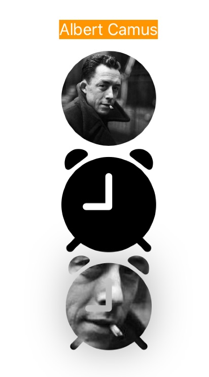<br />
</p>
<p><span class="figure-number">Figure 12: </span>Image Attributes</p>
</div>
</div>
</div>
</div>
<div id="outline-container-orgc456e0a" class="outline-3">
<h3 id="orgc456e0a"><span class="section-number-3">5.3</span> Button</h3>
<div class="outline-text-3" id="text-5-3">
</div>
<div id="outline-container-org0b1930d" class="outline-4">
<h4 id="org0b1930d"><span class="section-number-4">5.3.1</span> Advanced Attributes <sup><a id="fnr.8" class="footref" href="#fn.8">8</a></sup></h4>
<div class="outline-text-4" id="text-5-3-1">
<div class="org-src-container">
<pre class="src src-swift"><span class="linenr"> 1: </span><span style="color: #51afef;">import</span> SwiftUI
<span class="linenr"> 2: </span>
<span class="linenr"> 3: </span><span style="color: #51afef;">struct</span> <span style="color: #c678dd;">ContentView</span>: View {
<span class="linenr"> 4: </span>    <span style="color: #51afef;">var</span> body: <span style="color: #51afef;">some</span> View {
<span class="linenr"> 5: </span>        <span style="color: #c678dd;">VStack</span>(spacing: <span style="color: #da8548; font-weight: bold;">5.0</span>) {
<span class="linenr"> 6: </span>            <span style="color: #c678dd;">Text</span>(<span style="color: #98be65;">"Customized Button"</span>)
<span class="linenr"> 7: </span>              .<span style="color: #c678dd;">font</span>(.<span style="color: #c678dd;">body</span>)
<span class="linenr"> 8: </span>              .<span style="color: #c678dd;">foregroundColor</span>(.<span style="color: #dcaeea;">white</span>)
<span class="linenr"> 9: </span>              .<span style="color: #c678dd;">background</span>(Color.<span style="color: #dcaeea;">orange</span>)
<span class="linenr">10: </span>            <span style="color: #c678dd;">Button</span>(action: {
<span class="linenr">11: </span>                       <span style="color: #c678dd;">print</span>(<span style="color: #98be65;">"Hello button tapped!"</span>)
<span class="linenr">12: </span>                   }) {
<span class="linenr">13: </span>                <span style="color: #c678dd;">Text</span>(<span style="color: #98be65;">"HI HI"</span>)
<span class="linenr">14: </span>                  .<span style="color: #c678dd;">fontWeight</span>(.<span style="color: #dcaeea;">bold</span>)
<span class="linenr">15: </span>                  .<span style="color: #c678dd;">font</span>(.<span style="color: #c678dd;">title</span>)
<span class="linenr">16: </span>                  .<span style="color: #c678dd;">foregroundColor</span>(.<span style="color: #dcaeea;">purple</span>)
<span class="linenr">17: </span>                  .<span style="color: #c678dd;">padding</span>()
<span class="linenr">18: </span>                  .<span style="color: #c678dd;">border</span>(Color.<span style="color: #dcaeea;">purple</span>, width: <span style="color: #da8548; font-weight: bold;">5</span>)
<span class="linenr">19: </span>            }
<span class="linenr">20: </span>            <span style="color: #c678dd;">Button</span>(action: {
<span class="linenr">21: </span>                       <span style="color: #c678dd;">print</span>(<span style="color: #98be65;">"Hello button tapped!"</span>)
<span class="linenr">22: </span>                   }) {
<span class="linenr">23: </span>                <span style="color: #c678dd;">Text</span>(<span style="color: #98be65;">"Press me"</span>)
<span class="linenr">24: </span>                  .<span style="color: #c678dd;">fontWeight</span>(.<span style="color: #dcaeea;">light</span>)
<span class="linenr">25: </span>                  .<span style="color: #c678dd;">font</span>(.<span style="color: #c678dd;">title</span>)
<span class="linenr">26: </span>                  .<span style="color: #c678dd;">foregroundColor</span>(.<span style="color: #dcaeea;">green</span>)
<span class="linenr">27: </span>                  .<span style="color: #c678dd;">padding</span>(<span style="color: #da8548; font-weight: bold;">5</span>)
<span class="linenr">28: </span>                  .<span style="color: #c678dd;">overlay</span>(
<span class="linenr">29: </span>                    <span style="color: #c678dd;">Capsule</span>(style: .<span style="color: #dcaeea;">continuous</span>)
<span class="linenr">30: </span>                      .<span style="color: #c678dd;">stroke</span>(Color.<span style="color: #dcaeea;">green</span>, style: <span style="color: #c678dd;">StrokeStyle</span>(lineWidth: <span style="color: #da8548; font-weight: bold;">3</span>, dash: [<span style="color: #da8548; font-weight: bold;">10</span>]))
<span class="linenr">31: </span>                  )
<span class="linenr">32: </span>            }
<span class="linenr">33: </span>        }
<span class="linenr">34: </span>    }
<span class="linenr">35: </span>}
<span class="linenr">36: </span>
</pre>
</div>
</div>
</div>
<div id="outline-container-org64426a3" class="outline-4">
<h4 id="org64426a3"><span class="section-number-4">5.3.2</span> Demo</h4>
<div class="outline-text-4" id="text-5-3-2">

<div id="orge2b0fec" class="figure">
<p>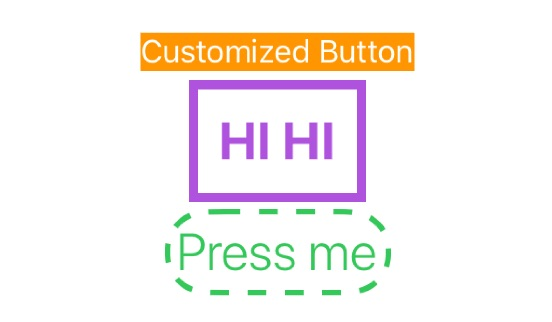<br />
</p>
<p><span class="figure-number">Figure 13: </span>Button Attributes</p>
</div>
</div>
</div>
</div>
<div id="outline-container-org3ab02e3" class="outline-3">
<h3 id="org3ab02e3"><span class="section-number-3">5.4</span> Button, Divider</h3>
<div class="outline-text-3" id="text-5-4">
<div class="org-src-container">
<pre class="src src-swift"><span class="linenr"> 1: </span><span style="color: #5B6268;">//</span>
<span class="linenr"> 2: </span><span style="color: #5B6268;">//  </span><span style="color: #5B6268;">ContentView.swift</span>
<span class="linenr"> 3: </span><span style="color: #5B6268;">//  </span><span style="color: #5B6268;">uitest</span>
<span class="linenr"> 4: </span><span style="color: #5B6268;">//</span>
<span class="linenr"> 5: </span><span style="color: #5B6268;">//  </span><span style="color: #5B6268;">Created by yen yung chin on 2020/7/29.</span>
<span class="linenr"> 6: </span><span style="color: #5B6268;">//  </span><span style="color: #5B6268;">Copyright &#169; 2020 Letranger.tw. All rights reserved.</span>
<span class="linenr"> 7: </span><span style="color: #5B6268;">//</span>
<span class="linenr"> 8: </span>
<span class="linenr"> 9: </span><span style="color: #51afef;">import</span> SwiftUI
<span class="linenr">10: </span>
<span class="linenr">11: </span><span style="color: #51afef;">struct</span> <span style="color: #c678dd;">ContentView</span>: View {
<span class="linenr">12: </span>    <span style="color: #51afef;">@State</span> <span style="color: #51afef;">private</span> <span style="color: #51afef;">var</span> a = <span style="color: #98be65;">""</span>
<span class="linenr">13: </span>    <span style="color: #51afef;">@State</span> <span style="color: #51afef;">private</span> <span style="color: #51afef;">var</span> b = <span style="color: #98be65;">""</span>
<span class="linenr">14: </span>    <span style="color: #51afef;">@State</span> <span style="color: #51afef;">private</span> <span style="color: #51afef;">var</span> c = <span style="color: #98be65;">"Ans:"</span>
<span class="linenr">15: </span>
<span class="linenr">16: </span>    <span style="color: #51afef;">var</span> body: <span style="color: #51afef;">some</span> View {
<span class="linenr">17: </span>        VStack {
<span class="linenr">18: </span>            VStack {
<span class="linenr">19: </span>                <span style="color: #c678dd;">Divider</span>()
<span class="linenr">20: </span>                <span style="color: #c678dd;">TextField</span>(<span style="color: #98be65;">"Number 1: "</span>, text: $b)
<span class="linenr">21: </span>                <span style="color: #c678dd;">Divider</span>()
<span class="linenr">22: </span>                <span style="color: #c678dd;">TextField</span>(<span style="color: #98be65;">"Number 2:"</span>, text: $a)
<span class="linenr">23: </span>                <span style="color: #c678dd;">Divider</span>()
<span class="linenr">24: </span>                <span style="color: #c678dd;">Button</span>(<span style="color: #98be65;">"&#10133;"</span>) {
<span class="linenr">25: </span>                    <span style="color: #51afef;">let</span> one = <span style="color: #c678dd;">Int</span>(<span style="color: #51afef;">self</span>.<span style="color: #dcaeea;">a</span>) ?? <span style="color: #da8548; font-weight: bold;">0</span>
<span class="linenr">26: </span>                    <span style="color: #51afef;">let</span> two = <span style="color: #c678dd;">Int</span>(<span style="color: #51afef;">self</span>.<span style="color: #dcaeea;">b</span>) ?? <span style="color: #da8548; font-weight: bold;">0</span>
<span class="linenr">27: </span>                    <span style="color: #51afef;">self</span>.<span style="color: #dcaeea;">c</span> = <span style="color: #98be65;">"Ans: "</span> + <span style="color: #c678dd;">String</span>(one + two)
<span class="linenr">28: </span>                }
<span class="linenr">29: </span>                  .<span style="color: #c678dd;">frame</span>(width: <span style="color: #da8548; font-weight: bold;">40</span>, height: <span style="color: #da8548; font-weight: bold;">30</span>, alignment: .<span style="color: #c678dd;">center</span>)
<span class="linenr">30: </span>                  .<span style="color: #c678dd;">foregroundColor</span>(.<span style="color: #dcaeea;">white</span>)
<span class="linenr">31: </span>                  .<span style="color: #c678dd;">background</span>(Color.<span style="color: #dcaeea;">green</span>)
<span class="linenr">32: </span>                  .<span style="color: #c678dd;">font</span>(.<span style="color: #dcaeea;">largeTitle</span>)
<span class="linenr">33: </span>                <span style="color: #c678dd;">Divider</span>()
<span class="linenr">34: </span>                <span style="color: #c678dd;">Text</span>(verbatim: c)
<span class="linenr">35: </span>                  .<span style="color: #c678dd;">foregroundColor</span>(.<span style="color: #dcaeea;">gray</span>)
<span class="linenr">36: </span>            }
<span class="linenr">37: </span>              .<span style="color: #c678dd;">frame</span>(width: <span style="color: #da8548; font-weight: bold;">200</span>, height: <span style="color: #da8548; font-weight: bold;">160</span>, alignment: .<span style="color: #c678dd;">center</span>)
<span class="linenr">38: </span>        }
<span class="linenr">39: </span>    }
<span class="linenr">40: </span>}
</pre>
</div>

<div id="orge5cfd91" class="figure">
<p>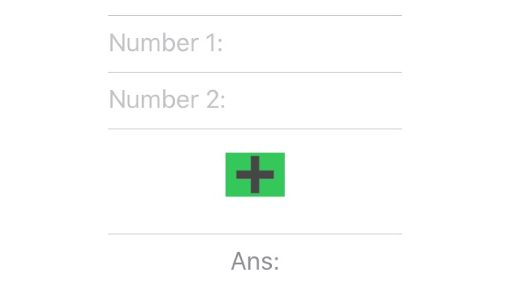<br />
</p>
<p><span class="figure-number">Figure 14: </span>Button</p>
</div>
</div>
</div>
<div id="outline-container-org1bd1941" class="outline-3">
<h3 id="org1bd1941"><span class="section-number-3">5.5</span> background, opacity</h3>
<div class="outline-text-3" id="text-5-5">
<div class="org-src-container">
<pre class="src src-swift"><span class="linenr"> 1: </span><span style="color: #5B6268;">//</span>
<span class="linenr"> 2: </span><span style="color: #5B6268;">//  </span><span style="color: #5B6268;">ContentView.swift</span>
<span class="linenr"> 3: </span><span style="color: #5B6268;">//  </span><span style="color: #5B6268;">uitest</span>
<span class="linenr"> 4: </span><span style="color: #5B6268;">//</span>
<span class="linenr"> 5: </span><span style="color: #5B6268;">//  </span><span style="color: #5B6268;">Created by yen yung chin on 2020/7/29.</span>
<span class="linenr"> 6: </span><span style="color: #5B6268;">//  </span><span style="color: #5B6268;">Copyright &#169; 2020 Letranger.tw. All rights reserved.</span>
<span class="linenr"> 7: </span><span style="color: #5B6268;">//</span>
<span class="linenr"> 8: </span>
<span class="linenr"> 9: </span><span style="color: #51afef;">import</span> SwiftUI
<span class="linenr">10: </span>
<span class="linenr">11: </span><span style="color: #51afef;">struct</span> <span style="color: #c678dd;">ContentView</span>: View {
<span class="linenr">12: </span>    <span style="color: #51afef;">@State</span> <span style="color: #51afef;">private</span> <span style="color: #51afef;">var</span> a = <span style="color: #98be65;">""</span>
<span class="linenr">13: </span>    <span style="color: #51afef;">@State</span> <span style="color: #51afef;">private</span> <span style="color: #51afef;">var</span> b = <span style="color: #98be65;">""</span>
<span class="linenr">14: </span>    <span style="color: #51afef;">@State</span> <span style="color: #51afef;">private</span> <span style="color: #51afef;">var</span> c = <span style="color: #98be65;">"Ans:"</span>
<span class="linenr">15: </span>
<span class="linenr">16: </span>    <span style="color: #51afef;">var</span> body: <span style="color: #51afef;">some</span> View {
<span class="linenr">17: </span>        <span style="color: #c678dd;">VStack</span>(alignment: .<span style="color: #c678dd;">center</span>) {
<span class="linenr">18: </span>            <span style="color: #c678dd;">Text</span>(<span style="color: #98be65;">"&#35336;&#31639;&#27231;"</span>)
<span class="linenr">19: </span>            <span style="color: #c678dd;">Divider</span>()
<span class="linenr">20: </span>            <span style="color: #c678dd;">TextField</span>(<span style="color: #98be65;">"Number 1: "</span>, text: $b)
<span class="linenr">21: </span>            <span style="color: #c678dd;">Divider</span>()
<span class="linenr">22: </span>            <span style="color: #c678dd;">TextField</span>(<span style="color: #98be65;">"Number 2:"</span>, text: $a)
<span class="linenr">23: </span>            <span style="color: #c678dd;">Divider</span>()
<span class="linenr">24: </span>            <span style="color: #c678dd;">Button</span>(<span style="color: #98be65;">"&#10133;"</span>) {
<span class="linenr">25: </span>                <span style="color: #51afef;">let</span> one = <span style="color: #c678dd;">Int</span>(<span style="color: #51afef;">self</span>.<span style="color: #dcaeea;">a</span>) ?? <span style="color: #da8548; font-weight: bold;">0</span>
<span class="linenr">26: </span>                <span style="color: #51afef;">let</span> two = <span style="color: #c678dd;">Int</span>(<span style="color: #51afef;">self</span>.<span style="color: #dcaeea;">b</span>) ?? <span style="color: #da8548; font-weight: bold;">0</span>
<span class="linenr">27: </span>                <span style="color: #51afef;">self</span>.<span style="color: #dcaeea;">c</span> = <span style="color: #98be65;">"Ans: "</span> + <span style="color: #c678dd;">String</span>(one + two)
<span class="linenr">28: </span>            }
<span class="linenr">29: </span>              .<span style="color: #c678dd;">frame</span>(width: <span style="color: #da8548; font-weight: bold;">40</span>, height: <span style="color: #da8548; font-weight: bold;">30</span>, alignment: .<span style="color: #c678dd;">center</span>)
<span class="linenr">30: </span>              .<span style="color: #c678dd;">foregroundColor</span>(.<span style="color: #dcaeea;">white</span>)
<span class="linenr">31: </span>              .<span style="color: #c678dd;">background</span>(Color.<span style="color: #dcaeea;">white</span>)
<span class="linenr">32: </span>              .<span style="color: #c678dd;">font</span>(.<span style="color: #dcaeea;">largeTitle</span>)
<span class="linenr">33: </span>            <span style="color: #c678dd;">Divider</span>()
<span class="linenr">34: </span>            <span style="color: #c678dd;">Text</span>(verbatim: c)
<span class="linenr">35: </span>              .<span style="color: #c678dd;">foregroundColor</span>(.<span style="color: #dcaeea;">black</span>)
<span class="linenr">36: </span>
<span class="linenr">37: </span>
<span class="linenr">38: </span>        }
<span class="linenr">39: </span>          .<span style="color: #c678dd;">padding</span>(<span style="color: #da8548; font-weight: bold;">60</span>)
<span class="linenr">40: </span>          .<span style="color: #c678dd;">background</span>(<span style="color: #c678dd;">Image</span>(<span style="color: #98be65;">"background"</span>).<span style="color: #c678dd;">resizable</span>().<span style="color: #c678dd;">scaledToFill</span>())
<span class="linenr">41: </span>          .<span style="color: #c678dd;">opacity</span>(<span style="color: #da8548; font-weight: bold;">0.9</span>)
<span class="linenr">42: </span>    }
<span class="linenr">43: </span>}
<span class="linenr">44: </span><span style="color: #51afef;">struct</span> <span style="color: #c678dd;">ContentView_Previews</span>: PreviewProvider {
<span class="linenr">45: </span>    <span style="color: #51afef;">static</span> <span style="color: #51afef;">var</span> previews: <span style="color: #51afef;">some</span> View {
<span class="linenr">46: </span>        <span style="color: #c678dd;">ContentView</span>()
<span class="linenr">47: </span>    }
<span class="linenr">48: </span>}
<span class="linenr">49: </span>
<span class="linenr">50: </span>
</pre>
</div>

<div id="org5fbdd3f" class="figure">
<p>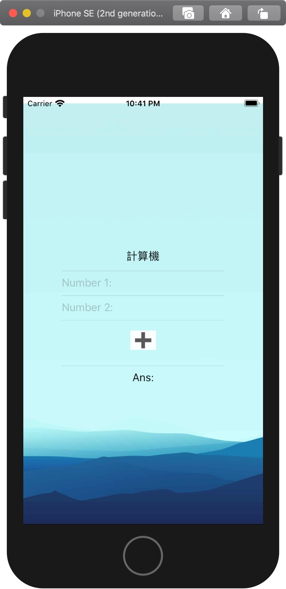<br />
</p>
<p><span class="figure-number">Figure 15: </span>Background</p>
</div>
</div>
</div>
<div id="outline-container-org88c086b" class="outline-3">
<h3 id="org88c086b"><span class="section-number-3">5.6</span> Further reading</h3>
<div class="outline-text-3" id="text-5-6">
<ul class="org-ul">
<li><a href="https://www.simpleswiftguide.com/advanced-swiftui-button-styling-and-animation/">Advanced SwiftUI button styling and animation</a><br /></li>
</ul>
</div>
</div>
</div>
<div id="outline-container-list" class="outline-2">
<h2 id="list"><span class="section-number-2">6</span> List</h2>
<div class="outline-text-2" id="text-list">
</div>
<div id="outline-container-orgeb2fba2" class="outline-3">
<h3 id="orgeb2fba2"><span class="section-number-3">6.1</span> What is List</h3>
<div class="outline-text-3" id="text-6-1">
<div class="org-src-container">
<pre class="src src-swift"><span class="linenr">1: </span><span style="color: #51afef;">struct</span> <span style="color: #c678dd;">ContentView</span>: View {
<span class="linenr">2: </span>    <span style="color: #51afef;">var</span> body: <span style="color: #51afef;">some</span> View {
<span class="linenr">3: </span>        List {
<span class="linenr">4: </span>            <span style="color: #c678dd;">Text</span>(<span style="color: #98be65;">"Hello world."</span>)
<span class="linenr">5: </span>            <span style="color: #c678dd;">Text</span>(<span style="color: #98be65;">"Hello world."</span>)
<span class="linenr">6: </span>            <span style="color: #c678dd;">Text</span>(<span style="color: #98be65;">"Hello world."</span>)
<span class="linenr">7: </span>        }
<span class="linenr">8: </span>    }
<span class="linenr">9: </span>}
</pre>
</div>
</div>
</div>
<div id="outline-container-org20b3ad3" class="outline-3">
<h3 id="org20b3ad3"><span class="section-number-3">6.2</span> 準備單一 cell 格式</h3>
<div class="outline-text-3" id="text-6-2">
<div class="org-src-container">
<pre class="src src-swift"><span class="linenr"> 1: </span><span style="color: #51afef;">import</span> SwiftUI
<span class="linenr"> 2: </span>
<span class="linenr"> 3: </span><span style="color: #51afef;">struct</span> <span style="color: #c678dd;">ContentView</span>: View {
<span class="linenr"> 4: </span>    <span style="color: #51afef;">var</span> body: <span style="color: #51afef;">some</span> View {
<span class="linenr"> 5: </span>        HStack {
<span class="linenr"> 6: </span>            <span style="color: #c678dd;">Image</span>(systemName: <span style="color: #98be65;">"book"</span>)
<span class="linenr"> 7: </span>              .<span style="color: #c678dd;">resizable</span>()
<span class="linenr"> 8: </span>              .<span style="color: #c678dd;">frame</span>(width: <span style="color: #da8548; font-weight: bold;">30</span>, height: <span style="color: #da8548; font-weight: bold;">30</span>, alignment: .<span style="color: #c678dd;">center</span>)
<span class="linenr"> 9: </span>            <span style="color: #c678dd;">VStack</span>(alignment: .<span style="color: #dcaeea;">leading</span>) {
<span class="linenr">10: </span>                <span style="color: #c678dd;">Text</span>(<span style="color: #98be65;">"Artificial Intelligence: A Modern Approach"</span>)
<span class="linenr">11: </span>                  .<span style="color: #c678dd;">multilineTextAlignment</span>(.<span style="color: #dcaeea;">leading</span>)
<span class="linenr">12: </span>                  .<span style="color: #c678dd;">foregroundColor</span>(Color.<span style="color: #dcaeea;">green</span>)
<span class="linenr">13: </span>                <span style="color: #c678dd;">Text</span>(<span style="color: #98be65;">"Stuart Russell and Peter Norvig"</span>)
<span class="linenr">14: </span>                  .<span style="color: #c678dd;">multilineTextAlignment</span>(.<span style="color: #dcaeea;">leading</span>)
<span class="linenr">15: </span>                  .<span style="color: #c678dd;">foregroundColor</span>(Color.<span style="color: #dcaeea;">orange</span>)
<span class="linenr">16: </span>            }
<span class="linenr">17: </span>        }
<span class="linenr">18: </span>    }
<span class="linenr">19: </span>}
<span class="linenr">20: </span>
</pre>
</div>

<div id="org3b5add4" class="figure">
<p>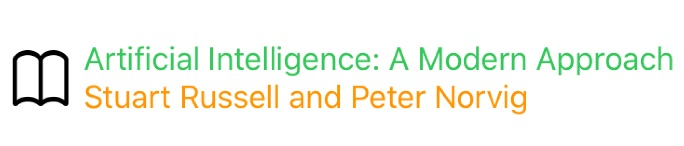<br />
</p>
<p><span class="figure-number">Figure 16: </span>Single cell</p>
</div>
</div>
</div>
<div id="outline-container-org3096700" class="outline-3">
<h3 id="org3096700"><span class="section-number-3">6.3</span> 轉入 List 格式(靜態 List)</h3>
<div class="outline-text-3" id="text-6-3">
</div>
<div id="outline-container-org8a9ec89" class="outline-4">
<h4 id="org8a9ec89"><span class="section-number-4">6.3.1</span> 將最外層的 VStack 加入 List 中</h4>
<div class="outline-text-4" id="text-6-3-1">

<div id="org014ebae" class="figure">
<p>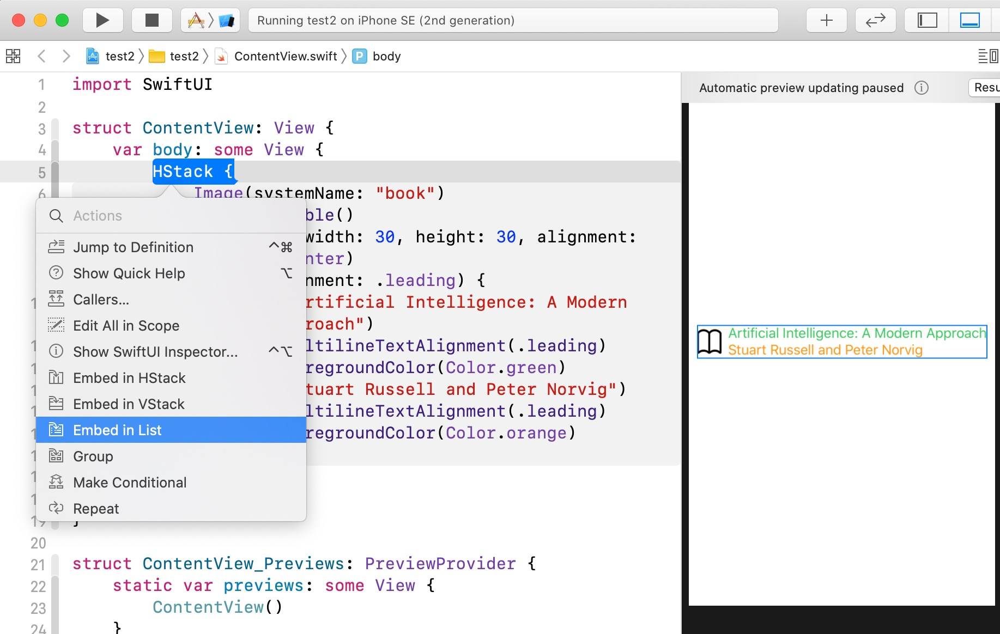<br />
</p>
<p><span class="figure-number">Figure 17: </span>List-1</p>
</div>
</div>
</div>
<div id="outline-container-org8c87ceb" class="outline-4">
<h4 id="org8c87ceb"><span class="section-number-4">6.3.2</span> list 語法</h4>
<div class="outline-text-4" id="text-6-3-2">
<div class="org-src-container">
<pre class="src src-swift"><span class="linenr"> 1: </span><span style="color: #51afef;">import</span> SwiftUI
<span class="linenr"> 2: </span>
<span class="linenr"> 3: </span><span style="color: #51afef;">struct</span> <span style="color: #c678dd;">ContentView</span>: View {
<span class="linenr"> 4: </span>    <span style="color: #51afef;">var</span> body: <span style="color: #51afef;">some</span> View {
<span class="linenr"> 5: </span>        <span style="color: #c678dd;">List</span>(<span style="color: #da8548; font-weight: bold;">0</span> ..&lt; <span style="color: #da8548; font-weight: bold;">5</span>) { item <span style="color: #51afef;">in</span>
<span class="linenr"> 6: </span>            <span style="color: #c678dd;">Image</span>(systemName: <span style="color: #98be65;">"book"</span>)
<span class="linenr"> 7: </span>              .<span style="color: #c678dd;">resizable</span>()
<span class="linenr"> 8: </span>              .<span style="color: #c678dd;">frame</span>(width: <span style="color: #da8548; font-weight: bold;">30</span>, height: <span style="color: #da8548; font-weight: bold;">30</span>, alignment: .<span style="color: #c678dd;">center</span>)
<span class="linenr"> 9: </span>            <span style="color: #c678dd;">VStack</span>(alignment: .<span style="color: #dcaeea;">leading</span>) {
<span class="linenr">10: </span>                <span style="color: #c678dd;">Text</span>(<span style="color: #98be65;">"Artificial Intelligence: A Modern Approach"</span>)
<span class="linenr">11: </span>                  .<span style="color: #c678dd;">multilineTextAlignment</span>(.<span style="color: #dcaeea;">leading</span>)
<span class="linenr">12: </span>                  .<span style="color: #c678dd;">foregroundColor</span>(Color.<span style="color: #dcaeea;">green</span>)
<span class="linenr">13: </span>                <span style="color: #c678dd;">Text</span>(<span style="color: #98be65;">"Stuart Russell and Peter Norvig"</span>)
<span class="linenr">14: </span>                  .<span style="color: #c678dd;">multilineTextAlignment</span>(.<span style="color: #dcaeea;">leading</span>)
<span class="linenr">15: </span>                  .<span style="color: #c678dd;">foregroundColor</span>(Color.<span style="color: #dcaeea;">orange</span>)
<span class="linenr">16: </span>            }
<span class="linenr">17: </span>        }
<span class="linenr">18: </span>    }
<span class="linenr">19: </span>}
</pre>
</div>
</div>
</div>
<div id="outline-container-orgd9b35c5" class="outline-4">
<h4 id="orgd9b35c5"><span class="section-number-4">6.3.3</span> 結果</h4>
<div class="outline-text-4" id="text-6-3-3">

<div id="org82971e2" class="figure">
<p>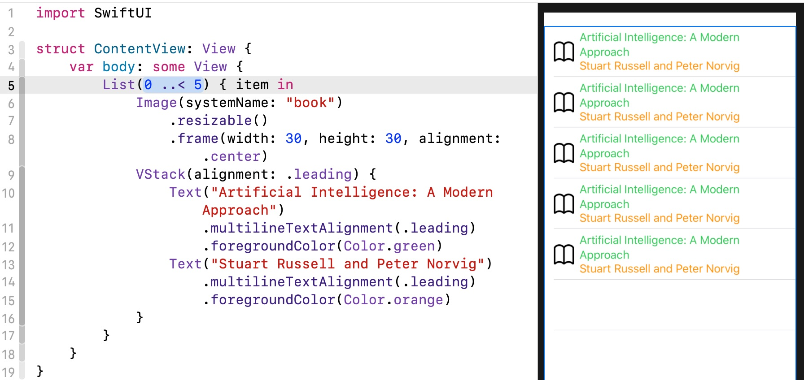<br />
</p>
<p><span class="figure-number">Figure 18: </span>List-2</p>
</div>
</div>
</div>
</div>
<div id="outline-container-org1d99ed9" class="outline-3">
<h3 id="org1d99ed9"><span class="section-number-3">6.4</span> 建立 list 來源資料(動態 List) <sup><a id="fnr.3.100" class="footref" href="#fn.3">3</a></sup></h3>
<div class="outline-text-3" id="text-6-4">
<p class="verse">
In order to handle dynamic items, you must first tell SwiftUI how it can identify which item is which. This is done using the Identifiable protocol, which has only one requirement: some sort of id value that SwiftUI can use to see which item is which. <sup><a id="fnr.9" class="footref" href="#fn.9">9</a></sup><br />
</p>
<div class="org-src-container">
<pre class="src src-swift"><span class="linenr"> 1: </span><span style="color: #51afef;">import</span> SwiftUI
<span class="linenr"> 2: </span>
<span class="linenr"> 3: </span><span style="color: #5B6268;">//</span><span style="color: #5B6268;">&#24314;&#31435;book struct&#6;</span>
<span class="linenr"> 4: </span><span style="color: #51afef;">struct</span> <span style="color: #c678dd;">Book</span>: Identifiable {
<span class="linenr"> 5: </span>    <span style="color: #51afef;">var</span> id = <span style="color: #c678dd;">UUID</span>()
<span class="linenr"> 6: </span>    <span style="color: #51afef;">var</span> title: <span style="color: #c678dd;">String</span>
<span class="linenr"> 7: </span>    <span style="color: #51afef;">var</span> author: <span style="color: #c678dd;">String</span>
<span class="linenr"> 8: </span>    <span style="color: #51afef;">var</span> image: <span style="color: #c678dd;">String</span>
<span class="linenr"> 9: </span>}
<span class="linenr">10: </span>
<span class="linenr">11: </span><span style="color: #51afef;">struct</span> <span style="color: #c678dd;">ContentView</span>: View {
<span class="linenr">12: </span>    <span style="color: #51afef;">var</span> books = [
<span class="linenr">13: </span>      <span style="color: #c678dd;">Book</span>(id: <span style="color: #c678dd;">UUID</span>(), title: <span style="color: #98be65;">"&#22320;&#29508;&#34253;&#35519;"</span>, author: <span style="color: #98be65;">"&#26446;&#26597;&#24503;"</span>, image: <span style="color: #98be65;">"b1"</span>),
<span class="linenr">14: </span>      <span style="color: #c678dd;">Book</span>(id: <span style="color: #c678dd;">UUID</span>(), title: <span style="color: #98be65;">"&#33267;&#27515;&#26041;&#20241;"</span>, author: <span style="color: #98be65;">"&#26446;&#26597;&#24503;"</span>, image: <span style="color: #98be65;">"b2"</span>),
<span class="linenr">15: </span>      <span style="color: #c678dd;">Book</span>(id: <span style="color: #c678dd;">UUID</span>(), title: <span style="color: #98be65;">"&#19968;&#35320;&#21363;&#30332;"</span>, author: <span style="color: #98be65;">"&#26446;&#26597;&#24503;"</span>, image: <span style="color: #98be65;">"b3"</span>),
<span class="linenr">16: </span>      <span style="color: #c678dd;">Book</span>(id: <span style="color: #c678dd;">UUID</span>(), title: <span style="color: #98be65;">"&#32034;&#21629;&#35370;&#23458;"</span>, author: <span style="color: #98be65;">"&#26446;&#26597;&#24503;"</span>, image: <span style="color: #98be65;">"b4"</span>),
<span class="linenr">17: </span>      <span style="color: #c678dd;">Book</span>(id: <span style="color: #c678dd;">UUID</span>(), title: <span style="color: #98be65;">"&#38343;&#22812;&#22238;&#32882; "</span>, author: <span style="color: #98be65;">"&#26446;&#26597;&#24503;"</span>, image: <span style="color: #98be65;">"b5"</span>)]
<span class="linenr">18: </span>
<span class="linenr">19: </span>    <span style="color: #5B6268;">//</span><span style="color: #5B6268;">.....</span>
<span class="linenr">20: </span>}
</pre>
</div>
</div>
</div>
<div id="outline-container-org6c328e1" class="outline-3">
<h3 id="org6c328e1"><span class="section-number-3">6.5</span> 將資料連結到列表中 <sup><a id="fnr.3.100" class="footref" href="#fn.3">3</a></sup></h3>
<div class="outline-text-3" id="text-6-5">
<div class="org-src-container">
<pre class="src src-swift"><span class="linenr"> 1: </span><span style="color: #51afef;">import</span> SwiftUI
<span class="linenr"> 2: </span>
<span class="linenr"> 3: </span><span style="color: #5B6268;">//</span><span style="color: #5B6268;">....</span>
<span class="linenr"> 4: </span><span style="color: #51afef;">var</span> body: <span style="color: #51afef;">some</span> View {
<span class="linenr"> 5: </span>    <span style="color: #c678dd;">List</span>(books) { book <span style="color: #51afef;">in</span>
<span class="linenr"> 6: </span>        <span style="color: #c678dd;">Image</span>(book.<span style="color: #dcaeea;">image</span>)
<span class="linenr"> 7: </span>          .<span style="color: #c678dd;">resizable</span>()
<span class="linenr"> 8: </span>          .<span style="color: #c678dd;">frame</span>(width: <span style="color: #da8548; font-weight: bold;">40</span>, height: <span style="color: #da8548; font-weight: bold;">40</span>, alignment: .<span style="color: #c678dd;">center</span>)
<span class="linenr"> 9: </span>        <span style="color: #c678dd;">VStack</span>(alignment: .<span style="color: #dcaeea;">leading</span>) {
<span class="linenr">10: </span>            <span style="color: #c678dd;">Text</span>(book.<span style="color: #c678dd;">title</span>)
<span class="linenr">11: </span>              .<span style="color: #c678dd;">multilineTextAlignment</span>(.<span style="color: #dcaeea;">leading</span>)
<span class="linenr">12: </span>              .<span style="color: #c678dd;">foregroundColor</span>(Color.<span style="color: #dcaeea;">green</span>)
<span class="linenr">13: </span>            <span style="color: #c678dd;">Text</span>(book.<span style="color: #c678dd;">author</span>)
<span class="linenr">14: </span>              .<span style="color: #c678dd;">multilineTextAlignment</span>(.<span style="color: #dcaeea;">leading</span>)
<span class="linenr">15: </span>              .<span style="color: #c678dd;">foregroundColor</span>(Color.<span style="color: #dcaeea;">orange</span>)
<span class="linenr">16: </span>        }
<span class="linenr">17: </span>    }
<span class="linenr">18: </span>}
<span class="linenr">19: </span>}
</pre>
</div>
</div>
</div>
<div id="outline-container-orgc755ddf" class="outline-3">
<h3 id="orgc755ddf"><span class="section-number-3">6.6</span> 結果</h3>
<div class="outline-text-3" id="text-6-6">

<div id="orge95371d" class="figure">
<p>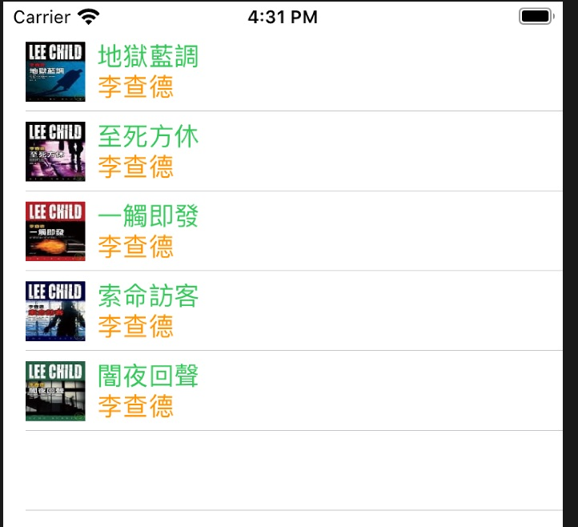<br />
</p>
<p><span class="figure-number">Figure 19: </span>List-3</p>
</div>
</div>
</div>
<div id="outline-container-org2e6f52b" class="outline-3">
<h3 id="org2e6f52b"><span class="section-number-3">6.7</span> 為什麼要加入 id 與 Identifiable</h3>
<div class="outline-text-3" id="text-6-7">
<ul class="org-ul">
<li>Identifiable: 允許 Array 中有重複值<br /></li>
<li>id: 明確區分重複值<br /></li>
<li>UUID: 自動生成 unique 值<br /></li>
<li>詳細說明如<a href="https://medium.com/flawless-app-stories/swiftui-dynamic-list-identifiable-73c56215f9ff">SwiftUI - Dynamic List &amp; Identifiable</a><br /></li>
</ul>
</div>
</div>
<div id="outline-container-orgf4c2416" class="outline-3">
<h3 id="orgf4c2416"><span class="section-number-3">6.8</span> Reading source</h3>
<div class="outline-text-3" id="text-6-8">
<ul class="org-ul">
<li><a href="https://www.youtube.com/watch?v=bz6GTYaIQXU">SwiftUI Basics: Dynamic Lists, HStack VStack, Images with Circle Clipped Stroke Overlays</a><br /></li>
<li><a href="https://developer.apple.com/tutorials/swiftui/building-lists-and-navigation">Building Lists and Navigation</a><br /></li>
</ul>
</div>
</div>
</div>
<div id="outline-container-StateBinding" class="outline-2">
<h2 id="StateBinding"><span class="section-number-2">7</span> Passing data between Views #1: @State and @Binding</h2>
<div class="outline-text-2" id="text-StateBinding">
</div>
<div id="outline-container-org3d40f29" class="outline-3">
<h3 id="org3d40f29"><span class="section-number-3">7.1</span> @State</h3>
<div class="outline-text-3" id="text-7-1">
<ul class="org-ul">
<li>State is a value, or a set of values, that can change over time, and that affects a view’s behavior, content, or layout. You use a property with the @State attribute to add state to a view.<br /></li>
<li>通過使用 @State 修飾器我們可以關聯出 View 的狀態. SwiftUI 將會把使用過 @State 修飾器的屬性存儲到一個特殊的內存區域(heap)，並且這個區域和 View struct 是隔離的. 當 @State 裝飾過的屬性發生了變化，SwiftUI 會根據新的屬性值重新創建View。<sup><a id="fnr.10" class="footref" href="#fn.10">10</a></sup><br /></li>
<li>Simple properties like String or Int<br /></li>
<li>Belongs to a specific view<br /></li>
<li>Never used outside that view<br /></li>
<li>The wrappedValue is: anything (but almost certainly a value type).<br /></li>
<li>What it does: stores the wrappedValue in the heap; when it changes, invalidates the View.<br /></li>
<li>Projected value (i.e. $): a Binding (to that value in the heap).<br /></li>
</ul>
</div>
</div>
<div id="outline-container-orgfe165cb" class="outline-3">
<h3 id="orgfe165cb"><span class="section-number-3">7.2</span> @Binding</h3>
<div class="outline-text-3" id="text-7-2">
<ul class="org-ul">
<li>@Binding is one of SwiftUI’s less used property wrappers, but it’s still hugely important: it lets us declare that one value actually comes from elsewhere, and should be shared in both places. This is not the same as @ObservedObject or @EnvironmentObject, both of which are designed for reference types to be shared across potentially many views.<sup><a id="fnr.11" class="footref" href="#fn.11">11</a></sup><br /></li>
<li>有時候我們會把一個視圖的屬性傳至子節點中，但是又不能直接的傳遞給子節點，因為在 Swift 中值的傳遞形式是值類型傳遞方式，也就是傳遞給子節點的是一個拷貝過的值。但是通過 @Binding 修飾器修飾後，屬性變成了一個引用類型，傳遞變成了引用傳遞，這樣父子視圖的狀態就能關聯起來了。<sup><a id="fnr.10.100" class="footref" href="#fn.10">10</a></sup><br /></li>
<li>The wrappedValue is: a value that is bound to something else.<br /></li>
<li>What it does: gets/sets the value of the wrappedValue from some other source.<br /></li>
<li>What it does: when the bound-to value changes, it invalidates the View.<br /></li>
<li>Projected value (i.e. $): a Binding (self; i.e. the Binding itself)<br /></li>
</ul>
</div>
</div>
<div id="outline-container-org54e6c2b" class="outline-3">
<h3 id="org54e6c2b"><span class="section-number-3">7.3</span> Time to use Binding</h3>
<div class="outline-text-3" id="text-7-3">
<p>
Bindings are all about having a <b>single source of the truth (data)!</b>.<br />
</p>
<ul class="org-ul">
<li>Getting text out of a TextField<br /></li>
<li>Using a Toggle or other state-modifying UI element<br /></li>
<li>Finding out which ittem in a NavigationView was chosen.<br /></li>
<li>Find out whether we&rsquo;re being targeted with a Drag<br /></li>
<li>Binding our gesture to the .updating function of a gesture.<br /></li>
</ul>
</div>
</div>
<div id="outline-container-org243fc2d" class="outline-3">
<h3 id="org243fc2d"><span class="section-number-3">7.4</span> Demo 1: @State v.s. @Bidning</h3>
<div class="outline-text-3" id="text-7-4">
<p>
透過@State 與@Bidning, ContentView.swift 可以將變數 switchIsOn pass 給 SwitchView.swift，而後者可以藉由更改變數值來改變 ContentView.swift 的顯示結果。<br />
</p>
</div>
<div id="outline-container-org11e5ca2" class="outline-4">
<h4 id="org11e5ca2"><span class="section-number-4">7.4.1</span> ContentView.swift</h4>
<div class="outline-text-4" id="text-7-4-1">
<div class="org-src-container">
<pre class="src src-swift"><span class="linenr"> 1: </span><span style="color: #51afef;">import</span> SwiftUI
<span class="linenr"> 2: </span>
<span class="linenr"> 3: </span><span style="color: #51afef;">struct</span> <span style="color: #c678dd;">ContentView</span>: View {
<span class="linenr"> 4: </span>    <span style="color: #51afef;">@State</span> <span style="color: #51afef;">var</span> switchIsOn = <span style="color: #a9a1e1;">false</span>
<span class="linenr"> 5: </span>
<span class="linenr"> 6: </span>    <span style="color: #51afef;">var</span> body: <span style="color: #51afef;">some</span> Vie {
<span class="linenr"> 7: </span>        VStack {
<span class="linenr"> 8: </span>            <span style="color: #c678dd;">Text</span>(switchIsOn ? <span style="color: #98be65;">"-_-"</span> : <span style="color: #98be65;">"^_^"</span>)
<span class="linenr"> 9: </span>            <span style="color: #c678dd;">SwitchView</span>(switchIsOn: $switchIsOn)
<span class="linenr">10: </span>        }
<span class="linenr">11: </span>    }
<span class="linenr">12: </span>}
</pre>
</div>
</div>
</div>
<div id="outline-container-org5b5885c" class="outline-4">
<h4 id="org5b5885c"><span class="section-number-4">7.4.2</span> SwitchView.swift</h4>
<div class="outline-text-4" id="text-7-4-2">
<div class="org-src-container">
<pre class="src src-swift"><span class="linenr"> 1: </span><span style="color: #51afef;">import</span> SwiftUI
<span class="linenr"> 2: </span>
<span class="linenr"> 3: </span><span style="color: #51afef;">struct</span> <span style="color: #c678dd;">SwitchView</span>: View {
<span class="linenr"> 4: </span>    <span style="color: #51afef;">@Binding</span> <span style="color: #51afef;">var</span> swtichIsOn: <span style="color: #c678dd;">Bool</span>
<span class="linenr"> 5: </span>
<span class="linenr"> 6: </span>    <span style="color: #51afef;">var</span> body: <span style="color: #51afef;">some</span> View {
<span class="linenr"> 7: </span>        <span style="color: #c678dd;">Toggle</span>(isOn: $switchIsOn, label: {
<span class="linenr"> 8: </span>            <span style="color: #c678dd;">Text</span>(switchIsOn ? <span style="color: #98be65;">"ON"</span> : <span style="color: #98be65;">"OFF"</span>)
<span class="linenr"> 9: </span>        })
<span class="linenr">10: </span>    }
<span class="linenr">11: </span>}
</pre>
</div>
</div>
</div>
</div>
<div id="outline-container-org2911805" class="outline-3">
<h3 id="org2911805"><span class="section-number-3">7.5</span> Demo 2: sharing data between Views</h3>
<div class="outline-text-3" id="text-7-5">
<p>
目的：在 ContentView 中按下 Button，至 Order View 輸入下單內容，最後將下單內容傳回 ContentView<br />
</p>
</div>
<div id="outline-container-orgd838b2a" class="outline-4">
<h4 id="orgd838b2a"><span class="section-number-4">7.5.1</span> ContentView.swift: Version-1</h4>
<div class="outline-text-4" id="text-7-5-1">
<div class="org-src-container">
<pre class="src src-swift"><span class="linenr">1: </span><span style="color: #51afef;">struct</span> <span style="color: #c678dd;">ContentView</span>: View {
<span class="linenr">2: </span>    <span style="color: #51afef;">var</span> body: <span style="color: #51afef;">some</span> View {
<span class="linenr">3: </span>        VStack {
<span class="linenr">4: </span>            <span style="color: #c678dd;">Button</span>(<span style="color: #98be65;">"&#19979;&#21934;"</span>) {
<span class="linenr">5: </span>            }
<span class="linenr">6: </span>        }
<span class="linenr">7: </span>    }
<span class="linenr">8: </span>}
</pre>
</div>
</div>
</div>
<div id="outline-container-org49e7c75" class="outline-4">
<h4 id="org49e7c75"><span class="section-number-4">7.5.2</span> Order.swift</h4>
<div class="outline-text-4" id="text-7-5-2">
<p>
於主程式ContentView中click button 後，秀出目標 View (order), 下單 View 內容為：<br />
</p>
<div class="org-src-container">
<pre class="src src-swift"><span class="linenr"> 1: </span><span style="color: #51afef;">import</span> SwiftUI
<span class="linenr"> 2: </span>
<span class="linenr"> 3: </span><span style="color: #51afef;">struct</span> <span style="color: #c678dd;">Order</span>: View {
<span id="coderef-bindBack" class="coderef-off"><span class="linenr"> 4: </span>    <span style="color: #51afef;">@Binding</span> <span style="color: #51afef;">var</span> orders:<span style="color: #c678dd;">String</span></span>
<span class="linenr"> 5: </span>    <span style="color: #51afef;">var</span> body: <span style="color: #51afef;">some</span> View {
<span class="linenr"> 6: </span>        VStack {
<span class="linenr"> 7: </span>            <span style="color: #c678dd;">Text</span>(<span style="color: #98be65;">"&#19979;&#21934;&#21312;"</span>)
<span class="linenr"> 8: </span>            <span style="color: #c678dd;">TextField</span>(<span style="color: #98be65;">"&#35531;&#36664;&#20837;&#35201;&#36092;&#36023;&#30340;&#29289;&#21697;"</span>, text: $orders)
<span class="linenr"> 9: </span>              .<span style="color: #c678dd;">textFieldStyle</span>(<span style="color: #c678dd;">RoundedBorderTextFieldStyle</span>())
<span class="linenr">10: </span>              .<span style="color: #c678dd;">padding</span>()
<span class="linenr">11: </span>        }
<span class="linenr">12: </span>    }
<span class="linenr">13: </span>}
<span class="linenr">14: </span>
<span class="linenr">15: </span><span style="color: #51afef;">struct</span> <span style="color: #c678dd;">Order_Previews</span>: PreviewProvider {
<span class="linenr">16: </span>    <span style="color: #51afef;">static</span> <span style="color: #51afef;">var</span> previews: <span style="color: #51afef;">some</span> View {
<span id="coderef-ordersPassing" class="coderef-off"><span class="linenr">17: </span>        <span style="color: #c678dd;">Order</span>(orders: .<span style="color: #c678dd;">constant</span>(<span style="color: #98be65;">""</span>))</span>
<span class="linenr">18: </span>    }
<span class="linenr">19: </span>}
<span class="linenr">20: </span>
</pre>
</div>
<p>
程式中第<a href="#coderef-bindBack" class="coderef" onmouseover="CodeHighlightOn(this, 'coderef-bindBack');" onmouseout="CodeHighlightOff(this, 'coderef-bindBack');">4</a>行的 orders 為儲存下單內容的字串，並於稍後將字串內容傳回主程式，故這個 property 主要是來自 ContentView 中的某一個變數(property)，並在 ContentView 呼叫(或秀出)order View 時要交待清楚變數來源(傳遞參數)。這也可以從底下的 Order<sub>previews</sub> 在要呼叫 Order 時會被強迫填入一個參數(第<a href="#coderef-ordersPassing" class="coderef" onmouseover="CodeHighlightOn(this, 'coderef-ordersPassing');" onmouseout="CodeHighlightOff(this, 'coderef-ordersPassing');">17</a>行)看出其呼叫方式。<br />
</p>
</div>
</div>
<div id="outline-container-org5dd9aba" class="outline-4">
<h4 id="org5dd9aba"><span class="section-number-4">7.5.3</span> ContentView.swift: Version-2</h4>
<div class="outline-text-4" id="text-7-5-3">
<p>
而此時的 ContentView 再加入呼叫 Order 以及準備傳過去的參數，其內容如下(應該是要先在 ContentView 宣告好這個參數，不過此處先依反向順序進行以利說明)：<br />
</p>
<div class="org-src-container">
<pre class="src src-swift"><span class="linenr"> 1: </span><span style="color: #51afef;">struct</span> <span style="color: #c678dd;">ContentView</span>: View {
<span id="coderef-initIsP" class="coderef-off"><span class="linenr"> 2: </span>    <span style="color: #51afef;">@State</span> <span style="color: #51afef;">private</span> <span style="color: #51afef;">var</span> isPresented: <span style="color: #c678dd;">Bool</span> = <span style="color: #a9a1e1;">false</span></span>
<span class="linenr"> 3: </span>    <span style="color: #51afef;">@State</span> <span style="color: #51afef;">private</span> <span style="color: #51afef;">var</span> orderContent: <span style="color: #c678dd;">String</span> = <span style="color: #98be65;">""</span>
<span class="linenr"> 4: </span>    <span style="color: #51afef;">var</span> body: <span style="color: #51afef;">some</span> View {
<span class="linenr"> 5: </span>
<span class="linenr"> 6: </span>        VStack {
<span class="linenr"> 7: </span>            <span style="color: #c678dd;">Button</span>(<span style="color: #98be65;">"&#19979;&#21934;"</span>) {
<span class="linenr"> 8: </span>                <span style="color: #51afef;">self</span>.<span style="color: #c678dd;">isPresented</span> = <span style="color: #a9a1e1;">true</span>
<span class="linenr"> 9: </span>            }.<span style="color: #c678dd;">sheet</span>(isPresented: <span style="color: #51afef;">self</span>.$isPresented, content: {
<span id="coderef-callOrder" class="coderef-off"><span class="linenr">10: </span>                                                        <span style="color: #c678dd;">Order</span>(orders: $orderContent)</span>
<span class="linenr">11: </span>                                                    })
<span class="linenr">12: </span>            <span style="color: #c678dd;">Text</span>(orderContent)
<span class="linenr">13: </span>        }
<span class="linenr">14: </span>    }
<span class="linenr">15: </span>}
</pre>
</div>

<p>
ContentView 的第<a href="#coderef-callOrder" class="coderef" onmouseover="CodeHighlightOn(this, 'coderef-callOrder');" onmouseout="CodeHighlightOff(this, 'coderef-callOrder');">10</a>行呼叫 Order 並將本身的 property(orderContent)傳過去，而 isPresented 是用來控制 Order 秀出與否，故在一開始其初值設定為 false(第<a href="#coderef-initIsP" class="coderef" onmouseover="CodeHighlightOn(this, 'coderef-initIsP');" onmouseout="CodeHighlightOff(this, 'coderef-initIsP');">2</a>行)，等到 Button 被按下後再變更內容為 true，秀出下單 View 的內容(可以實驗一下將 isPresented 初值設定為 true，觀察實驗結果)。<br />
</p>
</div>
</div>
</div>
</div>
<div id="outline-container-Alert" class="outline-2">
<h2 id="Alert"><span class="section-number-2">8</span> Alert</h2>
<div class="outline-text-2" id="text-Alert">
<p>
目的: 跳出對話視窗<br />
</p>
</div>
<div id="outline-container-orgec6e029" class="outline-3">
<h3 id="orgec6e029"><span class="section-number-3">8.1</span> 以 Buuton 觸發</h3>
<div class="outline-text-3" id="text-8-1">
<p>
和呼叫其他 View 一樣，仍然是以一個 bool 來控制是否秀出 Alert<br />
</p>
<div class="org-src-container">
<pre class="src src-swift"><span class="linenr"> 1: </span><span style="color: #51afef;">struct</span> <span style="color: #c678dd;">SecondView</span>: View {
<span class="linenr"> 2: </span>    <span style="color: #51afef;">@State</span> <span style="color: #51afef;">private</span> <span style="color: #51afef;">var</span> showAlert:<span style="color: #c678dd;">Bool</span> = <span style="color: #a9a1e1;">false</span>
<span class="linenr"> 3: </span>    <span style="color: #51afef;">var</span> body: <span style="color: #51afef;">some</span> View {
<span class="linenr"> 4: </span>        <span style="color: #c678dd;">Button</span>(<span style="color: #98be65;">"&#35531;&#25353;&#25105;"</span>) {
<span class="linenr"> 5: </span>            showAlert = <span style="color: #a9a1e1;">true</span>
<span class="linenr"> 6: </span>        }.<span style="color: #c678dd;">alert</span>(isPresented: $showAlert, content: {
<span class="linenr"> 7: </span>                                             <span style="color: #51afef;">return</span> <span style="color: #c678dd;">Alert</span>(title: <span style="color: #c678dd;">Text</span>(<span style="color: #98be65;">"&#21029;&#20098;&#25353;"</span>))
<span class="linenr"> 8: </span>                                         })
<span class="linenr"> 9: </span>    }
<span class="linenr">10: </span>}
</pre>
</div>
</div>
</div>
<div id="outline-container-orgd30da6b" class="outline-3">
<h3 id="orgd30da6b"><span class="section-number-3">8.2</span> 以 TextField 觸發</h3>
<div class="outline-text-3" id="text-8-2">
<p>
將控制顯示的 boo 值寫在 <b>onCommit</b><br />
</p>
<div class="org-src-container">
<pre class="src src-swift"><span class="linenr"> 1: </span><span style="color: #51afef;">struct</span> <span style="color: #c678dd;">SecondView</span>: View {
<span class="linenr"> 2: </span>    <span style="color: #51afef;">@State</span> <span style="color: #51afef;">private</span> <span style="color: #51afef;">var</span> title:<span style="color: #c678dd;">String</span> = <span style="color: #98be65;">""</span>
<span class="linenr"> 3: </span>    <span style="color: #51afef;">@State</span> <span style="color: #51afef;">private</span> <span style="color: #51afef;">var</span> showAlert:<span style="color: #c678dd;">Bool</span> = <span style="color: #a9a1e1;">false</span>
<span class="linenr"> 4: </span>    <span style="color: #51afef;">var</span> body: <span style="color: #51afef;">some</span> View {
<span class="linenr"> 5: </span>        <span style="color: #c678dd;">TextField</span>(<span style="color: #98be65;">"To be or not to be"</span>, text: $title, onCommit:  {
<span class="linenr"> 6: </span>                                                          showAlert = <span style="color: #a9a1e1;">true</span>
<span class="linenr"> 7: </span>                                                      })
<span class="linenr"> 8: </span>          .<span style="color: #c678dd;">alert</span>(isPresented: $showAlert, content: {
<span class="linenr"> 9: </span>                                              <span style="color: #51afef;">return</span> <span style="color: #c678dd;">Alert</span>(title: <span style="color: #c678dd;">Text</span>(<span style="color: #98be65;">"\(</span>title<span style="color: #98be65;">)"</span>))
<span class="linenr">10: </span>                                          })
<span class="linenr">11: </span>
<span class="linenr">12: </span>    }
<span class="linenr">13: </span>}
</pre>
</div>
</div>
</div>
</div>
<div id="outline-container-org3c2e8d0" class="outline-2">
<h2 id="org3c2e8d0"><span class="section-number-2">9</span> Navigation Views: Tabbed View</h2>
<div class="outline-text-2" id="text-9">
<p>
Tab bar 是在 App 螢幕底部出現的欄，提供了在不同的版面之間進行快速切換的途徑。Tab bar 的背景顏色是半透明，可以有調色。Tab bar 在所有螢幕尺寸都保持一樣的高度，並且在鍵盤時出現會隱藏起來。<br />
</p>

<p>
一個 tab bar 可以包含無數個 tab，但可以能容納的數量視乎根據手機/平板的大小，以及橫、豎屏模式都會有所影響。在空間的限制下，當某些 tab 無法被顯示時，最後一個 tab 會變成“更多”(More)， 通過這個 tab 可以到另一個獨立的列表頁面，那裡會列出所有無法被顯示的 tab。<sup><a id="fnr.12" class="footref" href="#fn.12">12</a></sup><br />
</p>
</div>

<div id="outline-container-org4b25ba0" class="outline-3">
<h3 id="org4b25ba0"><span class="section-number-3">9.1</span> Create subView</h3>
<div class="outline-text-3" id="text-9-1">
<div class="org-src-container">
<pre class="src src-swift"><span class="linenr"> 1: </span><span style="color: #5B6268;">// </span><span style="color: #5B6268;">create StoreView, AboutView, NewsView first</span>
<span class="linenr"> 2: </span><span style="color: #51afef;">struct</span> <span style="color: #c678dd;">ContentView</span>: View {
<span class="linenr"> 3: </span>    <span style="color: #51afef;">@ObservedObject</span> <span style="color: #51afef;">var</span> user = <span style="color: #c678dd;">User</span>()
<span class="linenr"> 4: </span>
<span class="linenr"> 5: </span>    <span style="color: #51afef;">init</span>() {
<span class="linenr"> 6: </span>        UITabBarItem.<span style="color: #c678dd;">appearance</span>().<span style="color: #c678dd;">setTitleTextAttributes</span>([.<span style="color: #c678dd;">font</span>: UIFont.<span style="color: #c678dd;">systemFont</span>(ofSize: <span style="color: #da8548; font-weight: bold;">16</span>) ], <span style="color: #51afef;">for</span>: .<span style="color: #c678dd;">normal</span>)
<span class="linenr"> 7: </span>    }
<span class="linenr"> 8: </span>
<span class="linenr"> 9: </span>    <span style="color: #51afef;">var</span> body: <span style="color: #51afef;">some</span> View {
<span class="linenr">10: </span>        TabView {
<span class="linenr">11: </span>            <span style="color: #c678dd;">StoreView</span>().<span style="color: #dcaeea;">tabItem</span> {
<span class="linenr">12: </span>                <span style="color: #c678dd;">Image</span>(systemName: <span style="color: #98be65;">"cart.fill.badge.plus"</span>)
<span class="linenr">13: </span>                <span style="color: #c678dd;">Text</span>(<span style="color: #98be65;">"&#36092;&#36023;"</span>)
<span class="linenr">14: </span>            }
<span class="linenr">15: </span>            <span style="color: #c678dd;">AboutView</span>().<span style="color: #dcaeea;">tabItem</span> {
<span class="linenr">16: </span>                <span style="color: #c678dd;">Image</span>(systemName: <span style="color: #98be65;">"person.3"</span>)
<span class="linenr">17: </span>                <span style="color: #c678dd;">Text</span>(<span style="color: #98be65;">"&#38364;&#26044;"</span>)
<span class="linenr">18: </span>            }
<span class="linenr">19: </span>            <span style="color: #c678dd;">NewsView</span>().<span style="color: #dcaeea;">tabItem</span> {
<span class="linenr">20: </span>                <span style="color: #c678dd;">Image</span>(systemName: <span style="color: #98be65;">"message"</span>)
<span class="linenr">21: </span>                <span style="color: #c678dd;">Text</span>(<span style="color: #98be65;">"&#28040;&#24687;"</span>)
<span class="linenr">22: </span>            }
<span class="linenr">23: </span>        }.<span style="color: #c678dd;">accentColor</span>(.<span style="color: #dcaeea;">pink</span>)    }
<span class="linenr">24: </span>}
</pre>
</div>
</div>
</div>
<div id="outline-container-org7df9c97" class="outline-3">
<h3 id="org7df9c97"><span class="section-number-3">9.2</span> customize tab bar</h3>
<div class="outline-text-3" id="text-9-2">
</div>
<div id="outline-container-org83fa92d" class="outline-4">
<h4 id="org83fa92d"><span class="section-number-4">9.2.1</span> Change tabView font size</h4>
<div class="outline-text-4" id="text-9-2-1">
<div class="org-src-container">
<pre class="src src-swift"><span class="linenr">1: </span><span style="color: #51afef;">init</span>() {
<span class="linenr">2: </span>    UITabBarItem.<span style="color: #c678dd;">appearance</span>().<span style="color: #c678dd;">setTitleTextAttributes</span>([.<span style="color: #c678dd;">font</span>: UIFont.<span style="color: #c678dd;">systemFont</span>(ofSize: <span style="color: #da8548; font-weight: bold;">14</span>) ], <span style="color: #51afef;">for</span>: .<span style="color: #c678dd;">normal</span>)
<span class="linenr">3: </span>}
<span class="linenr">4: </span>
</pre>
</div>
</div>
</div>
<div id="outline-container-orgd12b8c0" class="outline-4">
<h4 id="orgd12b8c0"><span class="section-number-4">9.2.2</span> the color of unselected tab bar</h4>
<div class="outline-text-4" id="text-9-2-2">
<div class="org-src-container">
<pre class="src src-swift"><span class="linenr">1: </span><span style="color: #51afef;">init</span>() {
<span class="linenr">2: </span>    UITabBar.<span style="color: #c678dd;">appearance</span>().<span style="color: #dcaeea;">unselectedItemTintColor</span> = UIColor.<span style="color: #dcaeea;">systemGray3</span>
<span class="linenr">3: </span>}
</pre>
</div>
</div>
</div>
<div id="outline-container-org8210545" class="outline-4">
<h4 id="org8210545"><span class="section-number-4">9.2.3</span> the color of the tab bar item : .accentColor</h4>
<div class="outline-text-4" id="text-9-2-3">
<div class="org-src-container">
<pre class="src src-swift"><span class="linenr">1: </span>TabView {
<span class="linenr">2: </span>
<span class="linenr">3: </span>}.<span style="color: #c678dd;">accentColor</span>(.<span style="color: #dcaeea;">pink</span>)
</pre>
</div>
</div>
</div>
<div id="outline-container-org5b96ca2" class="outline-4">
<h4 id="org5b96ca2"><span class="section-number-4">9.2.4</span> the tab bar’s color: appearance()</h4>
<div class="outline-text-4" id="text-9-2-4">
<p>
兩種做法(尚未區分 backgroundColor 與 barTintColor 之差異)<br />
</p>
</div>
<div id="outline-container-org8452ca1" class="outline-5">
<h5 id="org8452ca1"><span class="section-number-5">9.2.4.1</span> init()</h5>
<div class="outline-text-5" id="text-9-2-4-1">
<div class="org-src-container">
<pre class="src src-swift"><span class="linenr">1: </span><span style="color: #51afef;">init</span>() {
<span class="linenr">2: </span>        UITabBar.<span style="color: #c678dd;">appearance</span>().<span style="color: #dcaeea;">barTintColor</span> = UIColor.<span style="color: #dcaeea;">systemPink</span>
<span class="linenr">3: </span>    }
</pre>
</div>
</div>
</div>
<div id="outline-container-org4646e6d" class="outline-5">
<h5 id="org4646e6d"><span class="section-number-5">9.2.4.2</span> onAppear()</h5>
<div class="outline-text-5" id="text-9-2-4-2">
<p>
與 init()共用時，onAppear()優先<br />
</p>
<div class="org-src-container">
<pre class="src src-swift"><span class="linenr">1: </span>.<span style="color: #c678dd;">onAppear</span>() {
<span class="linenr">2: </span>    UITabBar.<span style="color: #c678dd;">appearance</span>().<span style="color: #dcaeea;">barTintColor</span> = .<span style="color: #dcaeea;">white</span>
<span class="linenr">3: </span>}
</pre>
</div>
</div>
</div>
</div>
</div>
<div id="outline-container-orgee862eb" class="outline-3">
<h3 id="orgee862eb"><span class="section-number-3">9.3</span> Switching Between Tabs Programmatically</h3>
<div class="outline-text-3" id="text-9-3">
<p>
Users can tap the tab bar items to switch between tabs, which is automatically handled the TabView. In some use cases, you may want to switch to a specific tab programmatically. The TabView has another init method for this purpose. The method takes a state variable which associates with the tag value of the tabs.<sup><a id="fnr.13" class="footref" href="#fn.13">13</a></sup><br />
</p>
<div class="org-src-container">
<pre class="src src-swift"><span class="linenr">1: </span><span style="color: #c678dd;">TabView</span>(selection: $selection)
</pre>
</div>
<p>
As an example, declare the following state variable in ContentView:<br />
</p>
<div class="org-src-container">
<pre class="src src-swift"><span class="linenr">1: </span><span style="color: #51afef;">@State</span> <span style="color: #51afef;">private</span> <span style="color: #51afef;">var</span> selection = <span style="color: #da8548; font-weight: bold;">0</span>
</pre>
</div>
<p>
Here we initialize the selection variable with a value of 0, which is the tag value of the first tab item. We haven’t defined the tag value for the tab items yet. Therefore, update the code like this and attach the tag modifier for each of the tab items:<br />
</p>
<div class="org-src-container">
<pre class="src src-swift"><span class="linenr"> 1: </span><span style="color: #51afef;">import</span> SwiftUI
<span class="linenr"> 2: </span>
<span class="linenr"> 3: </span><span style="color: #51afef;">struct</span> <span style="color: #c678dd;">BookDetailView</span>: View {
<span class="linenr"> 4: </span>    <span style="color: #51afef;">var</span> body: <span style="color: #51afef;">some</span> View {
<span class="linenr"> 5: </span>        <span style="color: #c678dd;">Text</span>(<span style="color: #98be65;">"This is the Book Detail View"</span>)
<span class="linenr"> 6: </span>    }
<span class="linenr"> 7: </span>}
<span class="linenr"> 8: </span>
<span class="linenr"> 9: </span><span style="color: #51afef;">struct</span> <span style="color: #c678dd;">BookOrderView</span>: View {
<span class="linenr">10: </span>    <span style="color: #51afef;">var</span> body: <span style="color: #51afef;">some</span> View {
<span class="linenr">11: </span>        <span style="color: #c678dd;">Text</span>(<span style="color: #98be65;">"&#36092;&#29289;&#36554;"</span>)
<span class="linenr">12: </span>    }
<span class="linenr">13: </span>}
<span class="linenr">14: </span>
<span class="linenr">15: </span><span style="color: #51afef;">struct</span> <span style="color: #c678dd;">BookAboutView</span>: View {
<span class="linenr">16: </span>    <span style="color: #51afef;">var</span> body: <span style="color: #51afef;">some</span> View {
<span class="linenr">17: </span>        <span style="color: #c678dd;">Text</span>(<span style="color: #98be65;">"About me"</span>)
<span class="linenr">18: </span>    }
<span class="linenr">19: </span>}
<span class="linenr">20: </span>
<span class="linenr">21: </span><span style="color: #51afef;">struct</span> <span style="color: #c678dd;">ContentView</span>: View {
<span class="linenr">22: </span>    <span style="color: #51afef;">init</span>() {
<span class="linenr">23: </span>        UITabBar.<span style="color: #c678dd;">appearance</span>().<span style="color: #dcaeea;">barTintColor</span> = UIColor.<span style="color: #dcaeea;">systemPink</span>
<span class="linenr">24: </span>        UITabBar.<span style="color: #c678dd;">appearance</span>().<span style="color: #dcaeea;">unselectedItemTintColor</span> = UIColor.<span style="color: #dcaeea;">systemGray3</span>
<span class="linenr">25: </span>    }
<span class="linenr">26: </span>    <span style="color: #51afef;">@State</span> <span style="color: #51afef;">private</span> <span style="color: #51afef;">var</span> selection = <span style="color: #da8548; font-weight: bold;">0</span>
<span class="linenr">27: </span>    <span style="color: #51afef;">var</span> body: <span style="color: #51afef;">some</span> View {
<span class="linenr">28: </span>
<span class="linenr">29: </span>        <span style="color: #c678dd;">ZStack</span>(alignment: <span style="color: #c678dd;">Alignment</span>(horizontal: .<span style="color: #dcaeea;">trailing</span>, vertical: .<span style="color: #c678dd;">top</span>), content: {
<span class="linenr">30: </span>            <span style="color: #c678dd;">TabView</span>(selection: $selection,
<span class="linenr">31: </span>                    content:  {
<span class="linenr">32: </span>                        <span style="color: #c678dd;">BookDetailView</span>().<span style="color: #dcaeea;">tabItem</span> {
<span class="linenr">33: </span>                            <span style="color: #c678dd;">Image</span>(systemName: <span style="color: #98be65;">"book.fill"</span>)
<span class="linenr">34: </span>                            <span style="color: #c678dd;">Text</span>(<span style="color: #98be65;">"Detail"</span>)
<span class="linenr">35: </span>                        }.<span style="color: #c678dd;">tag</span>(<span style="color: #da8548; font-weight: bold;">0</span>)
<span class="linenr">36: </span>                        <span style="color: #c678dd;">BookOrderView</span>().<span style="color: #dcaeea;">tabItem</span> {
<span class="linenr">37: </span>                            <span style="color: #c678dd;">Image</span>(systemName: <span style="color: #98be65;">"cart.fill"</span>)
<span class="linenr">38: </span>                            <span style="color: #c678dd;">Text</span>(<span style="color: #98be65;">"Order"</span>)
<span class="linenr">39: </span>                        }.<span style="color: #c678dd;">tag</span>(<span style="color: #da8548; font-weight: bold;">1</span>)
<span class="linenr">40: </span>                        <span style="color: #c678dd;">BookAboutView</span>().<span style="color: #dcaeea;">tabItem</span> {
<span class="linenr">41: </span>                            <span style="color: #c678dd;">Image</span>(systemName: <span style="color: #98be65;">"person"</span>)
<span class="linenr">42: </span>                            <span style="color: #c678dd;">Text</span>(<span style="color: #98be65;">"About"</span>)
<span class="linenr">43: </span>                        }.<span style="color: #c678dd;">tag</span>(<span style="color: #da8548; font-weight: bold;">2</span>)
<span class="linenr">44: </span>                    })
<span class="linenr">45: </span>                .<span style="color: #c678dd;">accentColor</span>(.<span style="color: #dcaeea;">white</span>)
<span class="linenr">46: </span>            <span style="color: #c678dd;">Button</span>(action: {
<span class="linenr">47: </span>                selection = (selection + <span style="color: #da8548; font-weight: bold;">1</span>) % <span style="color: #da8548; font-weight: bold;">3</span>
<span class="linenr">48: </span>                <span style="color: #c678dd;">print</span>(selection)
<span class="linenr">49: </span>            }, label: {
<span class="linenr">50: </span>                <span style="color: #c678dd;">Text</span>(<span style="color: #98be65;">"Button"</span>)
<span class="linenr">51: </span>                    .<span style="color: #c678dd;">padding</span>(<span style="color: #da8548; font-weight: bold;">3</span>)
<span class="linenr">52: </span>                    .<span style="color: #c678dd;">background</span>(Color.<span style="color: #dcaeea;">pink</span>)
<span class="linenr">53: </span>                    .<span style="color: #c678dd;">foregroundColor</span>(.<span style="color: #dcaeea;">white</span>)
<span class="linenr">54: </span>                    .<span style="color: #c678dd;">padding</span>(<span style="color: #da8548; font-weight: bold;">3</span>)
<span class="linenr">55: </span>            })
<span class="linenr">56: </span>        })
<span class="linenr">57: </span>    }
<span class="linenr">58: </span>}
</pre>
</div>
</div>
</div>
<div id="outline-container-org51d802c" class="outline-3">
<h3 id="org51d802c"><span class="section-number-3">9.4</span> 一個優秀的 Tab Bar 應該具備哪些特點？<sup><a id="fnr.12.100" class="footref" href="#fn.12">12</a></sup></h3>
<div class="outline-text-3" id="text-9-4">
<ol class="org-ol">
<li>不會有太多的 tab<br />
每增加一個 tab 會減小了選擇各別的可觸區域，並增加 app 的複雜性，讓用戶更難找到所需的資料。即使“更多(More)”標籤可以展示額外的 tab，但這會需要額外的點擊步驟，而且沒有很好利用 tab bar 的有限空間。太少的 tab 也是問題，它會使你的界面感覺被分離。一般來說，在 iPhone 上應使用 3 至 5 個標籤，在 iPad 上則可稍微多幾個。<br /></li>
<li>不會經常變動<br />
在某個 tab 的功能無法使用時， 不要移除這個 tab 或是讓它失效。如果 tab 時有時無，App 界面會變得不穩定和難以捉摸。確保所有的 tab 都可有效點擊，並且向用戶解釋目前 tab 內容不可用的原因。譬如說，當 iOS 裝置沒有歌曲時，音樂 app 的“我的音樂”tab 會顯示如何下載歌曲的說明。<br /></li>
<li>應在相連接的視窗進行內容的轉換<br />
為了讓界面符合用戶預期，選擇一個 tab 後的作用應該直接顯示於與其 tab bar 相連的視窗，而不是螢幕上其它範圍的視窗。例如，如在左邊的 split view 選擇了一個 tab，是不會讓右半部分突然產生變化的。在 popover 中選擇的 tab 不會導致後方的視窗發生改變。<br /></li>
<li>應保持 icon 的風格統一和平衡<br />
系統提供了一系列預先設定好、一般用途的 icon，我們也可以創建自己的 icon，確保 tab bar icon 在視覺上的風格統一和平衡。<br /></li>
<li>應使用 badge 傳遞信息<br />
我們可以在 tab 上加上 badge (一個紅色橢圓上帶有白色數字或感嘆號的圖案) ，來暗示該 tab 或模式有新信息。<br /></li>
</ol>
</div>
</div>
<div id="outline-container-orgf75dd07" class="outline-3">
<h3 id="orgf75dd07"><span class="section-number-3">9.5</span> Reading Resources</h3>
<div class="outline-text-3" id="text-9-5">
<ul class="org-ul">
<li><a href="https://www.appcoda.com/swiftui-tabview/">Customizing the Tab Bar Color</a><br /></li>
<li><a href="https://www.youtube.com/watch?v=tDyvkIe9RsA">Tabbed View SwiaftUI - TabBar Tutorial &amp; Basic Customization - Xcode 11 - 2019</a><br /></li>
<li><a href="https://medium.com/@nwyyy/swift%E7%AD%86%E8%A8%98-tab-bar-2ddba7d56587">iOS筆記：Tab Bar</a><br /></li>
<li><a href="https://www.simpleswiftguide.com/">Simple Swift Guide</a><br /></li>
</ul>
</div>
</div>
</div>
<div id="outline-container-navigation" class="outline-2">
<h2 id="navigation"><span class="section-number-2">10</span> Navigation Views: Navigation Bar</h2>
<div class="outline-text-2" id="text-navigation">
</div>
<div id="outline-container-orga8a7116" class="outline-3">
<h3 id="orga8a7116"><span class="section-number-3">10.1</span> Navigation bar</h3>
<div class="outline-text-3" id="text-10-1">
<ul class="org-ul">
<li>於 body 中最外層的 component 之外加入 NavigationView<br /></li>
<li>Title: navigationBarTitle()，title 置於 NavigationView {}內 attach 在 List 上，因為 NavigationView 主要負責於不同的 View 中切換，每個 View 都會有自己的 content 與 Title。<br /></li>
<li>DisplayMode 有 三類：<br />
<ol class="org-ol">
<li>large: 適用於 top level<br /></li>
<li>inline: 適用於 detail level<br /></li>
<li>automatic: 自動判斷有無 parent level<br /></li>
</ol></li>
</ul>
<div class="org-src-container">
<pre class="src src-swift"><span class="linenr"> 1: </span><span style="color: #51afef;">import</span> SwiftUI
<span class="linenr"> 2: </span>  ...
<span class="linenr"> 3: </span>
<span class="linenr"> 4: </span><span style="color: #51afef;">struct</span> <span style="color: #c678dd;">ContentView</span>: View {
<span class="linenr"> 5: </span>    ....
<span class="linenr"> 6: </span>    <span style="color: #51afef;">var</span> body: <span style="color: #51afef;">some</span> View {
<span class="linenr"> 7: </span>        NavigationView {
<span class="linenr"> 8: </span>            <span style="color: #c678dd;">List</span>(books) { book <span style="color: #51afef;">in</span>
<span class="linenr"> 9: </span>                ...
<span class="linenr">10: </span>                }
<span class="linenr">11: </span>            .<span style="color: #c678dd;">navigationBarTitle</span>(<span style="color: #c678dd;">Text</span>(<span style="color: #98be65;">"&#26360;&#21934;"</span>))
<span class="linenr">12: </span>            .<span style="color: #c678dd;">navigationBarTitleDisplayMode</span>(.<span style="color: #dcaeea;">large</span>)
<span class="linenr">13: </span>            }
<span class="linenr">14: </span>        }
<span class="linenr">15: </span>    }
<span class="linenr">16: </span>}
<span class="linenr">17: </span>...
</pre>
</div>

<div id="org350bf72" class="figure">
<p>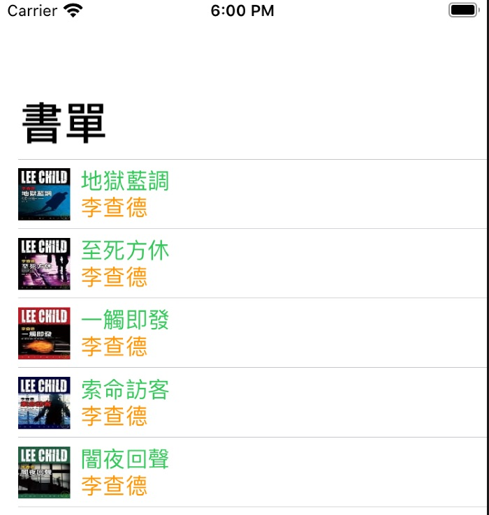<br />
</p>
<p><span class="figure-number">Figure 20: </span>Navigation bar</p>
</div>
</div>

<div id="outline-container-org6a25183" class="outline-4">
<h4 id="org6a25183"><span class="section-number-4">10.1.1</span> Hide Navigation Bar</h4>
<div class="outline-text-4" id="text-10-1-1">
<p>
使用 Hide 與不設定 BarTitle 的差異在於：後者仍會佔掉 Bar 的空間<br />
</p>
<div class="org-src-container">
<pre class="src src-swift"><span class="linenr"> 1: </span><span style="color: #51afef;">import</span> SwiftUI
<span class="linenr"> 2: </span>  ...
<span class="linenr"> 3: </span>
<span class="linenr"> 4: </span><span style="color: #51afef;">struct</span> <span style="color: #c678dd;">ContentView</span>: View {
<span class="linenr"> 5: </span>    ....
<span class="linenr"> 6: </span>    <span style="color: #51afef;">var</span> body: <span style="color: #51afef;">some</span> View {
<span class="linenr"> 7: </span>        NavigationView {
<span class="linenr"> 8: </span>            <span style="color: #c678dd;">List</span>(books) { book <span style="color: #51afef;">in</span>
<span class="linenr"> 9: </span>                ...
<span class="linenr">10: </span>                }
<span class="linenr">11: </span>            .<span style="color: #c678dd;">navigationBarTitle</span>(<span style="color: #c678dd;">Text</span>(<span style="color: #98be65;">"&#26360;&#21934;"</span>))
<span class="linenr">12: </span>            .<span style="color: #c678dd;">navigationBarTitleDisplayMode</span>(.<span style="color: #dcaeea;">large</span>)
<span class="linenr">13: </span>            .<span style="color: #c678dd;">navigationBarHidden</span>(<span style="color: #a9a1e1;">true</span>)
<span class="linenr">14: </span>            }
<span class="linenr">15: </span>        }
<span class="linenr">16: </span>    }
<span class="linenr">17: </span>}
<span class="linenr">18: </span>...
</pre>
</div>
</div>

<div id="outline-container-org36f096a" class="outline-5">
<h5 id="org36f096a"><span class="section-number-5">10.1.1.1</span> NavigationLink</h5>
<div class="outline-text-5" id="text-10-1-1-1">
</div>
<ol class="org-ol">
<li><a id="org56fc860"></a>Create<br /></li>
<li><a id="org0216114"></a>語法:<br />
<div class="outline-text-6" id="text-10-1-1-1-2">
<div class="org-src-container">
<pre class="src src-swift"><span class="linenr">1: </span><span style="color: #c678dd;">NavigationLink</span>(&lt;title: <span style="color: #c678dd;">StringProtocol</span>, destination:)
</pre>
</div>
</div>
</li>
<li><a id="org56127d8"></a>方式<br />
<div class="outline-text-6" id="text-10-1-1-1-3">
<ol class="org-ol">
<li><p>
Attach link in NavigationLink()<br />
</p>
<div class="org-src-container">
<pre class="src src-swift"><span class="linenr"> 1: </span><span style="color: #51afef;">struct</span> <span style="color: #c678dd;">ContentView</span>: View {
<span class="linenr"> 2: </span>    <span style="color: #51afef;">var</span> body: <span style="color: #51afef;">some</span> View {
<span class="linenr"> 3: </span>        NavigationView {
<span class="linenr"> 4: </span>            VStack {
<span class="linenr"> 5: </span>                <span style="color: #c678dd;">NavigationLink</span>(<span style="color: #98be65;">"JumpToSecond"</span>, destination: <span style="color: #c678dd;">SecondView</span>())
<span class="linenr"> 6: </span>                <span style="color: #c678dd;">Text</span>(<span style="color: #98be65;">"Hello, world!"</span>)
<span class="linenr"> 7: </span>                    .<span style="color: #c678dd;">padding</span>()
<span class="linenr"> 8: </span>            }
<span class="linenr"> 9: </span>            .<span style="color: #c678dd;">navigationTitle</span>(<span style="color: #98be65;">"Book List"</span>)
<span class="linenr">10: </span>            .<span style="color: #c678dd;">navigationBarTitleDisplayMode</span>(.<span style="color: #dcaeea;">large</span>)
<span class="linenr">11: </span>        }
<span class="linenr">12: </span>    }
<span class="linenr">13: </span>}
</pre>
</div></li>
<li>Attach link to other object(Text in this example)<br /></li>
</ol>
<div class="org-src-container">
<pre class="src src-swift"><span class="linenr"> 1: </span><span style="color: #51afef;">struct</span> <span style="color: #c678dd;">ContentView</span>: View {
<span class="linenr"> 2: </span>    <span style="color: #51afef;">var</span> body: <span style="color: #51afef;">some</span> View {
<span class="linenr"> 3: </span>        NavigationView {
<span class="linenr"> 4: </span>            VStack {
<span class="linenr"> 5: </span>                <span style="color: #c678dd;">NavigationLink</span>(destination: <span style="color: #c678dd;">SecondView</span>()) {
<span class="linenr"> 6: </span>                    <span style="color: #c678dd;">Text</span>(<span style="color: #98be65;">"TextLink"</span>)
<span class="linenr"> 7: </span>                        .<span style="color: #c678dd;">padding</span>()
<span class="linenr"> 8: </span>                }
<span class="linenr"> 9: </span>            }
<span class="linenr">10: </span>            .<span style="color: #c678dd;">navigationTitle</span>(<span style="color: #98be65;">"Book List"</span>)
<span class="linenr">11: </span>            .<span style="color: #c678dd;">navigationBarTitleDisplayMode</span>(.<span style="color: #dcaeea;">large</span>)
<span class="linenr">12: </span>        }
<span class="linenr">13: </span>    }
<span class="linenr">14: </span>}
</pre>
</div>
<p>
若是將 link attach 至 image，則要加上 renderingMode，否則會看不到圖，例：<br />
</p>
<div class="org-src-container">
<pre class="src src-swift"><span class="linenr"> 1: </span><span style="color: #51afef;">struct</span> <span style="color: #c678dd;">ContentView</span>: View {
<span class="linenr"> 2: </span>    <span style="color: #51afef;">var</span> body: <span style="color: #51afef;">some</span> View {
<span class="linenr"> 3: </span>        NavigationView {
<span class="linenr"> 4: </span>            VStack {
<span class="linenr"> 5: </span>                <span style="color: #c678dd;">NavigationLink</span>(destination: <span style="color: #c678dd;">SecondView</span>()) {
<span class="linenr"> 6: </span>                    <span style="color: #c678dd;">Image</span>(systemName: <span style="color: #98be65;">"myImage"</span>)
<span class="linenr"> 7: </span>                        .<span style="color: #c678dd;">renderingMode</span>(.<span style="color: #dcaeea;">original</span>)
<span class="linenr"> 8: </span>                }
<span class="linenr"> 9: </span>            }
<span class="linenr">10: </span>            .<span style="color: #c678dd;">navigationTitle</span>(<span style="color: #98be65;">"Book List"</span>)
<span class="linenr">11: </span>        }
<span class="linenr">12: </span>    }
<span class="linenr">13: </span>}
</pre>
</div>
</div>
</li>
</ol>
</div>

<div id="outline-container-orgf6da578" class="outline-5">
<h5 id="orgf6da578"><span class="section-number-5">10.1.1.2</span> Reading</h5>
<div class="outline-text-5" id="text-10-1-1-2">
<ul class="org-ul">
<li><a href="https://www.youtube.com/watch?v=nA6Jo6YnL9g">The Complete Guide to NavigationView in SwiftUI</a><br /></li>
</ul>
</div>
</div>
</div>
</div>
<div id="outline-container-org2db5814" class="outline-3">
<h3 id="org2db5814"><span class="section-number-3">10.2</span> Create New Views</h3>
<div class="outline-text-3" id="text-10-2">
</div>
<div id="outline-container-org9fe0b38" class="outline-4">
<h4 id="org9fe0b38"><span class="section-number-4">10.2.1</span> in same file</h4>
<div class="outline-text-4" id="text-10-2-1">
<div class="org-src-container">
<pre class="src src-swift"><span class="linenr"> 1: </span><span style="color: #51afef;">import</span> SwiftUI
<span class="linenr"> 2: </span>
<span class="linenr"> 3: </span><span style="color: #51afef;">struct</span> <span style="color: #c678dd;">BookDetailView</span>: View {
<span class="linenr"> 4: </span>    <span style="color: #51afef;">var</span> body: <span style="color: #51afef;">some</span> View {
<span class="linenr"> 5: </span>        <span style="color: #c678dd;">Text</span>(<span style="color: #98be65;">"This is the Book Detail View"</span>)
<span class="linenr"> 6: </span>    }
<span class="linenr"> 7: </span>}
<span class="linenr"> 8: </span>
<span class="linenr"> 9: </span><span style="color: #51afef;">struct</span> <span style="color: #c678dd;">ContentView</span>: View {
<span class="linenr">10: </span>    <span style="color: #51afef;">var</span> body: <span style="color: #51afef;">some</span> View {
<span class="linenr">11: </span>        NavigationView {
<span class="linenr">12: </span>            VStack {
<span class="linenr">13: </span>                <span style="color: #c678dd;">NavigationLink</span>(destination: <span style="color: #c678dd;">BookDetailView</span>()) {
<span class="linenr">14: </span>                    <span style="color: #c678dd;">Text</span>(<span style="color: #98be65;">"GoToDetail"</span>)
<span class="linenr">15: </span>                }
<span class="linenr">16: </span>            }
<span class="linenr">17: </span>              .<span style="color: #c678dd;">navigationTitle</span>(<span style="color: #98be65;">"Book List"</span>)
<span class="linenr">18: </span>
<span class="linenr">19: </span>        }
<span class="linenr">20: </span>    }
<span class="linenr">21: </span>}
</pre>
</div>
</div>
<div id="outline-container-org0940964" class="outline-5">
<h5 id="org0940964"><span class="section-number-5">10.2.1.1</span> class exercise</h5>
<div class="outline-text-5" id="text-10-2-1-1">
<p>
為上述 NavigationView 加入另外兩個 subView: OrderView, AboutView<br />
</p>
</div>
</div>
</div>
<div id="outline-container-org131c969" class="outline-4">
<h4 id="org131c969"><span class="section-number-4">10.2.2</span> in new file</h4>
<div class="outline-text-4" id="text-10-2-2">
<p>
將上述專案中的每個 subView 改為獨立 View<br />
</p>
</div>
</div>
</div>
<div id="outline-container-orgfd3e053" class="outline-3">
<h3 id="orgfd3e053"><span class="section-number-3">10.3</span> Passing parameter(單純參數傳遞)</h3>
<div class="outline-text-3" id="text-10-3">
<p>
Single way, Just pass variable from A to B.<br />
</p>
<div class="org-src-container">
<pre class="src src-swift"><span class="linenr"> 1: </span><span style="color: #51afef;">struct</span> <span style="color: #c678dd;">BookDetailView</span>: View {
<span class="linenr"> 2: </span>    <span style="color: #51afef;">var</span> operation: <span style="color: #c678dd;">String</span>
<span class="linenr"> 3: </span>    <span style="color: #51afef;">var</span> body: <span style="color: #51afef;">some</span> View {
<span class="linenr"> 4: </span>        <span style="color: #c678dd;">Text</span>(<span style="color: #98be65;">"&#24050;&#28858;&#20320;\(</span>operation<span style="color: #98be65;">)&#36889;&#26412;&#26360;"</span>)
<span class="linenr"> 5: </span>    }
<span class="linenr"> 6: </span>}
<span class="linenr"> 7: </span>
<span class="linenr"> 8: </span><span style="color: #51afef;">struct</span> <span style="color: #c678dd;">ContentView</span>: View {
<span class="linenr"> 9: </span>    <span style="color: #51afef;">var</span> body: <span style="color: #51afef;">some</span> View {
<span class="linenr">10: </span>        NavigationView {
<span class="linenr">11: </span>            VStack {
<span class="linenr">12: </span>                <span style="color: #c678dd;">NavigationLink</span>(destination: <span style="color: #c678dd;">BookDetailView</span>(operation: <span style="color: #98be65;">"&#20511;&#38321;"</span>)) { <span style="color: #c678dd;">Text</span>(<span style="color: #98be65;">"Loan"</span>)
<span class="linenr">13: </span>                }
<span class="linenr">14: </span>                <span style="color: #c678dd;">NavigationLink</span>(destination: <span style="color: #c678dd;">BookDetailView</span>(operation: <span style="color: #98be65;">"&#32396;&#20511;"</span>)) { <span style="color: #c678dd;">Text</span>(<span style="color: #98be65;">"Renew"</span>)
<span class="linenr">15: </span>                }
<span class="linenr">16: </span>                <span style="color: #c678dd;">NavigationLink</span>(destination: <span style="color: #c678dd;">BookDetailView</span>(operation: <span style="color: #98be65;">"&#27512;&#36996;"</span>)) { <span style="color: #c678dd;">Text</span>(<span style="color: #98be65;">"Return"</span>)
<span class="linenr">17: </span>                }
<span class="linenr">18: </span>            }
<span class="linenr">19: </span>              .<span style="color: #c678dd;">navigationTitle</span>(<span style="color: #98be65;">"Book List"</span>)
<span class="linenr">20: </span>
<span class="linenr">21: </span>        }
<span class="linenr">22: </span>    }
<span class="linenr">23: </span>}
</pre>
</div>
</div>
</div>
<div id="outline-container-org16502bc" class="outline-3">
<h3 id="org16502bc"><span class="section-number-3">10.4</span> Version-1: Navigation v.s. List v.s. NavigationLink</h3>
<div class="outline-text-3" id="text-10-4">
<div class="org-src-container">
<pre class="src src-swift"><span class="linenr"> 1: </span><span style="color: #5B6268;">//</span>
<span class="linenr"> 2: </span><span style="color: #5B6268;">//  </span><span style="color: #5B6268;">ContentView.swift</span>
<span class="linenr"> 3: </span><span style="color: #5B6268;">//  </span><span style="color: #5B6268;">navigation</span>
<span class="linenr"> 4: </span><span style="color: #5B6268;">//</span>
<span class="linenr"> 5: </span><span style="color: #5B6268;">//  </span><span style="color: #5B6268;">Created by yen yung chin on 2020/9/27.</span>
<span class="linenr"> 6: </span><span style="color: #5B6268;">//</span>
<span class="linenr"> 7: </span>
<span class="linenr"> 8: </span><span style="color: #51afef;">import</span> SwiftUI
<span class="linenr"> 9: </span>
<span class="linenr">10: </span><span style="color: #51afef;">struct</span> <span style="color: #c678dd;">Book</span>: Identifiable {
<span class="linenr">11: </span>    <span style="color: #51afef;">var</span> id = <span style="color: #c678dd;">UUID</span>()
<span class="linenr">12: </span>    <span style="color: #51afef;">var</span> title: <span style="color: #c678dd;">String</span>
<span class="linenr">13: </span>    <span style="color: #51afef;">var</span> author: <span style="color: #c678dd;">String</span>
<span class="linenr">14: </span>}
<span class="linenr">15: </span>
<span class="linenr">16: </span><span style="color: #51afef;">struct</span> <span style="color: #c678dd;">ContentView</span>: View {
<span class="linenr">17: </span>    <span style="color: #51afef;">var</span> books = [
<span class="linenr">18: </span>        <span style="color: #c678dd;">Book</span>(title:<span style="color: #98be65;">"X&#30340;&#24754;&#21127;"</span>, author: <span style="color: #98be65;">"&#33406;&#21202;&#37324;&#65294;&#26118;&#24681;"</span>),
<span class="linenr">19: </span>        <span style="color: #c678dd;">Book</span>(title:<span style="color: #98be65;">"&#22320;&#29508;&#34253;&#35519;"</span>, author: <span style="color: #98be65;">"&#26446;&#26597;&#24503;"</span>),
<span class="linenr">20: </span>        <span style="color: #c678dd;">Book</span>(title:<span style="color: #98be65;">"&#26481;&#26041;&#21015;&#36554;&#35584;&#27578;&#26696;"</span>, author: <span style="color: #98be65;">"&#38463;&#22025;&#33678;&#8231;&#20811;&#33673;&#32114;&#33922;"</span>),
<span class="linenr">21: </span>        <span style="color: #c678dd;">Book</span>(title:<span style="color: #98be65;">"&#20843;&#30334;&#33836;&#31278;&#27515;&#27861;"</span>, author: <span style="color: #98be65;">"&#21214;&#20523;&#26031;.&#21340;&#27931;&#20811;"</span>),
<span class="linenr">22: </span>        <span style="color: #c678dd;">Book</span>(title:<span style="color: #98be65;">"&#34880;&#23383;&#30740;&#31350;"</span>, author: <span style="color: #98be65;">"&#26607;&#21335;&#36947;&#29246;"</span>)
<span class="linenr">23: </span>    ]
<span class="linenr">24: </span>
<span class="linenr">25: </span>    <span style="color: #51afef;">var</span> body: <span style="color: #51afef;">some</span> View {
<span class="linenr">26: </span>        NavigationView {
<span class="linenr">27: </span>            <span style="color: #c678dd;">List</span>(books) { book <span style="color: #51afef;">in</span>
<span class="linenr">28: </span>                <span style="color: #c678dd;">NavigationLink</span>(destination: <span style="color: #c678dd;">DetailView</span>(book: book) ){
<span class="linenr">29: </span>                        <span style="color: #c678dd;">bookRow</span>(book: book)
<span class="linenr">30: </span>                    }
<span class="linenr">31: </span>                }
<span class="linenr">32: </span>            .<span style="color: #c678dd;">navigationTitle</span>(<span style="color: #98be65;">"&#26360;&#21934;"</span>)
<span class="linenr">33: </span>        }
<span class="linenr">34: </span>    }
<span class="linenr">35: </span>}
<span class="linenr">36: </span>
<span class="linenr">37: </span><span style="color: #51afef;">struct</span> <span style="color: #c678dd;">bookRow</span>: View {
<span class="linenr">38: </span>    <span style="color: #51afef;">var</span> book: Book
<span class="linenr">39: </span>    <span style="color: #51afef;">var</span> body: <span style="color: #51afef;">some</span> View {
<span class="linenr">40: </span>        VStack {
<span class="linenr">41: </span>            <span style="color: #c678dd;">Text</span>(book.<span style="color: #c678dd;">title</span>)
<span class="linenr">42: </span>            <span style="color: #c678dd;">Text</span>(book.<span style="color: #c678dd;">author</span>)
<span class="linenr">43: </span>        }
<span class="linenr">44: </span>    }
<span class="linenr">45: </span>}
<span class="linenr">46: </span>
<span class="linenr">47: </span><span style="color: #51afef;">struct</span> <span style="color: #c678dd;">DetailView</span>: View {
<span class="linenr">48: </span>    <span style="color: #51afef;">var</span> book: Book
<span class="linenr">49: </span>    <span style="color: #51afef;">var</span> body: <span style="color: #51afef;">some</span> View {
<span class="linenr">50: </span>        VStack {
<span class="linenr">51: </span>            <span style="color: #c678dd;">Text</span>(book.<span style="color: #c678dd;">title</span>)
<span class="linenr">52: </span>        }
<span class="linenr">53: </span>    }
<span class="linenr">54: </span>}
<span class="linenr">55: </span>
<span class="linenr">56: </span><span style="color: #51afef;">struct</span> <span style="color: #c678dd;">ContentView_Previews</span>: PreviewProvider {
<span class="linenr">57: </span>    <span style="color: #51afef;">static</span> <span style="color: #51afef;">var</span> previews: <span style="color: #51afef;">some</span> View {
<span class="linenr">58: </span>        <span style="color: #c678dd;">ContentView</span>()
<span class="linenr">59: </span>    }
<span class="linenr">60: </span>}
<span class="linenr">61: </span>
</pre>
</div>
</div>
</div>
<div id="outline-container-orgb6caf54" class="outline-3">
<h3 id="orgb6caf54"><span class="section-number-3">10.5</span> Version-2:</h3>
<div class="outline-text-3" id="text-10-5">
<p>
將記錄架構(Book.swift)、List(ContentView.swift)以及 Detail(DetailView.swift)各自以獨立檔案設計。<br />
</p>
</div>
<div id="outline-container-orgf318c6e" class="outline-4">
<h4 id="orgf318c6e"><span class="section-number-4">10.5.1</span> Book.swift</h4>
<div class="outline-text-4" id="text-10-5-1">
<div class="org-src-container">
<pre class="src src-swift"><span class="linenr"> 1: </span><span style="color: #5B6268;">// </span><span style="color: #5B6268;">&#19981;&#28041;&#21450;&#20351;&#29992;&#32773;&#30028;&#38754;</span>
<span class="linenr"> 2: </span>
<span class="linenr"> 3: </span><span style="color: #51afef;">import</span> Foundation
<span class="linenr"> 4: </span>
<span class="linenr"> 5: </span><span style="color: #5B6268;">// </span><span style="color: #5B6268;">&#24314;&#31435;&#19968;&#20491;&#26360;&#31821;&#30340;&#22522;&#26412;&#32080;&#27083;</span>
<span class="linenr"> 6: </span><span style="color: #5B6268;">// </span><span style="color: #5B6268;">&#21152;&#19978;Identifiable&#20197;&#21450;UUID()&#26159;&#28858;&#20102;&#21487;&#20197;&#23559;&#26360;&#31821;&#36879;&#36942;List&#20358;&#21576;&#29694;</span>
<span class="linenr"> 7: </span>
<span class="linenr"> 8: </span><span style="color: #51afef;">struct</span> <span style="color: #c678dd;">Book</span>: Identifiable {
<span class="linenr"> 9: </span>    <span style="color: #51afef;">var</span> id = <span style="color: #c678dd;">UUID</span>() <span style="color: #5B6268;">//</span><span style="color: #5B6268;">&#29986;&#29983;&#19968;&#20491;&#21807;&#19968;(unique)&#30340;&#20098;&#25976;</span>
<span class="linenr">10: </span>    <span style="color: #51afef;">var</span> title: <span style="color: #c678dd;">String</span>
<span class="linenr">11: </span>    <span style="color: #51afef;">var</span> author: <span style="color: #c678dd;">String</span>
<span class="linenr">12: </span>    <span style="color: #51afef;">var</span> image: <span style="color: #c678dd;">String</span>
<span class="linenr">13: </span>}
</pre>
</div>
</div>
</div>
<div id="outline-container-orgaf8b64b" class="outline-4">
<h4 id="orgaf8b64b"><span class="section-number-4">10.5.2</span> ContentView.swift</h4>
<div class="outline-text-4" id="text-10-5-2">
<div class="org-src-container">
<pre class="src src-swift"><span class="linenr"> 1: </span><span style="color: #51afef;">import</span> SwiftUI
<span class="linenr"> 2: </span>
<span class="linenr"> 3: </span><span style="color: #51afef;">struct</span> <span style="color: #c678dd;">ContentView</span>: View {
<span class="linenr"> 4: </span>    <span style="color: #5B6268;">// </span><span style="color: #5B6268;">&#22312;&#36889;&#35041;&#33256;&#29983;&#29986;&#29983;&#19968;&#20491;Book&#38499;&#21015;&#65292;&#28982;&#24460;&#22312;List&#31168;&#20986;&#20358;</span>
<span class="linenr"> 5: </span>    <span style="color: #51afef;">var</span> books = [
<span class="linenr"> 6: </span>        <span style="color: #c678dd;">Book</span>(id: <span style="color: #c678dd;">UUID</span>(), title: <span style="color: #98be65;">"&#22320;&#29508;&#34253;&#35519;"</span>, author: <span style="color: #98be65;">"&#26446;&#26597;&#24503;"</span>, image: <span style="color: #98be65;">"b1"</span>),
<span class="linenr"> 7: </span>        <span style="color: #c678dd;">Book</span>(id: <span style="color: #c678dd;">UUID</span>(), title: <span style="color: #98be65;">"&#33267;&#27515;&#26041;&#20241;"</span>, author: <span style="color: #98be65;">"&#26446;&#26597;&#24503;"</span>, image: <span style="color: #98be65;">"b2"</span>),
<span class="linenr"> 8: </span>        <span style="color: #c678dd;">Book</span>(id: <span style="color: #c678dd;">UUID</span>(), title: <span style="color: #98be65;">"&#19968;&#35320;&#21363;&#30332;"</span>, author: <span style="color: #98be65;">"&#26446;&#26597;&#24503;"</span>, image: <span style="color: #98be65;">"b3"</span>),
<span class="linenr"> 9: </span>        <span style="color: #c678dd;">Book</span>(id: <span style="color: #c678dd;">UUID</span>(), title: <span style="color: #98be65;">"&#32034;&#21629;&#35370;&#23458;"</span>, author: <span style="color: #98be65;">"&#26446;&#26597;&#24503;"</span>, image: <span style="color: #98be65;">"b4"</span>)
<span class="linenr">10: </span>    ]
<span class="linenr">11: </span>
<span class="linenr">12: </span>    <span style="color: #51afef;">var</span> body: <span style="color: #51afef;">some</span> View {
<span class="linenr">13: </span>        NavigationView {
<span class="linenr">14: </span>            <span style="color: #c678dd;">List</span>(books) { book <span style="color: #51afef;">in</span>
<span class="linenr">15: </span>                <span style="color: #c678dd;">NavigationLink</span>(destination: <span style="color: #c678dd;">DetailView</span>(thisbook: book)) {
<span class="linenr">16: </span>                    <span style="color: #c678dd;">VStack</span>(alignment: .<span style="color: #dcaeea;">leading</span>) {
<span class="linenr">17: </span>                        <span style="color: #c678dd;">Text</span>(book.<span style="color: #c678dd;">title</span>)
<span class="linenr">18: </span>                            .<span style="color: #c678dd;">font</span>(.<span style="color: #c678dd;">title</span>)
<span class="linenr">19: </span>                        <span style="color: #c678dd;">Text</span>(book.<span style="color: #c678dd;">author</span>)
<span class="linenr">20: </span>                            .<span style="color: #c678dd;">font</span>(.<span style="color: #dcaeea;">subheadline</span>)
<span class="linenr">21: </span>                    }
<span class="linenr">22: </span>                .<span style="color: #c678dd;">navigationBarTitle</span>(<span style="color: #98be65;">"&#25105;&#30340;&#26360;&#21934;"</span>)
<span class="linenr">23: </span>                }
<span class="linenr">24: </span>            }
<span class="linenr">25: </span>        }
<span class="linenr">26: </span>    }
<span class="linenr">27: </span>}
<span class="linenr">28: </span>
<span class="linenr">29: </span><span style="color: #51afef;">struct</span> <span style="color: #c678dd;">ContentView_Previews</span>: PreviewProvider {
<span class="linenr">30: </span>    <span style="color: #51afef;">static</span> <span style="color: #51afef;">var</span> previews: <span style="color: #51afef;">some</span> View {
<span class="linenr">31: </span>        <span style="color: #c678dd;">ContentView</span>()
<span class="linenr">32: </span>    }
<span class="linenr">33: </span>}
</pre>
</div>

<div id="org69dc0ce" class="figure">
<p>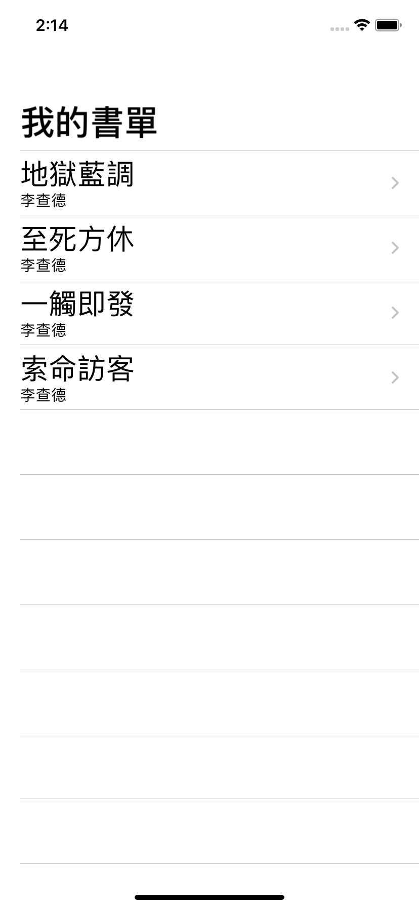<br />
</p>
<p><span class="figure-number">Figure 21: </span>主選單</p>
</div>
</div>
</div>
<div id="outline-container-orgdc40a68" class="outline-4">
<h4 id="orgdc40a68"><span class="section-number-4">10.5.3</span> DetailView.swift</h4>
<div class="outline-text-4" id="text-10-5-3">
<div class="org-src-container">
<pre class="src src-swift"><span class="linenr"> 1: </span><span style="color: #51afef;">import</span> SwiftUI
<span class="linenr"> 2: </span>
<span class="linenr"> 3: </span><span style="color: #51afef;">struct</span> <span style="color: #c678dd;">DetailView</span>: View {
<span class="linenr"> 4: </span>    <span style="color: #5B6268;">//</span><span style="color: #5B6268;">&#25105;&#24076;&#26395;&#31561;&#19968;&#19979;&#26377;&#20219;&#20309;&#20154;&#21628;&#21483;&#25105;&#65292;&#19968;&#23450;&#35201;&#20659;&#26360;&#26412;&#30340;&#36039;&#26009;&#32102;&#25105;</span>
<span class="linenr"> 5: </span>    <span style="color: #51afef;">var</span> thisbook: Book
<span class="linenr"> 6: </span>    <span style="color: #51afef;">var</span> body: <span style="color: #51afef;">some</span> View {
<span class="linenr"> 7: </span>        VStack {
<span class="linenr"> 8: </span>            <span style="color: #c678dd;">Image</span>(thisbook.<span style="color: #dcaeea;">image</span>)
<span class="linenr"> 9: </span>            <span style="color: #c678dd;">Text</span>(thisbook.<span style="color: #c678dd;">title</span>)
<span class="linenr">10: </span>            <span style="color: #c678dd;">Text</span>(thisbook.<span style="color: #c678dd;">author</span>)
<span class="linenr">11: </span>        }
<span class="linenr">12: </span>
<span class="linenr">13: </span>    }
<span class="linenr">14: </span>}
<span class="linenr">15: </span>
<span class="linenr">16: </span><span style="color: #51afef;">struct</span> <span style="color: #c678dd;">DetailView_Previews</span>: PreviewProvider {
<span class="linenr">17: </span>    <span style="color: #51afef;">static</span> <span style="color: #51afef;">var</span> previews: <span style="color: #51afef;">some</span> View {
<span class="linenr">18: </span>        <span style="color: #5B6268;">// </span><span style="color: #5B6268;">&#33256;&#26178;&#32102;&#20491;&#36039;&#26009;&#65292;&#35731;preview&#21487;&#20197;&#31168;&#20986;&#20358;&#23601;&#22909;</span>
<span class="linenr">19: </span>
<span class="linenr">20: </span>        <span style="color: #c678dd;">DetailView</span>(thisbook: <span style="color: #c678dd;">Book</span>(id: <span style="color: #c678dd;">UUID</span>(), title: <span style="color: #98be65;">"&#32034;&#21629;&#35370;&#23458;"</span>, author: <span style="color: #98be65;">"&#26446;&#26597;&#24503;"</span>, image: <span style="color: #98be65;">"b4"</span>))
<span class="linenr">21: </span>    }
<span class="linenr">22: </span>}
</pre>
</div>

<div id="org530ce7f" class="figure">
<p>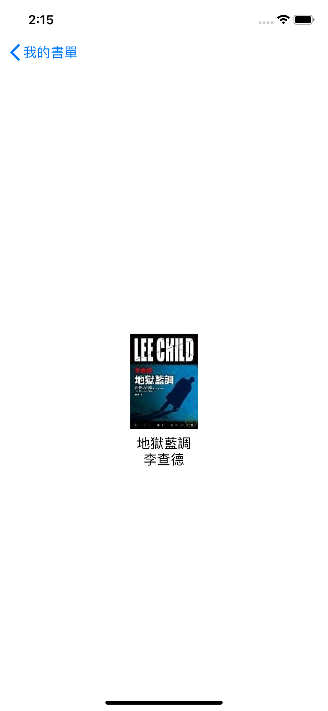<br />
</p>
<p><span class="figure-number">Figure 22: </span>Detail</p>
</div>
</div>
</div>
</div>
</div>
<div id="outline-container-EnvironmentObject" class="outline-2">
<h2 id="EnvironmentObject"><span class="section-number-2">11</span> Passing data between Views #2: @EnvironmentObject</h2>
<div class="outline-text-2" id="text-EnvironmentObject">
<p>
Create once, access everywhere, 適用情境：app 中某些 property 需要於很多 View 中存取，例如，app 的 setting.<br />
</p>
</div>

<div id="outline-container-org1df0e7c" class="outline-3">
<h3 id="org1df0e7c"><span class="section-number-3">11.1</span> @ObservedObject</h3>
<div class="outline-text-3" id="text-11-1">
<ul class="org-ul">
<li>Can be shared across views<br /></li>
<li>More complex properties (e.g custom type)<br /></li>
<li>External reference type that has to be managed (Create an instance of the class, create its own properties, &#x2026;)<br /></li>
<li>Class should confrom to <b>ObservableObject</b><br /></li>
<li><b>@Published</b> property wrapper used to mark properties that should force a view to refresh<br /></li>
<li>The wrappedValue is: anything that implements the OvservableObject protocol (ViewModels basicly).<br /></li>
<li>What is does: invalidates the View when wrappedValue does objectWillChange.send().<br /></li>
<li>Projected value (i.e. %): a Binding (to the vars of the wrappedValue (a ViewModel)). You can bind a variable in your View to the variable in your ViewModel with @ObservedObject.<br /></li>
<li>@ObservedObject 的用處和 @State 非常相似，從名字看來它是來修飾一個對象的，這個對象可以給多個獨立的 View 使用。如果你用 @ObservedObject 來修飾一個對象，那麼那個對象必須要實現 ObservableObject 協議，然後用 @Published 修飾對象裡屬性，表示這個屬性是需要被 SwiftUI 監聽的。<sup><a id="fnr.10.100" class="footref" href="#fn.10">10</a></sup><br /></li>
</ul>
</div>
</div>
<div id="outline-container-orgcedf127" class="outline-3">
<h3 id="orgcedf127"><span class="section-number-3">11.2</span> @EnvironmentObject</h3>
<div class="outline-text-3" id="text-11-2">
<ul class="org-ul">
<li>Similar to @ObservedObject<br /></li>
<li>Possibility to make it available to all views through the application itself<br /></li>
<li>If one view changes the model all views updatezz<br /></li>
<li>ThewrappedValue is: ObservvableObject obtained via .environemntObject() sent to the View.<br /></li>
<li>What is does: invalidates the View when wrappedValue does objectWillChange.send().<br /></li>
<li>Projected value (i.e. $): a Binding (to the vars of the wrappedValue (a ViewModel)).<br /></li>
</ul>
</div>
</div>
<div id="outline-container-orgd878f24" class="outline-3">
<h3 id="orgd878f24"><span class="section-number-3">11.3</span> Demo #1: ObservaleObject</h3>
<div class="outline-text-3" id="text-11-3">
</div>
<div id="outline-container-org0623fc3" class="outline-4">
<h4 id="org0623fc3"><span class="section-number-4">11.3.1</span> UserStats.swift</h4>
<div class="outline-text-4" id="text-11-3-1">
<div class="org-src-container">
<pre class="src src-swift"><span class="linenr"> 1: </span><span style="color: #51afef;">import</span> Foundation
<span class="linenr"> 2: </span><span style="color: #51afef;">import</span> SwiftUI
<span class="linenr"> 3: </span><span style="color: #51afef;">import</span> Combine
<span class="linenr"> 4: </span>
<span class="linenr"> 5: </span><span style="color: #51afef;">class</span> <span style="color: #c678dd;">UserStats</span>: <span style="color: #c678dd;">ObservableObject</span> {
<span class="linenr"> 6: </span>    <span style="color: #51afef;">var</span> objectWillChange = <span style="color: #c678dd;">ObservableObjectPublisher</span>()
<span class="linenr"> 7: </span>
<span class="linenr"> 8: </span>    <span style="color: #51afef;">var</span> score = <span style="color: #da8548; font-weight: bold;">0</span> {
<span class="linenr"> 9: </span>        <span style="color: #51afef;">willSet</span> {
<span class="linenr">10: </span>            <span style="color: #51afef;">self</span>.<span style="color: #dcaeea;">objectWillChange</span>.<span style="color: #c678dd;">send</span>()
<span class="linenr">11: </span>        }
<span class="linenr">12: </span>    }
<span class="linenr">13: </span>}
</pre>
</div>
</div>
</div>
<div id="outline-container-orgc4b814a" class="outline-4">
<h4 id="orgc4b814a"><span class="section-number-4">11.3.2</span> ScoreView.swift</h4>
<div class="outline-text-4" id="text-11-3-2">
<div class="org-src-container">
<pre class="src src-swift"><span class="linenr"> 1: </span><span style="color: #51afef;">import</span> SwiftUI
<span class="linenr"> 2: </span>
<span class="linenr"> 3: </span><span style="color: #51afef;">struct</span> <span style="color: #c678dd;">ScoreView</span>: View {
<span class="linenr"> 4: </span>    <span style="color: #51afef;">@ObservedObject</span> <span style="color: #51afef;">var</span> userStats = <span style="color: #c678dd;">UserStats</span>()
<span class="linenr"> 5: </span>
<span class="linenr"> 6: </span>    <span style="color: #51afef;">var</span> body: <span style="color: #51afef;">some</span> View {
<span class="linenr"> 7: </span>        VStack {
<span class="linenr"> 8: </span>            <span style="color: #c678dd;">Text</span>(<span style="color: #98be65;">"\self.userStats.score"</span>)
<span class="linenr"> 9: </span>            <span style="color: #c678dd;">Button</span>(action: {<span style="color: #51afef;">self</span>.<span style="color: #dcaeea;">userStats</span>.<span style="color: #dcaeea;">score</span> += <span style="color: #da8548; font-weight: bold;">1</span>}
<span class="linenr">10: </span>                  , label: {
<span class="linenr">11: </span>                        <span style="color: #c678dd;">Text</span>(<span style="color: #98be65;">"Add Point"</span>)
<span class="linenr">12: </span>                    })
<span class="linenr">13: </span>        }
<span class="linenr">14: </span>    }
<span class="linenr">15: </span>}
</pre>
</div>
</div>
</div>
</div>
<div id="outline-container-orgf34b898" class="outline-3">
<h3 id="orgf34b898"><span class="section-number-3">11.4</span> Demo #2: EnvironmentObject</h3>
<div class="outline-text-3" id="text-11-4">
</div>
<div id="outline-container-org19eb96e" class="outline-4">
<h4 id="org19eb96e"><span class="section-number-4">11.4.1</span> UserSettings.swift (ObservableObject)</h4>
<div class="outline-text-4" id="text-11-4-1">
<div class="org-src-container">
<pre class="src src-swift"><span class="linenr">1: </span><span style="color: #51afef;">import</span> SwiftUI
<span class="linenr">2: </span>
<span class="linenr">3: </span><span style="color: #51afef;">class</span> <span style="color: #c678dd;">UserSettings</span>: <span style="color: #c678dd;">ObservableObject</span> {
<span class="linenr">4: </span>    <span style="color: #51afef;">@Published</span> <span style="color: #51afef;">var</span> name = <span style="color: #98be65;">""</span>
<span class="linenr">5: </span>    <span style="color: #5B6268;">// </span><span style="color: #5B6268;">use this ObservableObject as an environment object</span>
<span class="linenr">6: </span>}
</pre>
</div>
</div>
</div>
<div id="outline-container-orgfad2f6d" class="outline-4">
<h4 id="orgfad2f6d"><span class="section-number-4">11.4.2</span> SceneDeleate.swift</h4>
<div class="outline-text-4" id="text-11-4-2">
<p>
add new var in SceneDelegate<br />
</p>
<div class="org-src-container">
<pre class="src src-swift"><span class="linenr">1: </span><span style="color: #5B6268;">//</span><span style="color: #5B6268;">....</span>
<span class="linenr">2: </span>
<span class="linenr">3: </span><span style="color: #51afef;">var</span> settings: <span style="color: #c678dd;">UserSettings</span>()
<span class="linenr">4: </span><span style="color: #51afef;">func</span> <span style="color: #c678dd;">scene</span>(.......) {
<span class="linenr">5: </span>    <span style="color: #5B6268;">//</span><span style="color: #5B6268;">....</span>
<span class="linenr">6: </span>    <span style="color: #5B6268;">//</span><span style="color: #5B6268;">let tabbedView = TabbedView()</span>
<span class="linenr">7: </span>    <span style="color: #51afef;">let</span> tabbedView = <span style="color: #c678dd;">TabbedView</span>().<span style="color: #c678dd;">environemntObject</span>(settings)
<span class="linenr">8: </span>}
<span class="linenr">9: </span><span style="color: #5B6268;">//</span><span style="color: #5B6268;">....</span>
</pre>
</div>
<p>
and now the settings is universally available throughtout the tabbed views<br />
</p>
</div>
</div>
<div id="outline-container-org1f2e4d3" class="outline-4">
<h4 id="org1f2e4d3"><span class="section-number-4">11.4.3</span> UserSettingsView.swift</h4>
<div class="outline-text-4" id="text-11-4-3">
<div class="org-src-container">
<pre class="src src-swift"><span class="linenr"> 1: </span><span style="color: #51afef;">import</span> SwiftUI
<span class="linenr"> 2: </span>
<span class="linenr"> 3: </span><span style="color: #51afef;">struct</span> <span style="color: #c678dd;">UserSettingsView</span>: View {
<span class="linenr"> 4: </span>    <span style="color: #51afef;">@EnvironmentObject</span> <span style="color: #51afef;">var</span> settings: UserSettings
<span class="linenr"> 5: </span>    <span style="color: #51afef;">var</span> body: <span style="color: #51afef;">some</span> View {
<span class="linenr"> 6: </span>        VStack {
<span class="linenr"> 7: </span>            <span style="color: #c678dd;">Text</span>(<span style="color: #98be65;">"My anme: \(</span>settings.<span style="color: #c678dd;">name</span><span style="color: #98be65;">)"</span>)
<span class="linenr"> 8: </span>            <span style="color: #c678dd;">EditView</span>()
<span class="linenr"> 9: </span>        }
<span class="linenr">10: </span>    }
<span class="linenr">11: </span>}
</pre>
</div>
</div>
</div>
<div id="outline-container-org9359f0d" class="outline-4">
<h4 id="org9359f0d"><span class="section-number-4">11.4.4</span> EditView.swift</h4>
<div class="outline-text-4" id="text-11-4-4">
<div class="org-src-container">
<pre class="src src-swift"><span class="linenr">1: </span><span style="color: #51afef;">import</span> SwiftUI
<span class="linenr">2: </span>
<span class="linenr">3: </span><span style="color: #51afef;">struct</span> <span style="color: #c678dd;">EditView</span>: View {
<span class="linenr">4: </span>    <span style="color: #51afef;">@EnvironmentObject</span> <span style="color: #51afef;">var</span> settings: UserSettings
<span class="linenr">5: </span>    <span style="color: #51afef;">var</span> body: <span style="color: #51afef;">some</span> Veiw {
<span class="linenr">6: </span>        <span style="color: #c678dd;">TextField</span>(<span style="color: #98be65;">"Type in your name:"</span>, text: $settings.<span style="color: #c678dd;">name</span>)
<span class="linenr">7: </span>    }
<span class="linenr">8: </span>}
</pre>
</div>
</div>
</div>
</div>
<div id="outline-container-passingData" class="outline-3">
<h3 id="passingData"><span class="section-number-3">11.5</span> Demo #3</h3>
<div class="outline-text-3" id="text-passingData">
</div>

<div id="outline-container-orge6f99cb" class="outline-4">
<h4 id="orge6f99cb"><span class="section-number-4">11.5.1</span> with @ObservableObject, @EnvironmentObject and @ObservedObject</h4>
<div class="outline-text-4" id="text-11-5-1">
<div class="org-src-container">
<pre class="src src-swift"><span class="linenr"> 1: </span><span style="color: #51afef;">import</span> SwiftUI
<span class="linenr"> 2: </span>
<span class="linenr"> 3: </span><span style="color: #51afef;">class</span> <span style="color: #c678dd;">User</span>: <span style="color: #c678dd;">ObservableObject</span> {
<span class="linenr"> 4: </span>    <span style="color: #51afef;">@Published</span> <span style="color: #51afef;">var</span> score = <span style="color: #da8548; font-weight: bold;">0</span>
<span class="linenr"> 5: </span>}
<span class="linenr"> 6: </span>
<span class="linenr"> 7: </span><span style="color: #51afef;">struct</span> <span style="color: #c678dd;">BuyBookView</span>: View {
<span class="linenr"> 8: </span>    <span style="color: #51afef;">@EnvironmentObject</span> <span style="color: #51afef;">var</span> user: User
<span class="linenr"> 9: </span>
<span class="linenr">10: </span>    <span style="color: #51afef;">var</span> body: <span style="color: #51afef;">some</span> View {
<span class="linenr">11: </span>        <span style="color: #c678dd;">Button</span>(<span style="color: #98be65;">"&#21152;&#36092;! &#25976;&#37327;\(</span><span style="color: #51afef;">self</span>.<span style="color: #c678dd;">user</span>.<span style="color: #dcaeea;">score</span><span style="color: #98be65;">)"</span>) {
<span class="linenr">12: </span>            <span style="color: #51afef;">self</span>.<span style="color: #c678dd;">user</span>.<span style="color: #dcaeea;">score</span> += <span style="color: #da8548; font-weight: bold;">1</span>
<span class="linenr">13: </span>        }
<span class="linenr">14: </span>    }
<span class="linenr">15: </span>}
<span class="linenr">16: </span>
<span class="linenr">17: </span><span style="color: #51afef;">struct</span> <span style="color: #c678dd;">ContentView</span>: View {
<span class="linenr">18: </span>    <span style="color: #51afef;">@ObservedObject</span> <span style="color: #51afef;">var</span> user = <span style="color: #c678dd;">User</span>()
<span class="linenr">19: </span>
<span class="linenr">20: </span>    <span style="color: #51afef;">var</span> body: <span style="color: #51afef;">some</span> View {
<span class="linenr">21: </span>        NavigationView {
<span class="linenr">22: </span>            VStack {
<span class="linenr">23: </span>                <span style="color: #c678dd;">Text</span>(<span style="color: #98be65;">"mount: \(</span>user.<span style="color: #dcaeea;">score</span><span style="color: #98be65;">)"</span>)
<span id="coderef-buybook" class="coderef-off"><span class="linenr">24: </span>                <span style="color: #c678dd;">NavigationLink</span>(destination: <span style="color: #c678dd;">BuyBookView</span>() ){</span>
<span class="linenr">25: </span>                                                             <span style="color: #c678dd;">Text</span>(<span style="color: #98be65;">"Show amount, now"</span>)
<span class="linenr">26: </span>                }
<span class="linenr">27: </span>            }
<span class="linenr">28: </span>              .<span style="color: #c678dd;">navigationTitle</span>(<span style="color: #98be65;">"Book List"</span>)
<span class="linenr">29: </span>        }
<span id="coderef-envobj" class="coderef-off"><span class="linenr">30: </span>          .<span style="color: #c678dd;">environmentObject</span>(user)</span>
<span class="linenr">31: </span>    }
<span class="linenr">32: </span>}
</pre>
</div>
<p>
第<a href="#coderef-envobj" class="coderef" onmouseover="CodeHighlightOn(this, 'coderef-envobj');" onmouseout="CodeHighlightOff(this, 'coderef-envobj');">30</a>行的 modifier attach 於 NavigationView，所以所有以 Navigation 連接的 View 均可共享此變數。若將此 modifier attach 在 BuyBookView()後(第<a href="#coderef-buybook" class="coderef" onmouseover="CodeHighlightOn(this, 'coderef-buybook');" onmouseout="CodeHighlightOff(this, 'coderef-buybook');">24</a>行)，則只有這個 View 可存取此一變數。<br />
</p>
</div>
</div>
</div>
<div id="outline-container-org1aade5d" class="outline-3">
<h3 id="org1aade5d"><span class="section-number-3">11.6</span> Demo #4</h3>
<div class="outline-text-3" id="text-11-6">
</div>
<div id="outline-container-orgb863c42" class="outline-4">
<h4 id="orgb863c42"><span class="section-number-4">11.6.1</span> ContentView</h4>
<div class="outline-text-4" id="text-11-6-1">
<p>
情境說明：在 app 中建立一個 ShoppingCart 類別，這個 class 也可以獨立存在於一個檔案中，並讓這個 class confirm ObservableObject protocol，於 class 中將要在各 View 中 share 的 property 以@Published 標示出來。<br />
</p>

<p>
在每一個要使用到這個 EnvironmentObject 的 View 中以@EnvironmentObject 來建立該 class 的 instance(第<a href="#coderef-environmentObject" class="coderef" onmouseover="CodeHighlightOn(this, 'coderef-environmentObject');" onmouseout="CodeHighlightOff(this, 'coderef-environmentObject');">11</a>行)，同時，在 previews 中也要加入 environmentObject()的 modifier(第<a href="#coderef-emptyConstructor" class="coderef" onmouseover="CodeHighlightOn(this, 'coderef-emptyConstructor');" onmouseout="CodeHighlightOff(this, 'coderef-emptyConstructor');">36</a>行)。<br />
</p>

<div class="org-src-container">
<pre class="src src-swift"><span class="linenr"> 1: </span><span style="color: #51afef;">import</span> SwiftUI
<span class="linenr"> 2: </span>
<span class="linenr"> 3: </span><span style="color: #51afef;">class</span> <span style="color: #c678dd;">ShoppingCart</span>: <span style="color: #c678dd;">ObservableObject</span> {
<span class="linenr"> 4: </span>    <span style="color: #51afef;">@Published</span> <span style="color: #51afef;">var</span> Title = <span style="color: #98be65;">"Testing"</span>
<span class="linenr"> 5: </span>    <span style="color: #51afef;">@Published</span> <span style="color: #51afef;">var</span> items = <span style="color: #da8548; font-weight: bold;">0</span>
<span class="linenr"> 6: </span>}
<span class="linenr"> 7: </span>
<span class="linenr"> 8: </span><span style="color: #51afef;">struct</span> <span style="color: #c678dd;">ContentView</span>: View {
<span class="linenr"> 9: </span>
<span class="linenr">10: </span>    <span style="color: #51afef;">@State</span> <span style="color: #51afef;">private</span> <span style="color: #51afef;">var</span> showCart: <span style="color: #c678dd;">Bool</span> = <span style="color: #a9a1e1;">false</span>
<span id="coderef-EnvironmentObject" class="coderef-off"><span class="linenr">11: </span>    <span style="color: #51afef;">@EnvironmentObject</span> <span style="color: #51afef;">var</span> cart: ShoppingCart</span>
<span class="linenr">12: </span>
<span class="linenr">13: </span>
<span class="linenr">14: </span>    <span style="color: #51afef;">var</span> body: <span style="color: #51afef;">some</span> View {
<span class="linenr">15: </span>        VStack {
<span class="linenr">16: </span>            <span style="color: #c678dd;">Text</span>(cart.<span style="color: #dcaeea;">Title</span>)
<span class="linenr">17: </span>            <span style="color: #c678dd;">Spacer</span>()
<span class="linenr">18: </span>            <span style="color: #c678dd;">Button</span>(<span style="color: #98be65;">"&#19979;&#21934;"</span>) {
<span class="linenr">19: </span>                <span style="color: #51afef;">self</span>.<span style="color: #dcaeea;">showCart</span> = <span style="color: #a9a1e1;">true</span>
<span class="linenr">20: </span>            }.<span style="color: #c678dd;">sheet</span>(isPresented: <span style="color: #51afef;">self</span>.$showCart, content: {
<span class="linenr">21: </span>                                                     <span style="color: #c678dd;">SecondView</span>()
<span class="linenr">22: </span>                                                 })
<span class="linenr">23: </span>
<span class="linenr">24: </span>            <span style="color: #c678dd;">Text</span>(<span style="color: #98be65;">"&#30446;&#21069;&#25976;&#37327;\(</span><span style="color: #51afef;">self</span>.<span style="color: #dcaeea;">cart</span>.<span style="color: #dcaeea;">items</span><span style="color: #98be65;">)"</span>)
<span class="linenr">25: </span>            <span style="color: #c678dd;">Spacer</span>()
<span class="linenr">26: </span>            <span style="color: #c678dd;">TextField</span>(<span style="color: #98be65;">"Change Title"</span>, text: $cart.<span style="color: #dcaeea;">Title</span>)
<span class="linenr">27: </span>              .<span style="color: #c678dd;">textFieldStyle</span>(<span style="color: #c678dd;">RoundedBorderTextFieldStyle</span>())
<span class="linenr">28: </span>              .<span style="color: #c678dd;">padding</span>()
<span class="linenr">29: </span>            <span style="color: #c678dd;">Spacer</span>()
<span class="linenr">30: </span>        }
<span class="linenr">31: </span>    }
<span class="linenr">32: </span>}
<span class="linenr">33: </span>
<span class="linenr">34: </span><span style="color: #51afef;">struct</span> <span style="color: #c678dd;">ContentView_Previews</span>: PreviewProvider {
<span class="linenr">35: </span>    <span style="color: #51afef;">static</span> <span style="color: #51afef;">var</span> previews: <span style="color: #51afef;">some</span> View {
<span id="coderef-emptyConstructor" class="coderef-off"><span class="linenr">36: </span>        <span style="color: #c678dd;">ContentView</span>().<span style="color: #c678dd;">environmentObject</span>(<span style="color: #c678dd;">ShoppingCart</span>())</span>
<span class="linenr">37: </span>    }
<span class="linenr">38: </span>}
</pre>
</div>
</div>
</div>
<div id="outline-container-org7c7409c" class="outline-4">
<h4 id="org7c7409c"><span class="section-number-4">11.6.2</span> SecondView</h4>
<div class="outline-text-4" id="text-11-6-2">
<p>
同樣的，在 SecondView 中要使用到 environment object 也要以@EnvironmentObject 來宣告利用該 class 所建立的 instance(第<a href="#coderef-useEnv" class="coderef" onmouseover="CodeHighlightOn(this, 'coderef-useEnv');" onmouseout="CodeHighlightOff(this, 'coderef-useEnv');">4</a>行)，而 SecondView 的 preview 也要加上同樣的 modifier(傳入參數)。<br />
</p>
<div class="org-src-container">
<pre class="src src-swift"><span class="linenr"> 1: </span><span style="color: #51afef;">import</span> SwiftUI
<span class="linenr"> 2: </span>
<span class="linenr"> 3: </span><span style="color: #51afef;">struct</span> <span style="color: #c678dd;">SecondView</span>: View {
<span id="coderef-useEnv" class="coderef-off"><span class="linenr"> 4: </span>    <span style="color: #51afef;">@EnvironmentObject</span> <span style="color: #51afef;">var</span> cart: ShoppingCart</span>
<span class="linenr"> 5: </span>
<span class="linenr"> 6: </span>    <span style="color: #51afef;">var</span> body: <span style="color: #51afef;">some</span> View {
<span class="linenr"> 7: </span>        <span style="color: #c678dd;">Text</span>(<span style="color: #98be65;">"\(</span>cart.<span style="color: #dcaeea;">Title</span><span style="color: #98be65;">)"</span>)
<span class="linenr"> 8: </span>        <span style="color: #c678dd;">Spacer</span>()
<span class="linenr"> 9: </span>        <span style="color: #c678dd;">Button</span>(<span style="color: #98be65;">"&#21152;&#36092;! &#25976;&#37327;\(</span><span style="color: #51afef;">self</span>.<span style="color: #dcaeea;">cart</span>.<span style="color: #dcaeea;">items</span><span style="color: #98be65;">)"</span>) {
<span class="linenr">10: </span>            <span style="color: #51afef;">self</span>.<span style="color: #dcaeea;">cart</span>.<span style="color: #dcaeea;">items</span> += <span style="color: #da8548; font-weight: bold;">1</span>
<span class="linenr">11: </span>        }
<span class="linenr">12: </span>        <span style="color: #c678dd;">Spacer</span>()
<span class="linenr">13: </span>    }
<span class="linenr">14: </span>}
<span class="linenr">15: </span>
<span class="linenr">16: </span><span style="color: #51afef;">struct</span> <span style="color: #c678dd;">SecondView_Previews</span>: PreviewProvider {
<span class="linenr">17: </span>    <span style="color: #51afef;">static</span> <span style="color: #51afef;">var</span> previews: <span style="color: #51afef;">some</span> View {
<span class="linenr">18: </span>        <span style="color: #c678dd;">SecondView</span>().<span style="color: #c678dd;">environmentObject</span>(<span style="color: #c678dd;">ShoppingCart</span>())
<span class="linenr">19: </span>    }
<span class="linenr">20: </span>}
</pre>
</div>
<p>
這裡的 cart.items 在變更後，ContentView 的數量會即時更新，同樣的，ContentView 中被變更的 Title 也會即時在 SecondView 中看出結果。<br />
</p>
</div>
</div>
</div>
<div id="outline-container-org95b7259" class="outline-3">
<h3 id="org95b7259"><span class="section-number-3">11.7</span> Ways to share Data between Views</h3>
<div class="outline-text-3" id="text-11-7">
<p>
Three ways for sharing data in SwiftUI<sup><a id="fnr.14" class="footref" href="#fn.14">14</a></sup><br />
</p>
<!-- This HTML table template is generated by emacs 27.1 -->
<table border="1">
  <tr>
    <td align="left" valign="top">
      @State&nbsp;&nbsp;&nbsp;&nbsp;&nbsp;&nbsp;&nbsp;&nbsp;&nbsp;&nbsp;&nbsp;&nbsp;&nbsp;&nbsp;&nbsp;&nbsp;&nbsp;&nbsp;&nbsp;&nbsp;&nbsp;&nbsp;&nbsp;&nbsp;
    </td>
    <td align="left" valign="top">
      @ObservedObject&nbsp;&nbsp;&nbsp;&nbsp;&nbsp;&nbsp;&nbsp;&nbsp;&nbsp;&nbsp;&nbsp;&nbsp;&nbsp;&nbsp;&nbsp;
    </td>
    <td align="left" valign="top">
      @EnvironmentObject&nbsp;&nbsp;&nbsp;&nbsp;&nbsp;&nbsp;&nbsp;&nbsp;&nbsp;&nbsp;&nbsp;&nbsp;
    </td>
  </tr>
  <tr>
    <td align="left" valign="top">
      Simple&nbsp;properties&nbsp;like&nbsp;String&nbsp;<br />
      or&nbsp;Int&nbsp;&nbsp;&nbsp;&nbsp;&nbsp;&nbsp;&nbsp;&nbsp;&nbsp;&nbsp;&nbsp;&nbsp;&nbsp;&nbsp;&nbsp;&nbsp;&nbsp;&nbsp;&nbsp;&nbsp;&nbsp;&nbsp;&nbsp;&nbsp;
    </td>
    <td align="left" valign="top">
      Can&nbsp;be&nbsp;shared&nbsp;across&nbsp;views&nbsp;&nbsp;&nbsp;&nbsp;<br />
      &nbsp;&nbsp;&nbsp;&nbsp;&nbsp;&nbsp;&nbsp;&nbsp;&nbsp;&nbsp;&nbsp;&nbsp;&nbsp;&nbsp;&nbsp;&nbsp;&nbsp;&nbsp;&nbsp;&nbsp;&nbsp;&nbsp;&nbsp;&nbsp;&nbsp;&nbsp;&nbsp;&nbsp;&nbsp;&nbsp;
    </td>
    <td align="left" valign="top">
      Similar&nbsp;to&nbsp;@ObservedObject&nbsp;&nbsp;&nbsp;&nbsp;<br />
      &nbsp;&nbsp;&nbsp;&nbsp;&nbsp;&nbsp;&nbsp;&nbsp;&nbsp;&nbsp;&nbsp;&nbsp;&nbsp;&nbsp;&nbsp;&nbsp;&nbsp;&nbsp;&nbsp;&nbsp;&nbsp;&nbsp;&nbsp;&nbsp;&nbsp;&nbsp;&nbsp;&nbsp;&nbsp;&nbsp;
    </td>
  </tr>
  <tr>
    <td align="left" valign="top">
      Belongs&nbsp;to&nbsp;a&nbsp;specific&nbsp;view&nbsp;&nbsp;&nbsp;&nbsp;<br />
      &nbsp;&nbsp;&nbsp;&nbsp;&nbsp;&nbsp;&nbsp;&nbsp;&nbsp;&nbsp;&nbsp;&nbsp;&nbsp;&nbsp;&nbsp;&nbsp;&nbsp;&nbsp;&nbsp;&nbsp;&nbsp;&nbsp;&nbsp;&nbsp;&nbsp;&nbsp;&nbsp;&nbsp;&nbsp;&nbsp;<br />
      &nbsp;&nbsp;&nbsp;&nbsp;&nbsp;&nbsp;&nbsp;&nbsp;&nbsp;&nbsp;&nbsp;&nbsp;&nbsp;&nbsp;&nbsp;&nbsp;&nbsp;&nbsp;&nbsp;&nbsp;&nbsp;&nbsp;&nbsp;&nbsp;&nbsp;&nbsp;&nbsp;&nbsp;&nbsp;&nbsp;
    </td>
    <td align="left" valign="top">
      More&nbsp;complex&nbsp;properties&nbsp;(e.g.&nbsp;<br />
      custom&nbsp;type)&nbsp;&nbsp;&nbsp;&nbsp;&nbsp;&nbsp;&nbsp;&nbsp;&nbsp;&nbsp;&nbsp;&nbsp;&nbsp;&nbsp;&nbsp;&nbsp;&nbsp;&nbsp;<br />
      &nbsp;&nbsp;&nbsp;&nbsp;&nbsp;&nbsp;&nbsp;&nbsp;&nbsp;&nbsp;&nbsp;&nbsp;&nbsp;&nbsp;&nbsp;&nbsp;&nbsp;&nbsp;&nbsp;&nbsp;&nbsp;&nbsp;&nbsp;&nbsp;&nbsp;&nbsp;&nbsp;&nbsp;&nbsp;&nbsp;
    </td>
    <td align="left" valign="top">
      Possiblity&nbsp;to&nbsp;make&nbsp;it&nbsp;&nbsp;&nbsp;&nbsp;&nbsp;&nbsp;&nbsp;&nbsp;&nbsp;<br />
      available&nbsp;to&nbsp;all&nbsp;views&nbsp;through<br />
      the&nbsp;application&nbsp;itself&nbsp;&nbsp;&nbsp;&nbsp;&nbsp;&nbsp;&nbsp;&nbsp;
    </td>
  </tr>
  <tr>
    <td align="left" valign="top">
      Never&nbsp;used&nbsp;outside&nbsp;that&nbsp;view&nbsp;&nbsp;<br />
      &nbsp;&nbsp;&nbsp;&nbsp;&nbsp;&nbsp;&nbsp;&nbsp;&nbsp;&nbsp;&nbsp;&nbsp;&nbsp;&nbsp;&nbsp;&nbsp;&nbsp;&nbsp;&nbsp;&nbsp;&nbsp;&nbsp;&nbsp;&nbsp;&nbsp;&nbsp;&nbsp;&nbsp;&nbsp;&nbsp;<br />
      &nbsp;&nbsp;&nbsp;&nbsp;&nbsp;&nbsp;&nbsp;&nbsp;&nbsp;&nbsp;&nbsp;&nbsp;&nbsp;&nbsp;&nbsp;&nbsp;&nbsp;&nbsp;&nbsp;&nbsp;&nbsp;&nbsp;&nbsp;&nbsp;&nbsp;&nbsp;&nbsp;&nbsp;&nbsp;&nbsp;<br />
      &nbsp;&nbsp;&nbsp;&nbsp;&nbsp;&nbsp;&nbsp;&nbsp;&nbsp;&nbsp;&nbsp;&nbsp;&nbsp;&nbsp;&nbsp;&nbsp;&nbsp;&nbsp;&nbsp;&nbsp;&nbsp;&nbsp;&nbsp;&nbsp;&nbsp;&nbsp;&nbsp;&nbsp;&nbsp;&nbsp;
    </td>
    <td align="left" valign="top">
      External&nbsp;reference&nbsp;type&nbsp;that&nbsp;&nbsp;<br />
      has&nbsp;to&nbsp;be&nbsp;managed&nbsp;(Create&nbsp;an&nbsp;&nbsp;<br />
      instance&nbsp;of&nbsp;the&nbsp;class,&nbsp;create&nbsp;<br />
      its&nbsp;own&nbsp;properties,&nbsp;...)&nbsp;&nbsp;&nbsp;&nbsp;&nbsp;&nbsp;
    </td>
    <td align="left" valign="top">
      If&nbsp;one&nbsp;view&nbsp;changes&nbsp;the&nbsp;model&nbsp;<br />
      all&nbsp;views&nbsp;update&nbsp;&nbsp;&nbsp;&nbsp;&nbsp;&nbsp;&nbsp;&nbsp;&nbsp;&nbsp;&nbsp;&nbsp;&nbsp;&nbsp;<br />
      &nbsp;&nbsp;&nbsp;&nbsp;&nbsp;&nbsp;&nbsp;&nbsp;&nbsp;&nbsp;&nbsp;&nbsp;&nbsp;&nbsp;&nbsp;&nbsp;&nbsp;&nbsp;&nbsp;&nbsp;&nbsp;&nbsp;&nbsp;&nbsp;&nbsp;&nbsp;&nbsp;&nbsp;&nbsp;&nbsp;<br />
      &nbsp;&nbsp;&nbsp;&nbsp;&nbsp;&nbsp;&nbsp;&nbsp;&nbsp;&nbsp;&nbsp;&nbsp;&nbsp;&nbsp;&nbsp;&nbsp;&nbsp;&nbsp;&nbsp;&nbsp;&nbsp;&nbsp;&nbsp;&nbsp;&nbsp;&nbsp;&nbsp;&nbsp;&nbsp;&nbsp;
    </td>
  </tr>
  <tr>
    <td align="left" valign="top">
      &nbsp;&nbsp;&nbsp;&nbsp;&nbsp;&nbsp;&nbsp;&nbsp;&nbsp;&nbsp;&nbsp;&nbsp;&nbsp;&nbsp;&nbsp;&nbsp;&nbsp;&nbsp;&nbsp;&nbsp;&nbsp;&nbsp;&nbsp;&nbsp;&nbsp;&nbsp;&nbsp;&nbsp;&nbsp;&nbsp;<br />
      &nbsp;&nbsp;&nbsp;&nbsp;&nbsp;&nbsp;&nbsp;&nbsp;&nbsp;&nbsp;&nbsp;&nbsp;&nbsp;&nbsp;&nbsp;&nbsp;&nbsp;&nbsp;&nbsp;&nbsp;&nbsp;&nbsp;&nbsp;&nbsp;&nbsp;&nbsp;&nbsp;&nbsp;&nbsp;&nbsp;
    </td>
    <td align="left" valign="top">
      Class&nbsp;should&nbsp;conform&nbsp;to&nbsp;&nbsp;&nbsp;&nbsp;&nbsp;&nbsp;&nbsp;<br />
      ObservableObject&nbsp;&nbsp;&nbsp;&nbsp;&nbsp;&nbsp;&nbsp;&nbsp;&nbsp;&nbsp;&nbsp;&nbsp;&nbsp;&nbsp;
    </td>
    <td align="left" valign="top">
      &nbsp;&nbsp;&nbsp;&nbsp;&nbsp;&nbsp;&nbsp;&nbsp;&nbsp;&nbsp;&nbsp;&nbsp;&nbsp;&nbsp;&nbsp;&nbsp;&nbsp;&nbsp;&nbsp;&nbsp;&nbsp;&nbsp;&nbsp;&nbsp;&nbsp;&nbsp;&nbsp;&nbsp;&nbsp;&nbsp;<br />
      &nbsp;&nbsp;&nbsp;&nbsp;&nbsp;&nbsp;&nbsp;&nbsp;&nbsp;&nbsp;&nbsp;&nbsp;&nbsp;&nbsp;&nbsp;&nbsp;&nbsp;&nbsp;&nbsp;&nbsp;&nbsp;&nbsp;&nbsp;&nbsp;&nbsp;&nbsp;&nbsp;&nbsp;&nbsp;&nbsp;
    </td>
  </tr>
  <tr>
    <td align="left" valign="top">
      &nbsp;&nbsp;&nbsp;&nbsp;&nbsp;&nbsp;&nbsp;&nbsp;&nbsp;&nbsp;&nbsp;&nbsp;&nbsp;&nbsp;&nbsp;&nbsp;&nbsp;&nbsp;&nbsp;&nbsp;&nbsp;&nbsp;&nbsp;&nbsp;&nbsp;&nbsp;&nbsp;&nbsp;&nbsp;&nbsp;<br />
      &nbsp;&nbsp;&nbsp;&nbsp;&nbsp;&nbsp;&nbsp;&nbsp;&nbsp;&nbsp;&nbsp;&nbsp;&nbsp;&nbsp;&nbsp;&nbsp;&nbsp;&nbsp;&nbsp;&nbsp;&nbsp;&nbsp;&nbsp;&nbsp;&nbsp;&nbsp;&nbsp;&nbsp;&nbsp;&nbsp;<br />
      &nbsp;&nbsp;&nbsp;&nbsp;&nbsp;&nbsp;&nbsp;&nbsp;&nbsp;&nbsp;&nbsp;&nbsp;&nbsp;&nbsp;&nbsp;&nbsp;&nbsp;&nbsp;&nbsp;&nbsp;&nbsp;&nbsp;&nbsp;&nbsp;&nbsp;&nbsp;&nbsp;&nbsp;&nbsp;&nbsp;
    </td>
    <td align="left" valign="top">
      @Published&nbsp;property&nbsp;wrapper&nbsp;&nbsp;&nbsp;<br />
      used&nbsp;to&nbsp;mark&nbsp;properties&nbsp;that&nbsp;&nbsp;<br />
      should&nbsp;force&nbsp;a&nbsp;view&nbsp;to&nbsp;refresh
    </td>
    <td align="left" valign="top">
      &nbsp;&nbsp;&nbsp;&nbsp;&nbsp;&nbsp;&nbsp;&nbsp;&nbsp;&nbsp;&nbsp;&nbsp;&nbsp;&nbsp;&nbsp;&nbsp;&nbsp;&nbsp;&nbsp;&nbsp;&nbsp;&nbsp;&nbsp;&nbsp;&nbsp;&nbsp;&nbsp;&nbsp;&nbsp;&nbsp;<br />
      &nbsp;&nbsp;&nbsp;&nbsp;&nbsp;&nbsp;&nbsp;&nbsp;&nbsp;&nbsp;&nbsp;&nbsp;&nbsp;&nbsp;&nbsp;&nbsp;&nbsp;&nbsp;&nbsp;&nbsp;&nbsp;&nbsp;&nbsp;&nbsp;&nbsp;&nbsp;&nbsp;&nbsp;&nbsp;&nbsp;<br />
      &nbsp;&nbsp;&nbsp;&nbsp;&nbsp;&nbsp;&nbsp;&nbsp;&nbsp;&nbsp;&nbsp;&nbsp;&nbsp;&nbsp;&nbsp;&nbsp;&nbsp;&nbsp;&nbsp;&nbsp;&nbsp;&nbsp;&nbsp;&nbsp;&nbsp;&nbsp;&nbsp;&nbsp;&nbsp;&nbsp;
    </td>
  </tr>
</table>
</div>
</div>
<div id="outline-container-org0289b5a" class="outline-3">
<h3 id="org0289b5a"><span class="section-number-3">11.8</span> Further Reading</h3>
<div class="outline-text-3" id="text-11-8">
<ul class="org-ul">
<li><a href="https://www.youtube.com/watch?v=iH88uJcdzDM">SwiftUI Reactive Intro - Understanding State and Binding in SwiftUI in Xcode 11 (2019)</a><br /></li>
<li><a href="https://medium.com/%E5%BD%BC%E5%BE%97%E6%BD%98%E7%9A%84-swift-ios-app-%E9%96%8B%E7%99%BC%E5%95%8F%E9%A1%8C%E8%A7%A3%E7%AD%94%E9%9B%86/%E7%94%A8%E7%8B%80%E6%85%8B%E8%A8%AD%E8%A8%88-swiftui-%E7%95%AB%E9%9D%A2-%E8%AA%8D%E8%AD%98-state-property-binding-27fea6885ead">用狀態設計 SwiftUI 畫面 — 認識 @State property，binding &amp; Toggle</a><br /></li>
<li><a href="https://www.youtube.com/watch?v=stSB04C4iS4">SwiftUI Tutorial: What&rsquo;s the difference between @State, @ObjectBinding, and @EnvironmentObject?</a><br /></li>
</ul>
</div>
</div>
</div>
<div id="outline-container-UserDefaults" class="outline-2">
<h2 id="UserDefaults"><span class="section-number-2">12</span> UserDefaults</h2>
<div class="outline-text-2" id="text-UserDefaults">
</div>
<div id="outline-container-org960efbd" class="outline-3">
<h3 id="org960efbd"><span class="section-number-3">12.1</span> 幾種可以在 iOS app 永久儲存資料的方式:</h3>
<div class="outline-text-3" id="text-12-1">
<ul class="org-ul">
<li>Filesystem: FileManager<br /></li>
<li>SQL database: CoreData(自學)<br /></li>
<li>Cloud: ClodKit, Firebase(下學期進度)<br /></li>
<li>UserDefualts<br /></li>
</ul>
</div>
</div>
<div id="outline-container-org3d9d693" class="outline-3">
<h3 id="org3d9d693"><span class="section-number-3">12.2</span> UserDefautls</h3>
<div class="outline-text-3" id="text-12-2">
<p>
我們可以將UserDefaults視為 persistent dictionary。UserDefaults 可以儲存 Property List 類型的資料。Property List is not a protocol or a struct or anything tangible or Swift-like. It is any combination of String, Int, Bool, Floating point, Date, Array or Dictionary.<br />
</p>

<p>
A powerful way to do this is using the <b>Codable</b> protocol inf Swift. Codable converts structs into Data objects.<br />
</p>
</div>
</div>
<div id="outline-container-org58deb6b" class="outline-3">
<h3 id="org58deb6b"><span class="section-number-3">12.3</span> Using userDefaults</h3>
<div class="outline-text-3" id="text-12-3">
<div class="org-src-container">
<pre class="src src-swift"><span class="linenr">1: </span><span style="color: #51afef;">let</span> defaults = <span style="color: #c678dd;">UserDefaults</span>.<span style="color: #c678dd;">standard</span>
</pre>
</div>
</div>

<div id="outline-container-orgb27b612" class="outline-4">
<h4 id="orgb27b612"><span class="section-number-4">12.3.1</span> Storing Data</h4>
<div class="outline-text-4" id="text-12-3-1">
<div class="org-src-container">
<pre class="src src-swift"><span class="linenr">1: </span>defaults.<span style="color: #51afef;">set</span>(object, forKey: <span style="color: #98be65;">"SomeKey"</span>)
<span class="linenr">2: </span>defautls.<span style="color: #c678dd;">setDouble</span>(<span style="color: #da8548; font-weight: bold;">37.5</span>, forKey: <span style="color: #98be65;">"MyDouble"</span>)
</pre>
</div>
</div>
</div>

<div id="outline-container-orgd170537" class="outline-4">
<h4 id="orgd170537"><span class="section-number-4">12.3.2</span> Retrieving Data</h4>
<div class="outline-text-4" id="text-12-3-2">
<div class="org-src-container">
<pre class="src src-swift"><span class="linenr">1: </span><span style="color: #51afef;">let</span> i: <span style="color: #c678dd;">Int</span> = defaults.<span style="color: #c678dd;">integer</span>(forKey: <span style="color: #98be65;">"MyInt"</span>)
<span class="linenr">2: </span><span style="color: #51afef;">let</span> u: <span style="color: #c678dd;">URL</span>? = defaults.<span style="color: #c678dd;">url</span>(forKey: <span style="color: #98be65;">"MyURL"</span>)
<span class="linenr">3: </span><span style="color: #51afef;">let</span> strings: [<span style="color: #c678dd;">String</span>]? = defaults.<span style="color: #c678dd;">stringArray</span>(forKey: <span style="color: #98be65;">"MyString"</span>)
</pre>
</div>
</div>
</div>
</div>
<div id="outline-container-orgec381eb" class="outline-3">
<h3 id="orgec381eb"><span class="section-number-3">12.4</span> Demo</h3>
<div class="outline-text-3" id="text-12-4">
</div>
<div id="outline-container-org002e70e" class="outline-4">
<h4 id="org002e70e"><span class="section-number-4">12.4.1</span> Create UserDefault.swift</h4>
<div class="outline-text-4" id="text-12-4-1">
<div class="org-src-container">
<pre class="src src-swift"><span class="linenr"> 1: </span><span style="color: #51afef;">import</span> Foundation
<span class="linenr"> 2: </span><span style="color: #51afef;">import</span> Combine
<span class="linenr"> 3: </span>
<span class="linenr"> 4: </span><span style="color: #51afef;">class</span> <span style="color: #c678dd;">UserSettings</span>: <span style="color: #c678dd;">ObservableObject</span> {
<span class="linenr"> 5: </span>    <span style="color: #51afef;">@Published</span> <span style="color: #51afef;">var</span> username: <span style="color: #c678dd;">String</span> {
<span class="linenr"> 6: </span>        <span style="color: #51afef;">didSet</span> {
<span class="linenr"> 7: </span>            <span style="color: #c678dd;">UserDefaults</span>.<span style="color: #c678dd;">standard</span>.<span style="color: #51afef;">set</span>(username, forKey: <span style="color: #98be65;">"username"</span>)
<span class="linenr"> 8: </span>        }
<span class="linenr"> 9: </span>    }
<span class="linenr">10: </span>    <span style="color: #51afef;">@Published</span> <span style="color: #51afef;">var</span> isVIP: <span style="color: #c678dd;">Bool</span> {
<span class="linenr">11: </span>        <span style="color: #51afef;">didSet</span> {
<span class="linenr">12: </span>            <span style="color: #c678dd;">UserDefaults</span>.<span style="color: #c678dd;">standard</span>.<span style="color: #51afef;">set</span>(isVIP, forKey: <span style="color: #98be65;">"isAccountVIP"</span>)
<span class="linenr">13: </span>        }
<span class="linenr">14: </span>    }
<span class="linenr">15: </span>    <span style="color: #51afef;">init</span>() {
<span class="linenr">16: </span>        <span style="color: #51afef;">self</span>.<span style="color: #dcaeea;">username</span> = <span style="color: #c678dd;">UserDefaults</span>.<span style="color: #c678dd;">standard</span>.<span style="color: #c678dd;">object</span>(forKey: <span style="color: #98be65;">"username"</span>) <span style="color: #51afef;">as</span>? <span style="color: #c678dd;">String</span> ?? <span style="color: #98be65;">""</span>
<span class="linenr">17: </span>        <span style="color: #51afef;">self</span>.<span style="color: #dcaeea;">isVIP</span> = <span style="color: #c678dd;">UserDefaults</span>.<span style="color: #c678dd;">standard</span>.<span style="color: #c678dd;">object</span>(forKey: <span style="color: #98be65;">"isAccountVIP"</span>) <span style="color: #51afef;">as</span>? <span style="color: #c678dd;">Bool</span> ?? <span style="color: #a9a1e1;">true</span>
<span class="linenr">18: </span>    }
<span class="linenr">19: </span>}
</pre>
</div>
</div>
</div>
<div id="outline-container-org9a42e62" class="outline-4">
<h4 id="org9a42e62"><span class="section-number-4">12.4.2</span> use userSetting in ContentView.swift</h4>
<div class="outline-text-4" id="text-12-4-2">
<div class="org-src-container">
<pre class="src src-swift"><span class="linenr"> 1: </span><span style="color: #51afef;">import</span> SwiftUI
<span class="linenr"> 2: </span>
<span class="linenr"> 3: </span><span style="color: #51afef;">struct</span> <span style="color: #c678dd;">settingsView</span>: View {
<span class="linenr"> 4: </span>    <span style="color: #51afef;">@ObservedObject</span> <span style="color: #51afef;">var</span> userSettings = <span style="color: #c678dd;">UserSettings</span>()
<span class="linenr"> 5: </span>    <span style="color: #51afef;">var</span> body: <span style="color: #51afef;">some</span> View {
<span class="linenr"> 6: </span>        List {
<span class="linenr"> 7: </span>            HStack {
<span class="linenr"> 8: </span>                <span style="color: #c678dd;">Text</span>(<span style="color: #98be65;">"Username"</span>)
<span class="linenr"> 9: </span>                <span style="color: #c678dd;">TextField</span>(<span style="color: #98be65;">"Username"</span>, text:$userSettings.<span style="color: #dcaeea;">username</span>)
<span class="linenr">10: </span>                    .<span style="color: #c678dd;">textFieldStyle</span>(<span style="color: #c678dd;">RoundedBorderTextFieldStyle</span>())
<span class="linenr">11: </span>            }
<span class="linenr">12: </span>            <span style="color: #c678dd;">Toggle</span>(isOn: $userSettings.<span style="color: #dcaeea;">isVIP</span>) {
<span class="linenr">13: </span>                <span style="color: #c678dd;">Text</span>(<span style="color: #98be65;">"VIP Account"</span>)
<span class="linenr">14: </span>            }.<span style="color: #c678dd;">padding</span>()
<span class="linenr">15: </span>        }
<span class="linenr">16: </span>    }
<span class="linenr">17: </span>}
<span class="linenr">18: </span>
<span class="linenr">19: </span><span style="color: #51afef;">struct</span> <span style="color: #c678dd;">ContentView</span>: View {
<span class="linenr">20: </span>    <span style="color: #51afef;">var</span> body: <span style="color: #51afef;">some</span> View {
<span class="linenr">21: </span>        NavigationView {
<span class="linenr">22: </span>            VStack {
<span class="linenr">23: </span>                <span style="color: #c678dd;">Text</span>(<span style="color: #98be65;">"BALABALA"</span>)
<span class="linenr">24: </span>                <span style="color: #c678dd;">NavigationLink</span>(<span style="color: #98be65;">"Settings"</span>, destination: <span style="color: #c678dd;">settingsView</span>())
<span class="linenr">25: </span>                <span style="color: #c678dd;">Spacer</span>()
<span class="linenr">26: </span>            }.<span style="color: #c678dd;">navigationTitle</span>(<span style="color: #98be65;">"&#20027;&#30059;&#38754;"</span>)
<span class="linenr">27: </span>            .<span style="color: #c678dd;">padding</span>()
<span class="linenr">28: </span>        }
<span class="linenr">29: </span>    }
<span class="linenr">30: </span>}
</pre>
</div>

<div id="org0c7092c" class="figure">
<p>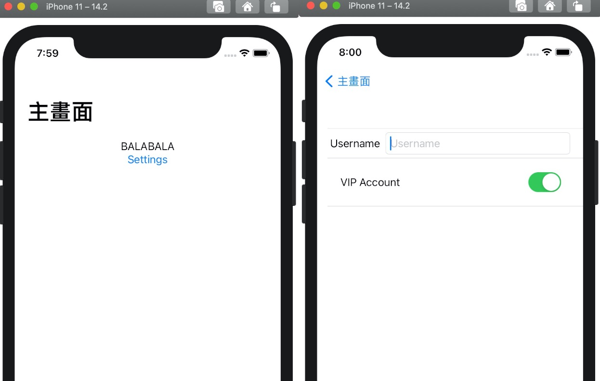<br />
</p>
<p><span class="figure-number">Figure 23: </span>UserDefault for Settings</p>
</div>
</div>
</div>
</div>
<div id="outline-container-org21f7b77" class="outline-3">
<h3 id="org21f7b77"><span class="section-number-3">12.5</span> Reading Resources</h3>
<div class="outline-text-3" id="text-12-5">
<ul class="org-ul">
<li><a href="https://www.simpleswiftguide.com/how-to-use-userdefaults-in-swiftui/">How to use UserDefaults in SwiftUI</a><br /></li>
</ul>
</div>
</div>
</div>
<div id="outline-container-Wrappers" class="outline-2">
<h2 id="Wrappers"><span class="section-number-2">13</span> Passing data between Views #3: Property Wrappers</h2>
<div class="outline-text-2" id="text-Wrappers">
<p>
All of these @Something statements are property wrappers. A property wrapper is actually a struct. These structs encapsulate some &ldquo;template&rdquo; behavior applied to the vars they wrap.<br />
</p>

<p>
The property wrapper feature adds <b>&ldquo;syntactic sugar&rdquo;</b> to make these structs easy to create/use.&ldquo; <sup><a id="fnr.15" class="footref" href="#fn.15">15</a></sup><br />
</p>
</div>
<div id="outline-container-org964781e" class="outline-3">
<h3 id="org964781e"><span class="section-number-3">13.1</span> SwiftUI的狀態管理</h3>
<div class="outline-text-3" id="text-13-1">
<p>
<a href="https://onevcat.com/2020/06/stateobject/">資料來源:@StateObject 和 @ObservedObject 的区别和使用</a><br />
在2019年SwiftUI剛問世時，除去專門用來管理手勢的@GestureState以外，有三個常用的和狀態管理相關的property wrapper，它們分別是@State，@ObservedObject和@EnvironmentObject。根據職責和作用範圍不同，它們各自的適用場景也有區別<sup><a id="fnr.16" class="footref" href="#fn.16">16</a></sup>。一般來說：<br />
</p>
<ul class="org-ul">
<li>@State用於View中的私有狀態值，一般來說它所修飾的都應該是struct值，並且不應該被其他的view看到。它代表了SwiftUI中作用範圍最小，本身也最簡單的狀態，比如一個Bool，一個Int或者一個String。簡單說，如果一個狀態能夠被標記為private並且它是值類型，那麼@State是適合的。<br /></li>
<li>對於更複雜的一組狀態，我們可以將它組織在一個class中，並讓其實現ObservableObject協議。對於這樣的class類型，其中被標記為@Published的屬性，將會在變更時自動發出事件，通知對它有依賴的View進行更新。View中如果需要依賴這樣的ObservableObject對象，在聲明時則使用@ObservedObject來訂閱。<br /></li>
<li>@EnvironmentObject針對那些需要傳遞到深層次的子View中的ObservableObject對象，我們可以在父層級的View上用.environmentObject修飾器來將它注入到環境中，這樣任意子View都可以通過@EnvironmentObject來獲取對應的對象。<br /></li>
</ul>

<p>
這基本就是初版SwiftUI 狀態管理的全部了。看起來對於狀態管理，SwiftUI的覆蓋已經很全面了，那為什麼要新加一個@StateObjectproperty wrapper呢？<br />
</p>
</div>
</div>
<div id="outline-container-orga2dc072" class="outline-3">
<h3 id="orga2dc072"><span class="section-number-3">13.2</span> @StateObject v.s. @ObservedObject</h3>
<div class="outline-text-3" id="text-13-2">
<p>
@ObservedObject不管存儲，會隨著View的創建被多次創建。而@StateObject保證對像只會被創建一次。因此，如果是在View裡自行創建的ObservableObjectmodel對象，大概率來說使用@StateObject會是更正確的選擇。@StateObject基本上來說就是一個針對class的@State升級版<sup><a id="fnr.16.100" class="footref" href="#fn.16">16</a></sup><br />
</p>
</div>
<div id="outline-container-org6818029" class="outline-4">
<h4 id="org6818029"><span class="section-number-4">13.2.1</span> 程式範例</h4>
<div class="outline-text-4" id="text-13-2-1">
<div class="org-src-container">
<pre class="src src-swift"><span class="linenr"> 1: </span><span style="color: #51afef;">struct</span> <span style="color: #c678dd;">ContentView</span>: View {
<span class="linenr"> 2: </span>    <span style="color: #51afef;">@State</span> <span style="color: #51afef;">private</span> <span style="color: #51afef;">var</span> showRealName = <span style="color: #a9a1e1;">false</span>
<span class="linenr"> 3: </span>    <span style="color: #51afef;">var</span> body: <span style="color: #51afef;">some</span> View {
<span class="linenr"> 4: </span>        VStack {
<span class="linenr"> 5: </span>            <span style="color: #c678dd;">Button</span>(<span style="color: #98be65;">"&#23416;&#34399;/&#22995;&#21517;"</span>) {
<span class="linenr"> 6: </span>                showRealName.<span style="color: #c678dd;">toggle</span>()
<span class="linenr"> 7: </span>            }
<span class="linenr"> 8: </span>            <span style="color: #c678dd;">Text</span>(<span style="color: #98be65;">"&#23416;&#29983;: \(</span>showRealName ? <span style="color: #98be65;">"202010101"</span> : <span style="color: #98be65;">"&#29579;&#23567;&#26126;")"</span>)
<span class="linenr"> 9: </span>            <span style="color: #c678dd;">ScoreBoad</span>().<span style="color: #c678dd;">padding</span>(.<span style="color: #c678dd;">top</span>, <span style="color: #da8548; font-weight: bold;">10</span>)
<span class="linenr">10: </span>        }
<span class="linenr">11: </span>    }
<span class="linenr">12: </span>}
<span class="linenr">13: </span>
<span class="linenr">14: </span><span style="color: #51afef;">class</span> <span style="color: #c678dd;">ScoreModel</span>: <span style="color: #c678dd;">ObservableObject</span> {
<span class="linenr">15: </span>    <span style="color: #51afef;">init</span>() {<span style="color: #c678dd;">print</span>(<span style="color: #98be65;">"ScoreModel Created"</span>)}
<span class="linenr">16: </span>    <span style="color: #51afef;">@Published</span> <span style="color: #51afef;">var</span> score: <span style="color: #c678dd;">Int</span> = <span style="color: #da8548; font-weight: bold;">40</span>
<span class="linenr">17: </span>}
<span class="linenr">18: </span>
<span class="linenr">19: </span><span style="color: #51afef;">struct</span> <span style="color: #c678dd;">ScoreBoad</span>: View {
<span class="linenr">20: </span>    <span style="color: #51afef;">@ObservedObject</span> <span style="color: #51afef;">var</span> scoreModel = <span style="color: #c678dd;">ScoreModel</span>()
<span class="linenr">21: </span>    <span style="color: #51afef;">@State</span> <span style="color: #51afef;">private</span> <span style="color: #51afef;">var</span> pass = <span style="color: #a9a1e1;">false</span>
<span class="linenr">22: </span>
<span class="linenr">23: </span>    <span style="color: #51afef;">var</span> body: <span style="color: #51afef;">some</span> View {
<span class="linenr">24: </span>        VStack {
<span class="linenr">25: </span>            <span style="color: #c678dd;">Button</span>(<span style="color: #98be65;">"&#21152;10&#20998;"</span>) {
<span class="linenr">26: </span>                scoreModel.<span style="color: #dcaeea;">score</span> += <span style="color: #da8548; font-weight: bold;">10</span>
<span class="linenr">27: </span>                <span style="color: #51afef;">if</span> scoreModel.<span style="color: #dcaeea;">score</span> &gt;= <span style="color: #da8548; font-weight: bold;">60</span> {
<span class="linenr">28: </span>                    pass = <span style="color: #a9a1e1;">true</span>
<span class="linenr">29: </span>                }
<span class="linenr">30: </span>            }
<span class="linenr">31: </span>            <span style="color: #c678dd;">Text</span>(<span style="color: #98be65;">"&#20998;&#25976;: \(</span>scoreModel.<span style="color: #dcaeea;">score</span><span style="color: #98be65;">)"</span>)
<span class="linenr">32: </span>            <span style="color: #c678dd;">Text</span>(<span style="color: #98be65;">"&#21450;&#26684;? \(</span>pass ? <span style="color: #98be65;">"YES"</span> : <span style="color: #98be65;">"NO")"</span>)
<span class="linenr">33: </span>            <span style="color: #c678dd;">GradeText</span>(scoreModel: scoreModel).<span style="color: #c678dd;">padding</span>(.<span style="color: #c678dd;">top</span>, <span style="color: #da8548; font-weight: bold;">10</span>)
<span class="linenr">34: </span>        }
<span class="linenr">35: </span>    }
<span class="linenr">36: </span>}
<span class="linenr">37: </span>
<span class="linenr">38: </span><span style="color: #51afef;">struct</span> <span style="color: #c678dd;">GradeText</span>: View {
<span class="linenr">39: </span>    <span style="color: #51afef;">@ObservedObject</span> <span style="color: #51afef;">var</span> scoreModel: ScoreModel
<span class="linenr">40: </span>
<span class="linenr">41: </span>    <span style="color: #51afef;">var</span> body: <span style="color: #51afef;">some</span> View {
<span class="linenr">42: </span>        <span style="color: #51afef;">if</span> scoreModel.<span style="color: #dcaeea;">score</span> &gt;= <span style="color: #da8548; font-weight: bold;">90</span> {
<span class="linenr">43: </span>            <span style="color: #51afef;">return</span> <span style="color: #c678dd;">Text</span>(<span style="color: #98be65;">"&#31561;&#32026;:A"</span>)
<span class="linenr">44: </span>        } <span style="color: #51afef;">else</span> <span style="color: #51afef;">if</span> scoreModel.<span style="color: #dcaeea;">score</span> &gt;= <span style="color: #da8548; font-weight: bold;">80</span> {
<span class="linenr">45: </span>            <span style="color: #51afef;">return</span> <span style="color: #c678dd;">Text</span>(<span style="color: #98be65;">"&#31561;&#32026;:B"</span>)
<span class="linenr">46: </span>        } <span style="color: #51afef;">else</span> {
<span class="linenr">47: </span>            <span style="color: #51afef;">return</span> <span style="color: #c678dd;">Text</span>(<span style="color: #98be65;">"&#31561;&#32026;:QQ"</span>)
<span class="linenr">48: </span>        }
<span class="linenr">49: </span>    }
<span class="linenr">50: </span>}
</pre>
</div>

<div id="org4b8d984" class="figure">
<p>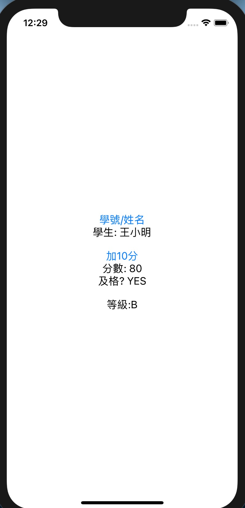<br />
</p>
<p><span class="figure-number">Figure 24: </span>@ObservableObject v.s. @StateObject</p>
</div>

<p>
上例中，按加分後，及格與等級的判斷都能正常運作，然而一旦切換學生姓名與學號，scoreModel的分數就會被重置為60分。原因在於按下「加分」button導致ContentView的狀態發生變化，ContentView.body被重新求值，連帶scoreBoard這個View也被重建，而其中的scoreModel也一起重新生成，於是之前所做的改變(狀態)就消失了。<br />
</p>
</div>
</div>
<div id="outline-container-orgd300d9e" class="outline-4">
<h4 id="orgd300d9e"><span class="section-number-4">13.2.2</span> Create once</h4>
<div class="outline-text-4" id="text-13-2-2">
<p>
只要理解了@ObservedObject存在的問題，@StateObject的意義也就很明顯了。@StateObject就是@State的升級版：@State是針對struct狀態所創建的存儲，@StateObject則是針對ObservableObjectclass的存儲。它保證這個class實例不會隨著View被重新創建。從而解決問題<sup><a id="fnr.16.100" class="footref" href="#fn.16">16</a></sup>。<br />
</p>

<p>
解決方案：把scoreBoard中的@ObservedObject改為@StateObject<br />
</p>
<div class="org-src-container">
<pre class="src src-swift"><span class="linenr">1: </span>...
<span class="linenr">2: </span><span style="color: #51afef;">struct</span> <span style="color: #c678dd;">ScoreBoad</span>: View {
<span class="linenr">3: </span>    <span style="color: #51afef;">@ObservedObject</span> <span style="color: #51afef;">var</span> scoreModel = <span style="color: #c678dd;">ScoreModel</span>()
<span class="linenr">4: </span>    <span style="color: #51afef;">@State</span> <span style="color: #51afef;">private</span> <span style="color: #51afef;">var</span> pass = <span style="color: #a9a1e1;">false</span>
<span class="linenr">5: </span>
<span class="linenr">6: </span>    <span style="color: #51afef;">var</span> body: <span style="color: #51afef;">some</span> View {
<span class="linenr">7: </span>        ....
<span class="linenr">8: </span>    }
<span class="linenr">9: </span>}
</pre>
</div>
</div>
</div>
</div>
<div id="outline-container-orgc5d0b32" class="outline-3">
<h3 id="orgc5d0b32"><span class="section-number-3">13.3</span> 使用@EnvironmentObject保持狀態</h3>
<div class="outline-text-3" id="text-13-3">
<p>
除了@StateObject外，另一種讓狀態object保持住的方式，是在更外層使用.environmentObject：<br />
</p>
<div class="org-src-container">
<pre class="src src-swift"><span class="linenr">1: </span><span style="color: #51afef;">struct</span> <span style="color: #c678dd;">SwiftUINewApp</span>: App {
<span class="linenr">2: </span>    <span style="color: #51afef;">var</span> body: <span style="color: #51afef;">some</span> Scene {
<span class="linenr">3: </span>        WindowGroup {
<span class="linenr">4: </span>            <span style="color: #c678dd;">ContentView</span>().<span style="color: #c678dd;">environmentObject</span>(<span style="color: #c678dd;">scoreModel</span>())
<span class="linenr">5: </span>        }
<span class="linenr">6: </span>    }
<span class="linenr">7: </span>}
</pre>
</div>
<p>
這樣，scoreModel對象將被注入到環境中，不再隨著ContentView的刷新而變更。在使用時，只需要遵循普通的environment方式，把Model聲明為@EnvironmentObject就行了：<br />
</p>
<div class="org-src-container">
<pre class="src src-swift"><span class="linenr"> 1: </span><span style="color: #51afef;">struct</span> <span style="color: #c678dd;">ScoreBoard</span>: View {
<span class="linenr"> 2: </span>    <span style="color: #51afef;">@EnvironmentObject</span> <span style="color: #51afef;">var</span> scoreModel: ScoreModel
<span class="linenr"> 3: </span>    <span style="color: #5B6268;">// </span><span style="color: #5B6268;">...</span>
<span class="linenr"> 4: </span>
<span class="linenr"> 5: </span>    <span style="color: #5B6268;">// </span><span style="color: #5B6268;">ScoreText(model: model).padding(.top, 20)</span>
<span class="linenr"> 6: </span>    <span style="color: #c678dd;">ScoreText</span>().<span style="color: #c678dd;">padding</span>(.<span style="color: #c678dd;">top</span>, <span style="color: #da8548; font-weight: bold;">20</span>)
<span class="linenr"> 7: </span>}
<span class="linenr"> 8: </span>
<span class="linenr"> 9: </span><span style="color: #51afef;">struct</span> <span style="color: #c678dd;">GradeText</span>: View {
<span class="linenr">10: </span>    <span style="color: #51afef;">@EnvironmentObject</span> <span style="color: #51afef;">var</span> scoreModel: ScofeModel
<span class="linenr">11: </span>    <span style="color: #5B6268;">// </span><span style="color: #5B6268;">...</span>
<span class="linenr">12: </span>}
</pre>
</div>
</div>
</div>
<div id="outline-container-org29f596d" class="outline-3">
<h3 id="org29f596d"><span class="section-number-3">13.4</span> Property wrapper syntactic Sugar</h3>
<div class="outline-text-3" id="text-13-4">
<div class="org-src-container">
<pre class="src src-swift"><span class="linenr">1: </span><span style="color: #51afef;">@Published</span> <span style="color: #51afef;">var</span> dice: Dice = <span style="color: #c678dd;">Dice</span>()
</pre>
</div>
<p>
上述宣告實際同以下 struct<br />
</p>
<div class="org-src-container">
<pre class="src src-swift"><span class="linenr">1: </span><span style="color: #51afef;">struct</span> <span style="color: #c678dd;">Published</span> {
<span class="linenr">2: </span>    <span style="color: #51afef;">var</span> wrappedValue: Dice
<span class="linenr">3: </span>    <span style="color: #51afef;">var</span> projectedValue: <span style="color: #c678dd;">Publisher</span>&lt;Dice, <span style="color: #c678dd;">Never</span>&gt;
<span class="linenr">4: </span>}
</pre>
</div>
<p>
接下來 Swift 產生以下變數<br />
</p>
<div class="org-src-container">
<pre class="src src-swift"><span class="linenr">1: </span><span style="color: #51afef;">var</span> _dice: <span style="color: #c678dd;">Published</span> = <span style="color: #c678dd;">Published</span>(wrappedValue: <span style="color: #c678dd;">Dice</span>())
<span class="linenr">2: </span><span style="color: #51afef;">var</span> dice: Dice {
<span class="linenr">3: </span>    <span style="color: #51afef;">get</span> { _dice.<span style="color: #dcaeea;">wrappedValue</span>  }
<span class="linenr">4: </span>    <span style="color: #51afef;">set</span> { _dice.<span style="color: #dcaeea;">wrappedValue</span> = newValue }
<span class="linenr">5: </span>}
</pre>
</div>
</div>
</div>
</div>
<div id="outline-container-SW-MVVM" class="outline-2">
<h2 id="SW-MVVM"><span class="section-number-2">14</span> MVVM</h2>
<div class="outline-text-2" id="text-SW-MVVM">
</div>
<div id="outline-container-org1707075" class="outline-3">
<h3 id="org1707075"><span class="section-number-3">14.1</span> Design pattern</h3>
<div class="outline-text-3" id="text-14-1">
<p>
MVVM的概念最早應該是在2005年由Microsoft的<a href="https://blogs.msdn.microsoft.com/johngossman/2005/10/08/introduction-to-modelviewviewmodel-pattern-for-building-wpf-apps/">John Gossman</a>提出來的，它的概念是，整個Swift project會拆分成三個部份: View、ViewModel、Model，其中View的角色就是單純的視覺元件，像是按鈕、文字標籤等等，在View裡面不會有邏輯、狀態等等，單純就是個呈現資料的元件。而要讓View呈現資料，最直覺的方式，就是把View跟Model做綁定，讓View的元件跟著Model一起做變化。但這樣會有個問題，就是通常Model來的資料，並不是簡單就能轉換成View的樣式的，這時候就需要有個物件，介在View跟Model的中間，這個物件會掌管這些跟View高度相關的邏輯的操作，像是轉換Date物件變成人看得懂的文字格式等，稱之為ViewModel。上面的概念可以畫成這樣的資料流：<br />
</p>


<div id="org21cbd74" class="figure">
<p><br />
</p>
<p><span class="figure-number">Figure 25: </span>MVVM Architecture</p>
</div>

<p>
在iOS開發上，依照上述MVVM的定義，ContentView變成一個單純的View，而我們會另外產生一個ViewModel來負責presentational logic跟部份的controller logic。所以在ContentView裡面，就只會有：<br />
</p>
<ol class="org-ol">
<li>View logic，所有跟呈現有關的Code<br /></li>
<li>綁定ViewModel<br /></li>
</ol>
<p>
而在ViewModel裡面，則是負責兩個部份：<br />
</p>
<ol class="org-ol">
<li>Controller logic，如pagination, error handling,… etc<br /></li>
<li>Presentation logic，提供接口讓View綁定(binding)<br /></li>
</ol>
<p>
開發上，一旦View綁定好ViewModel的資料，在撰寫商業邏輯的時候，就可以不用管包括動畫、轉場、main thread等等跟View相關的問題，因為分工明確所以就不會有寫起來綁手綁腳的感覺。更棒的是，並且因為ViewModel是一個單純的、沒有相依於View的物件，所以要做測試簡單多了！<br />
<a href="https://www.codementor.io/@koromiko/mvvm-app-cl1wvw2sh">資料來源: 歡迎來到真實世界 - 原來是那個傳說中的MVVM阿</a><br />
</p>
</div>
</div>
<div id="outline-container-org60c70ac" class="outline-3">
<h3 id="org60c70ac"><span class="section-number-3">14.2</span> What is the idea behind MVVM</h3>
<div class="outline-text-3" id="text-14-2">
</div>
<div id="outline-container-org9c846b0" class="outline-4">
<h4 id="org9c846b0"><span class="section-number-4">14.2.1</span> Model</h4>
<div class="outline-text-4" id="text-14-2-1">
<ul class="org-ul">
<li>負責Data and Logic<br /></li>
<li>UI Independent<br /></li>
</ul>
</div>
</div>
<div id="outline-container-orgf0ae850" class="outline-4">
<h4 id="orgf0ae850"><span class="section-number-4">14.2.2</span> View</h4>
<div class="outline-text-4" id="text-14-2-2">
<ul class="org-ul">
<li>Everything visible on screen<br /></li>
<li>to display the source of truth<br /></li>
</ul>
</div>
</div>
<div id="outline-container-org7e5cfeb" class="outline-4">
<h4 id="org7e5cfeb"><span class="section-number-4">14.2.3</span> ViewModel</h4>
<div class="outline-text-4" id="text-14-2-3">
<ul class="org-ul">
<li>Interpreter<br /></li>
<li>Glue between Model and View<br /></li>
</ul>
</div>
</div>
<div id="outline-container-org7df927f" class="outline-4">
<h4 id="org7df927f"><span class="section-number-4">14.2.4</span> 為什麼要拆成三部份</h4>
<div class="outline-text-4" id="text-14-2-4">
<p>
以<a href="https://www.youtube.com/watch?v=LntH6moCuo0">https://www.youtube.com/watch?v=LntH6moCuo0</a>來解釋<br />
</p>
</div>
</div>
</div>
<div id="outline-container-org148d976" class="outline-3">
<h3 id="org148d976"><span class="section-number-3">14.3</span> DEMO</h3>
<div class="outline-text-3" id="text-14-3">
<p>
以&ldquo;推薦書單&rdquo;的 APP 為例:<br />
</p>
<ul class="org-ul">
<li><p>
Model: 包含書名、作者、出版社&#x2026;.，而實際的資料來源可能是雲端資料庫(Firebase)、Web API、本機資料庫(Core data)。<br />
</p>
<div class="org-src-container">
<pre class="src src-swift"><span class="linenr">1: </span><span style="color: #51afef;">struct</span> <span style="color: #c678dd;">Book</span> {
<span class="linenr">2: </span>    <span style="color: #51afef;">let</span> title: <span style="color: #c678dd;">String</span>
<span class="linenr">3: </span>    <span style="color: #51afef;">let</span> author: <span style="color: #c678dd;">String</span>
<span class="linenr">4: </span>    <span style="color: #51afef;">let</span> dateReleased: <span style="color: #c678dd;">String</span>
<span class="linenr">5: </span>    <span style="color: #51afef;">let</span> publishCamp: <span style="color: #c678dd;">String</span>
<span class="linenr">6: </span>    <span style="color: #51afef;">let</span> publishCity: <span style="color: #c678dd;">String</span>
<span class="linenr">7: </span>    <span style="color: #51afef;">let</span> isFavorite: <span style="color: #c678dd;">Bool</span>
<span class="linenr">8: </span>}
</pre>
</div></li>
<li>View: 在 APP 畫面上呈現 Model 中資料的元件，如 Text, Image, Button, List&#x2026;..<br /></li>
<li><p>
ViewModel: 將 Model 中的資料取出，供 View 呈現，或是接受 View 輸入的資料，存回 Model。以&ldquo;推薦書單 APP&rdquo;為例，其 ViewModel 可能包含如下 struct:<br />
</p>
<div class="org-src-container">
<pre class="src src-swift"><span class="linenr"> 1: </span><span style="color: #51afef;">struct</span> <span style="color: #c678dd;">BookDetailViewModel</span> {
<span class="linenr"> 2: </span>    <span style="color: #51afef;">var</span> book: Book
<span class="linenr"> 3: </span>
<span class="linenr"> 4: </span>    <span style="color: #51afef;">var</span> isFavorite: <span style="color: #c678dd;">Bool</span>
<span class="linenr"> 5: </span>
<span class="linenr"> 6: </span>    <span style="color: #51afef;">init</span>(book: Book) {
<span class="linenr"> 7: </span>        <span style="color: #51afef;">self</span>.<span style="color: #dcaeea;">book</span> = book
<span class="linenr"> 8: </span>        <span style="color: #51afef;">self</span>.<span style="color: #dcaeea;">isFavorite</span> = <span style="color: #a9a1e1;">false</span>
<span class="linenr"> 9: </span>    }
<span class="linenr">10: </span>
<span class="linenr">11: </span>    <span style="color: #51afef;">var</span> title: <span style="color: #c678dd;">String</span> {
<span class="linenr">12: </span>        <span style="color: #51afef;">return</span> <span style="color: #51afef;">self</span>.<span style="color: #dcaeea;">book</span>.<span style="color: #c678dd;">title</span>
<span class="linenr">13: </span>    }
<span class="linenr">14: </span>
<span class="linenr">15: </span>    <span style="color: #51afef;">var</span> author: <span style="color: #c678dd;">String</span> {
<span class="linenr">16: </span>        <span style="color: #51afef;">return</span> <span style="color: #51afef;">self</span>.<span style="color: #dcaeea;">book</span>.<span style="color: #c678dd;">author</span>
<span class="linenr">17: </span>    }
<span class="linenr">18: </span>
<span class="linenr">19: </span>    <span style="color: #51afef;">var</span> dateReleased: <span style="color: #c678dd;">String</span> {
<span class="linenr">20: </span>        <span style="color: #51afef;">return</span> <span style="color: #51afef;">self</span>.<span style="color: #dcaeea;">book</span>.<span style="color: #dcaeea;">dateReleased</span>
<span class="linenr">21: </span>    }
<span class="linenr">22: </span>
<span class="linenr">23: </span>    <span style="color: #5B6268;">// </span><span style="color: #5B6268;">&#21576;&#29694;&#26178;&#35201;&#27714;&#20197; &#36960;&#27969;&#20986;&#29256;&#31038;(&#21488;&#21271;&#24066;) &#30340;&#26684;&#24335;&#20358;&#21576;&#29694;</span>
<span class="linenr">24: </span>    <span style="color: #51afef;">var</span> publisher: <span style="color: #c678dd;">String</span> {
<span class="linenr">25: </span>        <span style="color: #51afef;">let</span> output = <span style="color: #51afef;">self</span>.<span style="color: #dcaeea;">book</span>.<span style="color: #dcaeea;">publishCamp</span> + <span style="color: #98be65;">"("</span> + <span style="color: #51afef;">self</span>.<span style="color: #dcaeea;">book</span>.<span style="color: #dcaeea;">publishCity</span> + <span style="color: #98be65;">")"</span>
<span class="linenr">26: </span>        <span style="color: #51afef;">return</span> output
<span class="linenr">27: </span>    }
<span class="linenr">28: </span>}
</pre>
</div>
<p>
從Model中可以看到書籍的記錄欄位只有&ldquo;出版社&rdquo;(publishCamp)和&ldquo;出版地點&rdquo;(publishCity)，但若app對顯示結果的格式要求為&ldquo;出版社(出版地點)&rdquo;，則可以在ViewModel中來處理。<br />
此外，如果在 View 上有一個 Favorite Button，則當 user 點了 Favorite 後，ViewModel 應負責將 struct 中的 isFavorite 改存 True，並回存至 Model 中。Model 的資料只能透過 ViewModel 來新增刪除，View 無法直接染指。<br />
Model 與 UI 完全無關，單純用來儲存資料，ViewModel 為 Model 與 View 溝通的橋樑。<br />
</p></li>
</ul>
</div>
</div>
<div id="outline-container-org93dcab9" class="outline-3">
<h3 id="org93dcab9"><span class="section-number-3">14.4</span> Model要用Struct或是Class</h3>
<div class="outline-text-3" id="text-14-4">
<p>
<a href="https://www.appcoda.com.tw/swift-class/">資料來源:Swift Class vs Struct：設計 Model 時，該用 Struct 還是 Class 呢？</a><br />
</p>
</div>
<div id="outline-container-org3c2b9b0" class="outline-4">
<h4 id="org3c2b9b0"><span class="section-number-4">14.4.1</span> Struct 與 Class 的不同性質</h4>
<div class="outline-text-4" id="text-14-4-1">
<p>
首先，當我們指派 (assign) 一個實體給一個辨識符（identifier，也就是變數／常數名）的時候，如果該實體是 struct 的話，該辨識符所容納的會是該實體的所有內容；但如果它是 class 的話，這個辨識符就只會容納存放該實體的位址：<br />
</p>
<div class="org-src-container">
<pre class="src src-swift"><span class="linenr"> 1: </span><span style="color: #5B6268;">// </span><span style="color: #5B6268;">&#29992; struct &#23450;&#32681; Dog&#12290;</span>
<span class="linenr"> 2: </span><span style="color: #51afef;">struct</span> <span style="color: #c678dd;">Dog</span> {
<span class="linenr"> 3: </span>    <span style="color: #51afef;">var</span> name = <span style="color: #98be65;">"Bart"</span>
<span class="linenr"> 4: </span>}
<span class="linenr"> 5: </span><span style="color: #5B6268;">// </span><span style="color: #5B6268;">&#25972;&#20491; Dog &#23526;&#39636;&#37117;&#26371;&#34987;&#23384;&#21040; myDog &#35041;&#12290;</span>
<span class="linenr"> 6: </span><span style="color: #51afef;">var</span> myDog = <span style="color: #c678dd;">Dog</span>()
<span class="linenr"> 7: </span><span style="color: #5B6268;">// </span><span style="color: #5B6268;">&#29992; class &#23450;&#32681; Cat&#12290;</span>
<span class="linenr"> 8: </span><span style="color: #51afef;">class</span> <span style="color: #c678dd;">Cat</span> {
<span class="linenr"> 9: </span>    <span style="color: #51afef;">var</span> name = <span style="color: #98be65;">"Mimi"</span>
<span class="linenr">10: </span>}
<span class="linenr">11: </span><span style="color: #5B6268;">// </span><span style="color: #5B6268;">myCat &#21482;&#26371;&#20786;&#23384; Cat &#23526;&#39636;&#30340;&#20301;&#22336;&#12290;Cat &#23526;&#39636;&#26412;&#36523;&#26371;&#34987;&#23384;&#21040;&#21029;&#30340;&#22320;&#26041;&#12290;</span>
<span class="linenr">12: </span><span style="color: #51afef;">var</span> myCat = <span style="color: #c678dd;">Cat</span>()
</pre>
</div>
<p>
也就是說，當我們使用辨識符的時候，如果它的型別是 struct 的話，我們在操作的實體都會是本地的。但是當我們在操作 class 型別的辨識符的話，那麼我們實際上是透過辨識符在操作一個遠端的實體。所以，當我們更改這些實體的屬性的時候，它們的行為就不太一樣了：<br />
</p>
<div class="org-src-container">
<pre class="src src-swift"><span class="linenr"> 1: </span><span style="color: #5B6268;">// </span><span style="color: #5B6268;">&#20351;&#29992; struct&#12290;</span>
<span class="linenr"> 2: </span><span style="color: #51afef;">var</span> herDog = <span style="color: #c678dd;">Dog</span>() {
<span class="linenr"> 3: </span>    <span style="color: #5B6268;">// </span><span style="color: #5B6268;">&#22914;&#26524; herDog &#26377;&#35722;&#21205;&#30340;&#35441;&#23601;&#39023;&#31034;&#35338;&#24687;&#12290;</span>
<span class="linenr"> 4: </span>    <span style="color: #51afef;">didSet</span> {
<span class="linenr"> 5: </span>        <span style="color: #c678dd;">print</span>(<span style="color: #98be65;">"Her dog is changed!"</span>)
<span class="linenr"> 6: </span>    }
<span class="linenr"> 7: </span>}
<span class="linenr"> 8: </span>herDog.<span style="color: #c678dd;">name</span> = <span style="color: #98be65;">"Starlord"</span>
<span class="linenr"> 9: </span><span style="color: #5B6268;">// </span><span style="color: #5B6268;">Her dog is changed!</span>
<span class="linenr">10: </span><span style="color: #5B6268;">// </span><span style="color: #5B6268;">&#20351;&#29992; class&#12290;</span>
<span class="linenr">11: </span><span style="color: #51afef;">var</span> herCat = <span style="color: #c678dd;">Cat</span>() {
<span class="linenr">12: </span>    <span style="color: #51afef;">didSet</span> {
<span class="linenr">13: </span>        <span style="color: #c678dd;">print</span>(<span style="color: #98be65;">"Her cat is changed!"</span>)
<span class="linenr">14: </span>    }
<span class="linenr">15: </span>}
<span class="linenr">16: </span>herCat.<span style="color: #c678dd;">name</span> = <span style="color: #98be65;">"Mumu"</span>
<span class="linenr">17: </span><span style="color: #5B6268;">// </span><span style="color: #5B6268;">&#27794;&#26377;&#35338;&#24687;&#12290;</span>
</pre>
</div>
<p>
怎麼會有這樣的差別呢？因為 herDog 儲存了所有的 Dog 實體內容，所以任何 Dog 實體的屬性的變動，就等於說 herDog 本身有變動。然而，herCat 並沒有儲存 Cat 實體的內容，所以 Cat 實體屬性的變動是在別的地方發生的，且 herCat 本身所儲存的 Cat 實體位址並沒有任何的改變。<br />
由圖<a href="#org21cbd74">25</a>可看出，<br />
</p>
</div>
</div>
<div id="outline-container-orge622f94" class="outline-4">
<h4 id="orge622f94"><span class="section-number-4">14.4.2</span> MMVM中的Model</h4>
</div>
</div>

<div id="outline-container-org1c96ba1" class="outline-3">
<h3 id="org1c96ba1"><span class="section-number-3">14.5</span> DICE DEMO</h3>
</div>
<div id="outline-container-org0e85955" class="outline-3">
<h3 id="org0e85955"><span class="section-number-3">14.6</span> Further Reading Resources</h3>
<div class="outline-text-3" id="text-14-6">
<ul class="org-ul">
<li><a href="https://www.youtube.com/watch?v=1IlUBHvgY8Q&amp;t=29s">SwiftUI MVVM Programming with ObservableObject @Published @ObservedObject</a><br /></li>
<li><a href="https://www.youtube.com/watch?v=LntH6moCuo0">SwiftUI 2.0: MVVM - A Practical Approach</a><br /></li>
<li><a href="https://www.youtube.com/watch?v=gkAV4D1nopA">SwiftUI Tip Calculator Using MVVM Design Pattern</a><br /></li>
<li><a href="https://www.youtube.com/watch?v=cbqMkIG6Qeg">Understanding MVVM Design Pattern</a>: 講的超清楚<br /></li>
<li>Video:  <a href="https://www.youtube.com/watch?v=EhtK_H9LsYQ">MVVM SwiftUI - Model View ViewModel Pattern - Getting Started</a><br /></li>
<li>GitHub: <a href="https://github.com/rebeloper/SwiftUIMVVM.git">https://github.com/rebeloper/SwiftUIMVVM.git</a><br /></li>
</ul>
</div>
</div>
</div>
<div id="outline-container-orgbfaa194" class="outline-2">
<h2 id="orgbfaa194"><span class="section-number-2">15</span> Web API: URLSession v.s. JSONDecoder</h2>
<div class="outline-text-2" id="text-15">
</div>
<div id="outline-container-orgdbc86d8" class="outline-3">
<h3 id="orgdbc86d8"><span class="section-number-3">15.1</span> Demo 1</h3>
<div class="outline-text-3" id="text-15-1">
</div>
<div id="outline-container-orgd4378fb" class="outline-4">
<h4 id="orgd4378fb"><span class="section-number-4">15.1.1</span> ContentView.swift</h4>
<div class="outline-text-4" id="text-15-1-1">
<div class="org-src-container">
<pre class="src src-swift"><span class="linenr"> 1: </span><span style="color: #51afef;">import</span> SwiftUI
<span class="linenr"> 2: </span>
<span class="linenr"> 3: </span><span style="color: #51afef;">struct</span> <span style="color: #c678dd;">Todo</span>: <span style="color: #c678dd;">Codable</span>, Identifiable {
<span class="linenr"> 4: </span>    <span style="color: #51afef;">public</span> <span style="color: #51afef;">var</span> id: <span style="color: #c678dd;">Int</span>
<span class="linenr"> 5: </span>    <span style="color: #51afef;">public</span> <span style="color: #51afef;">var</span> title: <span style="color: #c678dd;">String</span>
<span class="linenr"> 6: </span>    <span style="color: #51afef;">public</span> <span style="color: #51afef;">var</span> completed: <span style="color: #c678dd;">Bool</span>
<span class="linenr"> 7: </span>}
<span class="linenr"> 8: </span>
<span class="linenr"> 9: </span><span style="color: #51afef;">class</span> <span style="color: #c678dd;">FetchToDo</span>: <span style="color: #c678dd;">ObservableObject</span> {
<span class="linenr">10: </span>  <span style="color: #5B6268;">// </span><span style="color: #5B6268;">1.</span>
<span class="linenr">11: </span>  <span style="color: #51afef;">@Published</span> <span style="color: #51afef;">var</span> todos = [Todo]()
<span class="linenr">12: </span>
<span class="linenr">13: </span>    <span style="color: #51afef;">init</span>() {
<span class="linenr">14: </span>        <span style="color: #51afef;">let</span> url = <span style="color: #c678dd;">URL</span>(string: <span style="color: #98be65;">"https://jsonplaceholder.typicode.com/todos"</span>)!
<span class="linenr">15: </span>        <span style="color: #5B6268;">// </span><span style="color: #5B6268;">2.</span>
<span class="linenr">16: </span>        <span style="color: #c678dd;">URLSession</span>.<span style="color: #c678dd;">shared</span>.<span style="color: #c678dd;">dataTask</span>(with: url) {(data, response, error) <span style="color: #51afef;">in</span>
<span class="linenr">17: </span>            <span style="color: #51afef;">do</span> {
<span class="linenr">18: </span>                <span style="color: #51afef;">if</span> <span style="color: #51afef;">let</span> todoData = data {
<span class="linenr">19: </span>                    <span style="color: #5B6268;">// </span><span style="color: #5B6268;">3.</span>
<span class="linenr">20: </span>                    <span style="color: #51afef;">let</span> decodedData = <span style="color: #51afef;">try</span> <span style="color: #c678dd;">JSONDecoder</span>().<span style="color: #c678dd;">decode</span>([Todo].<span style="color: #51afef;">self</span>, from: todoData)
<span class="linenr">21: </span>                    DispatchQueue.<span style="color: #c678dd;">main</span>.<span style="color: #dcaeea;">async</span> {
<span class="linenr">22: </span>                        <span style="color: #51afef;">self</span>.<span style="color: #dcaeea;">todos</span> = decodedData
<span class="linenr">23: </span>                    }
<span class="linenr">24: </span>                } <span style="color: #51afef;">else</span> {
<span class="linenr">25: </span>                    <span style="color: #c678dd;">print</span>(<span style="color: #98be65;">"No data"</span>)
<span class="linenr">26: </span>                }
<span class="linenr">27: </span>            } <span style="color: #51afef;">catch</span> {
<span class="linenr">28: </span>                <span style="color: #c678dd;">print</span>(<span style="color: #98be65;">"Error"</span>)
<span class="linenr">29: </span>            }
<span class="linenr">30: </span>        }.<span style="color: #c678dd;">resume</span>()
<span class="linenr">31: </span>    }
<span class="linenr">32: </span>}
<span class="linenr">33: </span>
<span class="linenr">34: </span><span style="color: #51afef;">struct</span> <span style="color: #c678dd;">ContentView</span>: View {
<span class="linenr">35: </span>    <span style="color: #5B6268;">// </span><span style="color: #5B6268;">1.</span>
<span class="linenr">36: </span>    <span style="color: #51afef;">@ObservedObject</span> <span style="color: #51afef;">var</span> fetch = <span style="color: #c678dd;">FetchToDo</span>()
<span class="linenr">37: </span>    <span style="color: #51afef;">var</span> body: <span style="color: #51afef;">some</span> View {
<span class="linenr">38: </span>        VStack {
<span class="linenr">39: </span>            <span style="color: #5B6268;">// </span><span style="color: #5B6268;">2.</span>
<span class="linenr">40: </span>            <span style="color: #c678dd;">List</span>(fetch.<span style="color: #dcaeea;">todos</span>) { todo <span style="color: #51afef;">in</span>
<span class="linenr">41: </span>                <span style="color: #c678dd;">VStack</span>(alignment: .<span style="color: #dcaeea;">leading</span>) {
<span class="linenr">42: </span>                    <span style="color: #5B6268;">// </span><span style="color: #5B6268;">3.</span>
<span class="linenr">43: </span>                    <span style="color: #c678dd;">Text</span>(todo.<span style="color: #c678dd;">title</span>)
<span class="linenr">44: </span>                    <span style="color: #c678dd;">Text</span>(<span style="color: #98be65;">"\(</span>todo.<span style="color: #c678dd;">completed</span>.<span style="color: #c678dd;">description</span><span style="color: #98be65;">)"</span>) <span style="color: #5B6268;">// </span><span style="color: #5B6268;">print boolean</span>
<span class="linenr">45: </span>                        .<span style="color: #c678dd;">font</span>(.<span style="color: #c678dd;">system</span>(size: <span style="color: #da8548; font-weight: bold;">11</span>))
<span class="linenr">46: </span>                        .<span style="color: #c678dd;">foregroundColor</span>(Color.<span style="color: #dcaeea;">gray</span>)
<span class="linenr">47: </span>                }
<span class="linenr">48: </span>            }
<span class="linenr">49: </span>        }
<span class="linenr">50: </span>    }
<span class="linenr">51: </span>}
</pre>
</div>

<div id="org2ee4ae3" class="figure">
<p><br />
</p>
</div>
</div>
</div>
</div>
<div id="outline-container-orga42383a" class="outline-3">
<h3 id="orga42383a"><span class="section-number-3">15.2</span> Demo 2</h3>
<div class="outline-text-3" id="text-15-2">
</div>
<div id="outline-container-orgcf481e0" class="outline-4">
<h4 id="orgcf481e0"><span class="section-number-4">15.2.1</span> MVVM</h4>
<div class="outline-text-4" id="text-15-2-1">
<ul class="org-ul">
<li>Model: FlowModel.swift<br /></li>
<li>View: ContentView.swift<br /></li>
<li>ViewModel: Flow.swift<br /></li>
</ul>
</div>
</div>
<div id="outline-container-org6909181" class="outline-4">
<h4 id="org6909181"><span class="section-number-4">15.2.2</span> FlowModel.swift</h4>
<div class="outline-text-4" id="text-15-2-2">
<div class="org-src-container">
<pre class="src src-swift"><span class="linenr"> 1: </span><span style="color: #51afef;">import</span> Foundation
<span class="linenr"> 2: </span>
<span class="linenr"> 3: </span><span style="color: #51afef;">struct</span> <span style="color: #c678dd;">FlowModel</span>: <span style="color: #c678dd;">Decodable</span>, <span style="color: #c678dd;">Hashable</span> {
<span class="linenr"> 4: </span>    <span style="color: #51afef;">var</span> &#24180;: <span style="color: #c678dd;">Int</span>? = <span style="color: #a9a1e1;">nil</span>
<span class="linenr"> 5: </span>    <span style="color: #51afef;">var</span> &#26376;: <span style="color: #c678dd;">Int</span>? = <span style="color: #a9a1e1;">nil</span>
<span class="linenr"> 6: </span>    <span style="color: #51afef;">var</span> &#32317;&#36939;&#37327;: <span style="color: #c678dd;">Int</span>? = <span style="color: #a9a1e1;">nil</span>
<span class="linenr"> 7: </span>    <span style="color: #51afef;">var</span> &#26085;&#22343;&#36939;&#37327;: <span style="color: #c678dd;">Int</span>? = <span style="color: #a9a1e1;">nil</span>
<span class="linenr"> 8: </span>    <span style="color: #51afef;">var</span> &#20551;&#26085;&#22343;&#36939;&#37327;: <span style="color: #c678dd;">Int</span>? = <span style="color: #a9a1e1;">nil</span>
<span class="linenr"> 9: </span>    <span style="color: #51afef;">var</span> &#26376;&#21488;&#19978;&#21047;&#21345;&#26085;&#22343;&#31558;&#25976;: <span style="color: #c678dd;">Double</span>? = <span style="color: #a9a1e1;">nil</span>
<span class="linenr">10: </span>    <span style="color: #51afef;">var</span> &#36554;&#19978;&#21047;&#21345;&#26085;&#22343;&#31558;&#25976;: <span style="color: #c678dd;">Double</span>? = <span style="color: #a9a1e1;">nil</span>
<span class="linenr">11: </span>    <span style="color: #51afef;">var</span> &#21806;&#31080;&#27231;&#26085;&#22343;&#31558;&#25976;: <span style="color: #c678dd;">Double</span>? = <span style="color: #a9a1e1;">nil</span>
<span class="linenr">12: </span>    <span style="color: #51afef;">var</span> &#35036;&#31080;&#26085;&#22343;&#31558;&#25976;: <span style="color: #c678dd;">Double</span>? = <span style="color: #a9a1e1;">nil</span>
<span class="linenr">13: </span>    <span style="color: #51afef;">var</span> &#22296;&#39636;&#31080;&#26085;&#22343;&#31558;&#25976;: <span style="color: #c678dd;">Double</span>? = <span style="color: #a9a1e1;">nil</span>
<span class="linenr">14: </span>}
</pre>
</div>
</div>
</div>
<div id="outline-container-orgacbcf7a" class="outline-4">
<h4 id="orgacbcf7a"><span class="section-number-4">15.2.3</span> ContentView.swift</h4>
<div class="outline-text-4" id="text-15-2-3">
<div class="org-src-container">
<pre class="src src-swift"><span class="linenr"> 1: </span><span style="color: #51afef;">import</span> SwiftUI
<span class="linenr"> 2: </span>
<span class="linenr"> 3: </span><span style="color: #51afef;">struct</span> <span style="color: #c678dd;">ContentView</span>: View {
<span class="linenr"> 4: </span>    <span style="color: #51afef;">@ObservedObject</span> <span style="color: #51afef;">var</span> flow = <span style="color: #c678dd;">FetchFlow</span>()
<span class="linenr"> 5: </span>
<span class="linenr"> 6: </span>    <span style="color: #51afef;">var</span> body: <span style="color: #51afef;">some</span> View {
<span class="linenr"> 7: </span>        NavigationView {
<span class="linenr"> 8: </span>            <span style="color: #c678dd;">List</span>() {
<span class="linenr"> 9: </span>                <span style="color: #c678dd;">ForEach</span>(flow.<span style="color: #dcaeea;">flows</span>, id: \.<span style="color: #51afef;">self</span>) {(item) <span style="color: #51afef;">in</span>
<span class="linenr">10: </span>                    <span style="color: #c678dd;">NavigationLink</span>(destination: <span style="color: #c678dd;">Text</span>(<span style="color: #98be65;">"&#32317;&#36939;&#37327;: \(</span>item.<span style="color: #dcaeea;">&#32317;&#36939;&#37327;</span>!<span style="color: #98be65;">)"</span>)) {
<span class="linenr">11: </span>                        HStack {
<span class="linenr">12: </span>                            <span style="color: #c678dd;">Text</span>(<span style="color: #98be65;">"\(</span>item.<span style="color: #dcaeea;">&#24180;</span>!<span style="color: #98be65;">)&#24180;\(</span>item.<span style="color: #dcaeea;">&#26376;</span>!<span style="color: #98be65;">)&#26376;"</span>)
<span class="linenr">13: </span>                            <span style="color: #c678dd;">Text</span>(<span style="color: #98be65;">"\(</span>item.<span style="color: #dcaeea;">&#26085;&#22343;&#36939;&#37327;</span>!<span style="color: #98be65;">)"</span>)
<span class="linenr">14: </span>                        }
<span class="linenr">15: </span>                    }
<span class="linenr">16: </span>                }
<span class="linenr">17: </span>            }.<span style="color: #c678dd;">navigationTitle</span>(<span style="color: #98be65;">""</span>)
<span class="linenr">18: </span>        }
<span class="linenr">19: </span>    }
<span class="linenr">20: </span>}
<span class="linenr">21: </span><span style="color: #51afef;">struct</span> <span style="color: #c678dd;">ContentView_Previews</span>: PreviewProvider {
<span class="linenr">22: </span>    <span style="color: #51afef;">static</span> <span style="color: #51afef;">var</span> previews: <span style="color: #51afef;">some</span> View {
<span class="linenr">23: </span>        <span style="color: #c678dd;">ContentView</span>()
<span class="linenr">24: </span>    }
<span class="linenr">25: </span>}
<span class="linenr">26: </span>
</pre>
</div>
</div>
</div>
<div id="outline-container-orgb3fdd56" class="outline-4">
<h4 id="orgb3fdd56"><span class="section-number-4">15.2.4</span> Flow.swift</h4>
<div class="outline-text-4" id="text-15-2-4">
<div class="org-src-container">
<pre class="src src-swift"><span class="linenr"> 1: </span><span style="color: #51afef;">import</span> Foundation
<span class="linenr"> 2: </span><span style="color: #51afef;">class</span> <span style="color: #c678dd;">FetchFlow</span>: <span style="color: #c678dd;">ObservableObject</span> {
<span class="linenr"> 3: </span>    <span style="color: #51afef;">@Published</span> <span style="color: #51afef;">var</span> flows = [FlowModel]()
<span class="linenr"> 4: </span>    <span style="color: #51afef;">init</span>() {
<span class="linenr"> 5: </span>        <span style="color: #51afef;">let</span> urlstr = <span style="color: #98be65;">"https://data.kcg.gov.tw/dataset/6f29f6f4-2549-4473-aa90-bf60d10895dc/resource/30dfc2cf-17b5-4a40-8bb7-c511ea166bd3/download/lightrailtraffic.json"</span>
<span class="linenr"> 6: </span>        <span style="color: #51afef;">guard</span> <span style="color: #51afef;">let</span> url = <span style="color: #c678dd;">URL</span>(string: urlstr) <span style="color: #51afef;">else</span> {
<span class="linenr"> 7: </span>            <span style="color: #c678dd;">print</span>(<span style="color: #98be65;">"Invalid json url"</span>)
<span class="linenr"> 8: </span>            <span style="color: #51afef;">return</span>
<span class="linenr"> 9: </span>        }
<span class="linenr">10: </span>        <span style="color: #c678dd;">URLSession</span>.<span style="color: #c678dd;">shared</span>.<span style="color: #c678dd;">dataTask</span>(with: url) {(data, response, error) <span style="color: #51afef;">in</span>
<span class="linenr">11: </span>            <span style="color: #51afef;">do</span> {
<span class="linenr">12: </span>                <span style="color: #51afef;">if</span> <span style="color: #51afef;">let</span> flowData = data {
<span class="linenr">13: </span>                    <span style="color: #51afef;">let</span> decodeData = <span style="color: #51afef;">try</span> <span style="color: #c678dd;">JSONDecoder</span>().<span style="color: #c678dd;">decode</span>([FlowModel].<span style="color: #51afef;">self</span>, from: flowData)
<span class="linenr">14: </span>
<span class="linenr">15: </span>                    DispatchQueue.<span style="color: #c678dd;">main</span>.<span style="color: #dcaeea;">async</span> {
<span class="linenr">16: </span>                        <span style="color: #51afef;">self</span>.<span style="color: #dcaeea;">flows</span> = decodeData
<span class="linenr">17: </span>                    }
<span class="linenr">18: </span>                } <span style="color: #51afef;">else</span> {
<span class="linenr">19: </span>                    <span style="color: #c678dd;">print</span>(<span style="color: #98be65;">"No data"</span>)
<span class="linenr">20: </span>                }
<span class="linenr">21: </span>            } <span style="color: #51afef;">catch</span> {
<span class="linenr">22: </span>                <span style="color: #c678dd;">print</span>(<span style="color: #98be65;">"\(</span>error<span style="color: #98be65;">)"</span>)
<span class="linenr">23: </span>            }
<span class="linenr">24: </span>        }.<span style="color: #c678dd;">resume</span>()
<span class="linenr">25: </span>    }
<span class="linenr">26: </span>}
</pre>
</div>
</div>
</div>
<div id="outline-container-orgca4dfba" class="outline-4">
<h4 id="orgca4dfba"><span class="section-number-4">15.2.5</span> Result</h4>
<div class="outline-text-4" id="text-15-2-5">

<div id="orgce24e45" class="figure">
<p><br />
</p>
</div>
</div>
</div>
</div>
<div id="outline-container-orge1c206f" class="outline-3">
<h3 id="orge1c206f"><span class="section-number-3">15.3</span> 公開資料平台</h3>
<div class="outline-text-3" id="text-15-3">
<ul class="org-ul">
<li><a href="https://data.gov.tw/">政府資料開放平台</a><br /></li>
<li><a href="https://data.kcg.gov.tw/dataset">高雄市政府開放資料集</a><br /></li>
<li><a href="https://data.tainan.gov.tw/dataset">台南市政府開放資料集</a><br /></li>
<li><a href="https://ptx.transportdata.tw/PTX/Service">公共運輸整合資訊</a><br /></li>
<li><a href="https://kaleidosblog.s3-eu-west-1.amazonaws.com/json/tutorial.json">country/code JSON sample</a><br /></li>
</ul>
</div>
</div>
<div id="outline-container-org79f81e9" class="outline-3">
<h3 id="org79f81e9"><span class="section-number-3">15.4</span> Further Reading</h3>
<div class="outline-text-3" id="text-15-4">
<ul class="org-ul">
<li><a href="https://www.youtube.com/watch?v=tdxKIPpPDAI">iOS Swift Tutorial: Use Web APIs and JSON Data with Swift 5</a>- <a href="https://www.ioscreator.com/tutorials/swiftui-json-list-tutorial">SwiftUI Fetch JSON Data into List</a><br /></li>
<li><a href="https://programmingwithswift.com/parse-json-from-file-and-url-with-swift/">Parse JSON from file and URL with Swift</a><br /></li>
<li><a href="https://www.youtube.com/watch?v=1en4JyW3XSI">Making an API call and fetch JSON data in SwiftUI</a><br /></li>
<li><a href="https://benoitpasquier.com/encoding-decoding-json-swift4/">The best way to encode and decode JSON in Swift4 </a><br /></li>
<li><a href="https://www.reddit.com/r/swift/comments/emw0i3/jsondecoder_fails_if_i_dont_have_an_id_for_each/">JSONDecoder fails if I don&rsquo;t have an &ldquo;id&rdquo; for each item&#x2026; why doesn&rsquo;t UUID work?</a><br /></li>
<li><a href="https://medium.com/%E5%BD%BC%E5%BE%97%E6%BD%98%E7%9A%84-swift-ios-app-%E9%96%8B%E7%99%BC%E6%95%99%E5%AE%A4/%E8%A7%A3%E6%B1%BAjson-key%E4%B8%8D%E5%9B%BA%E5%AE%9A%E6%99%82%E5%87%BA%E7%8F%BE-no-value-associated-with-key-codingkeys-%E7%8B%80%E6%B3%81-720d7d09486a">解決Json Key不固定時出現“No value associated with key CodingKeys” 狀況</a><br /></li>
</ul>
</div>
</div>
</div>
<div id="outline-container-SW-Protocols" class="outline-2">
<h2 id="SW-Protocols"><span class="section-number-2">16</span> <span class="todo STRT">STRT</span> Protocols</h2>
<div class="outline-text-2" id="text-SW-Protocols">
<ul class="org-ul">
<li>Protocols are a fundamental feature of Swift. They play a leading role in the structure of the Swift standard library and are a common method of abstraction. They provide a similar experience to interfaces that some other languages have. An advantage of protocols in Swift is that objects can conform to multiple protocols.<sup><a id="fnr.17" class="footref" href="#fn.17">17</a></sup><br /></li>
<li>Protocol是一個只宣告不定義的型別，然而這個特性可以讓我們的程式更有彈性，像在IOS SDK裡面，耳熟能詳的Delegate，就大量的運用Potocol，方便我們客製化事件發生時要處理的事情。<sup><a id="fnr.18" class="footref" href="#fn.18">18</a></sup><br /></li>

<li>對任何程式開發來說，減少重覆的 code，把權責明確分開，讓 code 維護性變好，是非常重要的課題。而在現今的軟體開發模式中，有許多方法可以做到這點，最為人所知的一個模式，就是利用繼承 (Inheritance)，把會重覆利用的部份放在母類別，讓其它子類別去繼承。另外一種做法，則是利用 Composition Pattern，將功能做成組件分出來，讓需要的模組去組合取用。<sup><a id="fnr.19" class="footref" href="#fn.19">19</a></sup><br /></li>
</ul>
<p class="verse">
A protocol defines a blueprint of methods, properties, and other requirements that suit a particular task or piece of functionality. The protocol can then be adopted by a class, structure, or enumeration to provide an actual implementation of those requirements. Any type that satisfies the requirements of a protocol is said to conform to that protocol. <sup><a id="fnr.20" class="footref" href="#fn.20">20</a></sup><br />
</p>

<ul class="org-ul">
<li>協定提供類型可以做的資訊，Classes 和 structs 則提供物件的資訊，協定則提供物件將會執行的動作。<sup><a id="fnr.21" class="footref" href="#fn.21">21</a></sup><br /></li>
</ul>
<p class="verse">
協定是 Swift 一個重要的特性，它會定義出為了完成某項任務或功能所需的方法、屬性，但是本身不會實作這些任務跟功能，而僅僅只是表達出該任務或功能的名稱。協定為方法、屬性、以及其他特定的任務需求或功能定義藍圖。協定可被 class、struct、或 enum 類型採納以提供所需功能的具體實現。滿足了協定中需求的任意類型都叫做遵循了該協定。<br />
</p>

<p>
除了指定遵循類型必須實現的要求外，你可以擴展一個協定以實現其中的一些需求或實現一個符合類型的可以利用的附加功能。<sup><a id="fnr.22" class="footref" href="#fn.22">22</a></sup><br />
</p>
<ul class="org-ul">
<li>例如，你可能有一個名為str的變量，其類型為String。身為一個開發人員，你應該知道str代表String，如果我們定義了一個名為StringProtocol的協定，它具有所有的String的API，我們可以擴展任何類型去遵循StringProtocol（意思是滿足其所有要求），如此一來，即可以使用該對象，讓它就像是一個String，儘管我們不知道它是什麼！如果看起來像一隻鴨子，游泳像一隻鴨子，叫聲像一隻鴨子，那就是一隻鴨子。我們新的StringProtocol可以告訴那些遵守它協定的類型能夠做什麼，且不需要知道這些類型的資訊。<sup><a id="fnr.21.100" class="footref" href="#fn.21">21</a></sup><br /></li>
</ul>
</div>
<div id="outline-container-orgab3e0d9" class="outline-3">
<h3 id="orgab3e0d9"><span class="section-number-3">16.1</span> Protocol Syntax</h3>
<div class="outline-text-3" id="text-16-1">
</div>
<div id="outline-container-orgb4b956e" class="outline-4">
<h4 id="orgb4b956e"><span class="section-number-4">16.1.1</span> Syntax</h4>
<div class="outline-text-4" id="text-16-1-1">
<div class="org-src-container">
<pre class="src src-swift"><span class="linenr">1: </span><span style="color: #51afef;">protocol</span> <span style="color: #c678dd;">SomeProtocol</span> {
<span class="linenr">2: </span>    <span style="color: #5B6268;">// </span><span style="color: #5B6268;">protocol definition goes here</span>
<span class="linenr">3: </span>}
</pre>
</div>
<p>
Classes , structs, enums can adopt these protocol by placing protocol’s name after the type’s name, separated by a colon, as part of their definition. Multiple protocols can be listed, and are separated by commas:<sup><a id="fnr.23" class="footref" href="#fn.23">23</a></sup><br />
</p>
<div class="org-src-container">
<pre class="src src-swift"><span class="linenr">1: </span><span style="color: #51afef;">struct</span> <span style="color: #c678dd;">SomeStructure</span>: FirstProtocol, AnotherProtocol {
<span class="linenr">2: </span>    <span style="color: #5B6268;">//</span><span style="color: #5B6268;">structure definition goes here</span>
<span class="linenr">3: </span>}
</pre>
</div>
</div>
</div>
<div id="outline-container-org7217287" class="outline-4">
<h4 id="org7217287"><span class="section-number-4">16.1.2</span> DEMO</h4>
<div class="outline-text-4" id="text-16-1-2">
<div class="org-src-container">
<pre class="src src-swift"><span class="linenr"> 1: </span><span style="color: #51afef;">protocol</span> <span style="color: #c678dd;">Polite</span> {
<span class="linenr"> 2: </span>    <span style="color: #51afef;">func</span> <span style="color: #c678dd;">sayHello</span>()
<span class="linenr"> 3: </span>}
<span class="linenr"> 4: </span>
<span class="linenr"> 5: </span><span style="color: #51afef;">struct</span> <span style="color: #c678dd;">Teacher</span>: Polite {
<span class="linenr"> 6: </span>    <span style="color: #51afef;">var</span> name: <span style="color: #c678dd;">String</span>
<span class="linenr"> 7: </span>    <span style="color: #51afef;">func</span> <span style="color: #c678dd;">sayHello</span>() {
<span class="linenr"> 8: </span>        <span style="color: #c678dd;">print</span>(<span style="color: #98be65;">"&#21516;&#23416;&#22909;"</span>)
<span class="linenr"> 9: </span>    }
<span class="linenr">10: </span>}
<span class="linenr">11: </span>
<span class="linenr">12: </span><span style="color: #51afef;">struct</span> <span style="color: #c678dd;">Student</span>: Polite {
<span class="linenr">13: </span>    <span style="color: #51afef;">var</span> name: <span style="color: #c678dd;">String</span>
<span class="linenr">14: </span>    <span style="color: #51afef;">func</span> <span style="color: #c678dd;">sayHEllo</span>() {
<span class="linenr">15: </span>        <span style="color: #c678dd;">print</span>(<span style="color: #98be65;">"&#32769;&#24107;&#22909;"</span>)
<span class="linenr">16: </span>    }
<span class="linenr">17: </span>}
<span class="linenr">18: </span>
<span class="linenr">19: </span><span style="color: #51afef;">var</span> aPolitePerson: Polite = <span style="color: #c678dd;">Teacher</span>()
<span class="linenr">20: </span>aPolitePerson.<span style="color: #c678dd;">name</span> = <span style="color: #98be65;">"Mr. Yen"</span>
<span class="linenr">21: </span>aPolitePerson.<span style="color: #c678dd;">sayHellow</span>()
<span class="linenr">22: </span>aPolitePerson = <span style="color: #c678dd;">Student</span>()
<span class="linenr">23: </span>aPolitePerson.<span style="color: #c678dd;">sayHello</span>()
</pre>
</div>
</div>
</div>
<div id="outline-container-org2236f44" class="outline-4">
<h4 id="org2236f44"><span class="section-number-4">16.1.3</span> Adding property requirements</h4>
<div class="outline-text-4" id="text-16-1-3">
<p>
source: <a href="https://abhimuralidharan.medium.com/all-about-protocols-in-swift-11a72d6ea354">All about protocols in swift</a><br />
</p>
<ul class="org-ul">
<li>A protocol can have properties as well as methods that a class, enum or struct conforming to this protocol can implement.<br /></li>
<li>A protocol declaration only specifies the required property name and type. It doesn’t say anything about whether the property should be a stored one or a computed one.<br /></li>
<li>A protocol also specifies whether each property must be gettable or gettable and settable.<br /></li>
<li>Property requirements are always declared as variable properties, prefixed with the var keyword.<br /></li>
<li>Gettable and settable properties are indicated by writing { get set } after their type declaration, and gettable properties are indicated by writing { get }.<br /></li>
</ul>
<div class="org-src-container">
<pre class="src src-swift"><span class="linenr">1: </span><span style="color: #51afef;">protocol</span> <span style="color: #c678dd;">SomeProtocol</span> {
<span class="linenr">2: </span>    <span style="color: #51afef;">var</span> mustBeSettable: <span style="color: #c678dd;">Int</span> { <span style="color: #51afef;">get</span> <span style="color: #51afef;">set</span> }
<span class="linenr">3: </span>    <span style="color: #51afef;">var</span> doesNotNeedToBeSettable: <span style="color: #c678dd;">Int</span> { <span style="color: #51afef;">get</span> }
<span class="linenr">4: </span>}
</pre>
</div>
</div>
</div>
<div id="outline-container-orgdd2646b" class="outline-4">
<h4 id="orgdd2646b"><span class="section-number-4">16.1.4</span> Protocols with mutating methods</h4>
<div class="outline-text-4" id="text-16-1-4">
<p>
Mutating methods are methods that we use on value types like structs and enums. These methods are allowed to modify the instance it belongs to and any properties of that instance. A small example:<br />
</p>

<p>
Consider a simple struct Rectangle:<br />
</p>
<div class="org-src-container">
<pre class="src src-swift"><span class="linenr"> 1: </span><span style="color: #51afef;">struct</span> <span style="color: #c678dd;">Rectangle</span> {
<span class="linenr"> 2: </span>    <span style="color: #51afef;">var</span> width = <span style="color: #da8548; font-weight: bold;">1</span>
<span class="linenr"> 3: </span>    <span style="color: #51afef;">var</span> height = <span style="color: #da8548; font-weight: bold;">1</span>
<span class="linenr"> 4: </span>
<span class="linenr"> 5: </span>    <span style="color: #51afef;">func</span> <span style="color: #c678dd;">area</span>() -&gt; <span style="color: #c678dd;">Int</span> {
<span class="linenr"> 6: </span>        <span style="color: #51afef;">return</span> width * height
<span class="linenr"> 7: </span>    }
<span class="linenr"> 8: </span>
<span class="linenr"> 9: </span>    <span style="color: #51afef;">mutating</span> <span style="color: #51afef;">func</span> <span style="color: #c678dd;">scaleBy</span>(value: <span style="color: #c678dd;">Int</span>) {
<span class="linenr">10: </span>        width *= value
<span class="linenr">11: </span>        height *= value
<span class="linenr">12: </span>    }
<span class="linenr">13: </span>}
</pre>
</div>
<p>
The scaleBy(value:) method modifies the value of width and height. So it should be marked as mutating. Otherwise the compiler will throw error at you.<br />
</p>

<p class="verse">
If you mark a protocol instance method requirement as mutating, you do not need to write the mutatingkeyword when writing an implementation of that method for a class. The mutating keyword is only used by structures and enumerations.<br />
</p>
<p>
Consider an enum and class implementing a protocol with mutating function:<br />
</p>
<div class="org-src-container">
<pre class="src src-swift"><span class="linenr"> 1: </span><span style="color: #51afef;">protocol</span> <span style="color: #c678dd;">Togglable</span> {
<span class="linenr"> 2: </span>    <span style="color: #51afef;">mutating</span> <span style="color: #51afef;">func</span> <span style="color: #c678dd;">toggle</span>()
<span class="linenr"> 3: </span>}
<span class="linenr"> 4: </span>
<span class="linenr"> 5: </span><span style="color: #51afef;">enum</span> <span style="color: #c678dd;">OnOffSwitch</span>: Toggglable {
<span class="linenr"> 6: </span>    <span style="color: #51afef;">case</span> off, on
<span class="linenr"> 7: </span>    <span style="color: #51afef;">mutating</span> <span style="color: #51afef;">func</span> <span style="color: #c678dd;">toggle</span>() {
<span class="linenr"> 8: </span>        <span style="color: #51afef;">switch</span> <span style="color: #51afef;">self</span> {
<span class="linenr"> 9: </span>        <span style="color: #51afef;">case</span> .<span style="color: #dcaeea;">off</span>:
<span class="linenr">10: </span>            <span style="color: #51afef;">self</span> = .<span style="color: #dcaeea;">on</span>
<span class="linenr">11: </span>        <span style="color: #51afef;">case</span> .<span style="color: #dcaeea;">on</span>:
<span class="linenr">12: </span>            <span style="color: #51afef;">self</span> = .<span style="color: #dcaeea;">off</span>
<span class="linenr">13: </span>        }
<span class="linenr">14: </span>    }
<span class="linenr">15: </span>}
<span class="linenr">16: </span>
<span class="linenr">17: </span><span style="color: #51afef;">var</span> lightSwitch = OnOffSwitch.<span style="color: #dcaeea;">off</span>
<span class="linenr">18: </span>lightSwitch.<span style="color: #c678dd;">toggle</span>()
<span class="linenr">19: </span>
<span class="linenr">20: </span><span style="color: #51afef;">class</span> <span style="color: #c678dd;">ToggleClass</span>: Togglable {
<span class="linenr">21: </span>    <span style="color: #51afef;">var</span> someBool = <span style="color: #a9a1e1;">false</span>
<span class="linenr">22: </span>    <span style="color: #51afef;">func</span> <span style="color: #c678dd;">toggle</span>() {
<span class="linenr">23: </span>        someBool = <span style="color: #a9a1e1;">true</span>
<span class="linenr">24: </span>    }
<span class="linenr">25: </span>}
<span class="linenr">26: </span>
<span class="linenr">27: </span><span style="color: #51afef;">let</span> toggleClassObj = <span style="color: #c678dd;">ToggleClass</span>()
<span class="linenr">28: </span>toggleClassObj.<span style="color: #c678dd;">toggle</span>()
</pre>
</div>
</div>
</div>
<div id="outline-container-orgf1bfde0" class="outline-4">
<h4 id="orgf1bfde0"><span class="section-number-4">16.1.5</span> Initializer Requirements</h4>
<div class="outline-text-4" id="text-16-1-5">
<p>
Protocols can have specific initializers like normal methods which the conforming types can implement.<br />
</p>
<div class="org-src-container">
<pre class="src src-swift"><span class="linenr">1: </span><span style="color: #51afef;">protocol</span> <span style="color: #c678dd;">SomeProtocol</span> {
<span class="linenr">2: </span>    <span style="color: #51afef;">init</span>(someParameter: <span style="color: #c678dd;">Int</span>)
<span class="linenr">3: </span>}
</pre>
</div>
</div>
</div>
</div>
<div id="outline-container-org33db30c" class="outline-3">
<h3 id="org33db30c"><span class="section-number-3">16.2</span> DEMO</h3>
<div class="outline-text-3" id="text-16-2">
<div class="org-src-container">
<pre class="src src-swift"><span class="linenr"> 1: </span><span style="color: #51afef;">protocol</span> <span style="color: #c678dd;">Sound</span> {
<span class="linenr"> 2: </span>    <span style="color: #51afef;">func</span> <span style="color: #c678dd;">makeSound</span>()
<span class="linenr"> 3: </span>}
<span class="linenr"> 4: </span>
<span class="linenr"> 5: </span><span style="color: #51afef;">struct</span> <span style="color: #c678dd;">Dog</span>: Sound {
<span class="linenr"> 6: </span>    <span style="color: #51afef;">func</span> <span style="color: #c678dd;">makeSound</span>() {
<span class="linenr"> 7: </span>        <span style="color: #c678dd;">print</span>(<span style="color: #98be65;">"Woof"</span>)
<span class="linenr"> 8: </span>    }
<span class="linenr"> 9: </span>}
<span class="linenr">10: </span>
<span class="linenr">11: </span><span style="color: #51afef;">struct</span> <span style="color: #c678dd;">Tree</span>: Sound {
<span class="linenr">12: </span>    <span style="color: #51afef;">func</span> <span style="color: #c678dd;">makeSound</span>() {
<span class="linenr">13: </span>        <span style="color: #c678dd;">print</span>(<span style="color: #98be65;">"Susrrate"</span>)
<span class="linenr">14: </span>    }
<span class="linenr">15: </span>}
<span class="linenr">16: </span>
<span class="linenr">17: </span><span style="color: #51afef;">struct</span> <span style="color: #c678dd;">iPhone</span>: Sound {
<span class="linenr">18: </span>    <span style="color: #51afef;">func</span> <span style="color: #c678dd;">makeSound</span>() {
<span class="linenr">19: </span>        <span style="color: #c678dd;">print</span>(<span style="color: #98be65;">"Ring"</span>)
<span class="linenr">20: </span>    }
<span class="linenr">21: </span>}
</pre>
</div>
</div>
</div>
<div id="outline-container-org4b7eba8" class="outline-3">
<h3 id="org4b7eba8"><span class="section-number-3">16.3</span> 範例</h3>
<div class="outline-text-3" id="text-16-3">
</div>
<div id="outline-container-org864aed0" class="outline-4">
<h4 id="org864aed0"><span class="section-number-4">16.3.1</span> 版本 1</h4>
<div class="outline-text-4" id="text-16-3-1">
<p>
本例中有兩個 struct: Song, Album 以及一個 class 用來播放 Song 或 Album，原本的 Player 要為不同的 struct 寫不同的 func，而且程式碼大多重複。<br />
</p>
<div class="org-src-container">
<pre class="src src-swift"><span class="linenr"> 1: </span><span style="color: #51afef;">import</span> Cocoa
<span class="linenr"> 2: </span><span style="color: #51afef;">import</span> AVKit
<span class="linenr"> 3: </span>
<span class="linenr"> 4: </span><span style="color: #51afef;">struct</span> <span style="color: #c678dd;">Song</span> {
<span class="linenr"> 5: </span>    <span style="color: #51afef;">var</span> name: <span style="color: #c678dd;">String</span>
<span class="linenr"> 6: </span>    <span style="color: #51afef;">var</span> album: Album
<span class="linenr"> 7: </span>    <span style="color: #51afef;">var</span> audioURL: <span style="color: #c678dd;">URL</span>
<span class="linenr"> 8: </span>    <span style="color: #51afef;">var</span> isLiked: <span style="color: #c678dd;">Bool</span>
<span class="linenr"> 9: </span>}
<span class="linenr">10: </span>
<span class="linenr">11: </span><span style="color: #51afef;">struct</span> <span style="color: #c678dd;">Album</span> {
<span class="linenr">12: </span>    <span style="color: #51afef;">var</span> name: <span style="color: #c678dd;">String</span>
<span class="linenr">13: </span>    <span style="color: #51afef;">var</span> imageURL: <span style="color: #c678dd;">URL</span>
<span class="linenr">14: </span>    <span style="color: #51afef;">var</span> audioURL: <span style="color: #c678dd;">URL</span>
<span class="linenr">15: </span>    <span style="color: #51afef;">var</span> isLiked: <span style="color: #c678dd;">Bool</span>
<span class="linenr">16: </span>}
<span class="linenr">17: </span>
<span class="linenr">18: </span><span style="color: #51afef;">class</span> <span style="color: #c678dd;">Player</span> {
<span class="linenr">19: </span>    <span style="color: #51afef;">private</span> <span style="color: #51afef;">let</span> avPlayer = <span style="color: #c678dd;">AVPlayer</span>()
<span class="linenr">20: </span>
<span class="linenr">21: </span>    <span style="color: #51afef;">func</span> <span style="color: #c678dd;">play</span>(_ song: Song) {
<span class="linenr">22: </span>        <span style="color: #51afef;">let</span> item = <span style="color: #c678dd;">AVPlayerItem</span>(url: song.<span style="color: #dcaeea;">audioURL</span>)
<span class="linenr">23: </span>        avPlayer.<span style="color: #c678dd;">replaceCurrentItem</span>(with: item)
<span class="linenr">24: </span>        avPlayer.<span style="color: #c678dd;">play</span>()
<span class="linenr">25: </span>    }
<span class="linenr">26: </span>
<span class="linenr">27: </span>    <span style="color: #51afef;">func</span> <span style="color: #c678dd;">play</span>(_ album: Album) {
<span class="linenr">28: </span>        <span style="color: #51afef;">let</span> item = <span style="color: #c678dd;">AVPlayerItem</span>(url: album.<span style="color: #dcaeea;">audioURL</span>)
<span class="linenr">29: </span>        avPlayer.<span style="color: #c678dd;">replaceCurrentItem</span>(with: item)
<span class="linenr">30: </span>        avPlayer.<span style="color: #c678dd;">play</span>()
<span class="linenr">31: </span>    }
<span class="linenr">32: </span>}
</pre>
</div>
</div>
</div>
<div id="outline-container-org9ce5aeb" class="outline-4">
<h4 id="org9ce5aeb"><span class="section-number-4">16.3.2</span> 版本 2</h4>
<div class="outline-text-4" id="text-16-3-2">
<p>
宣告一個 protocol，定義 audioURL 變數(read only)，然後令兩個 struct 皆遵循該 protocol(方式有二)，如此，原本的 Player class 中的 play func 就能只寫一次。<br />
</p>
<div class="org-src-container">
<pre class="src src-swift"><span class="linenr"> 1: </span><span style="color: #51afef;">import</span> Cocoa
<span class="linenr"> 2: </span><span style="color: #51afef;">import</span> AVKit
<span class="linenr"> 3: </span>
<span class="linenr"> 4: </span><span style="color: #51afef;">protocol</span> <span style="color: #c678dd;">Playable</span> {
<span class="linenr"> 5: </span>    <span style="color: #51afef;">var</span> audioURL: <span style="color: #c678dd;">URL</span> { <span style="color: #51afef;">get</span> }
<span class="linenr"> 6: </span>}
<span class="linenr"> 7: </span>
<span class="linenr"> 8: </span><span style="color: #51afef;">struct</span> <span style="color: #c678dd;">Song</span>: Playable {
<span class="linenr"> 9: </span>    <span style="color: #51afef;">var</span> name: <span style="color: #c678dd;">String</span>
<span class="linenr">10: </span>    <span style="color: #51afef;">var</span> album: Album
<span class="linenr">11: </span>    <span style="color: #51afef;">var</span> audioURL: <span style="color: #c678dd;">URL</span>
<span class="linenr">12: </span>    <span style="color: #51afef;">var</span> isLiked: <span style="color: #c678dd;">Bool</span>
<span class="linenr">13: </span>}
<span class="linenr">14: </span>
<span class="linenr">15: </span><span style="color: #51afef;">struct</span> <span style="color: #c678dd;">Album</span> {
<span class="linenr">16: </span>    <span style="color: #51afef;">var</span> name: <span style="color: #c678dd;">String</span>
<span class="linenr">17: </span>    <span style="color: #51afef;">var</span> imageURL: <span style="color: #c678dd;">URL</span>
<span class="linenr">18: </span>    <span style="color: #51afef;">var</span> audioURL: <span style="color: #c678dd;">URL</span>
<span class="linenr">19: </span>    <span style="color: #51afef;">var</span> isLiked: <span style="color: #c678dd;">Bool</span>
<span class="linenr">20: </span>}
<span class="linenr">21: </span>
<span class="linenr">22: </span><span style="color: #51afef;">extension</span> <span style="color: #c678dd;">Album</span>: Playable {}
<span class="linenr">23: </span><span style="color: #51afef;">class</span> <span style="color: #c678dd;">Player</span> {
<span class="linenr">24: </span>    <span style="color: #51afef;">private</span> <span style="color: #51afef;">let</span> avPlayer = <span style="color: #c678dd;">AVPlayer</span>()
<span class="linenr">25: </span>
<span class="linenr">26: </span>    <span style="color: #51afef;">func</span> <span style="color: #c678dd;">play</span>(_ resource: Playable) {
<span class="linenr">27: </span>        <span style="color: #51afef;">let</span> item = <span style="color: #c678dd;">AVPlayerItem</span>(url: resource.<span style="color: #dcaeea;">audioURL</span>)
<span class="linenr">28: </span>        avPlayer.<span style="color: #c678dd;">replaceCurrentItem</span>(with: item)
<span class="linenr">29: </span>        avPlayer.<span style="color: #c678dd;">play</span>()
<span class="linenr">30: </span>    }
<span class="linenr">31: </span>}
</pre>
</div>
</div>
</div>
<div id="outline-container-orga2f4acf" class="outline-4">
<h4 id="orga2f4acf"><span class="section-number-4">16.3.3</span> 版本 3</h4>
<div class="outline-text-4" id="text-16-3-3">
<p>
原本 protocol 的真正意思其實只是在確定 audioURL 是否能正確轉換成 Audio，所以其實將 protocol name 由 Playable 改為 AudioURLConvertable 會更貼近事實。<br />
</p>
<div class="org-src-container">
<pre class="src src-swift"><span class="linenr"> 1: </span><span style="color: #51afef;">import</span> Cocoa
<span class="linenr"> 2: </span><span style="color: #51afef;">import</span> AVKit
<span class="linenr"> 3: </span>
<span class="linenr"> 4: </span><span style="color: #51afef;">protocol</span> <span style="color: #c678dd;">AudioURLConvertable</span> {
<span class="linenr"> 5: </span>    <span style="color: #51afef;">var</span> audioURL: <span style="color: #c678dd;">URL</span> { <span style="color: #51afef;">get</span> }
<span class="linenr"> 6: </span>}
<span class="linenr"> 7: </span>
<span class="linenr"> 8: </span><span style="color: #51afef;">struct</span> <span style="color: #c678dd;">Song</span>: AudioURLConvertable {
<span class="linenr"> 9: </span>    <span style="color: #51afef;">var</span> name: <span style="color: #c678dd;">String</span>
<span class="linenr">10: </span>    <span style="color: #51afef;">var</span> album: Album
<span class="linenr">11: </span>    <span style="color: #51afef;">var</span> audioURL: <span style="color: #c678dd;">URL</span>
<span class="linenr">12: </span>    <span style="color: #51afef;">var</span> isLiked: <span style="color: #c678dd;">Bool</span>
<span class="linenr">13: </span>}
<span class="linenr">14: </span>
<span class="linenr">15: </span><span style="color: #51afef;">struct</span> <span style="color: #c678dd;">Album</span>: AudioURLConvertable {
<span class="linenr">16: </span>    <span style="color: #51afef;">var</span> name: <span style="color: #c678dd;">String</span>
<span class="linenr">17: </span>    <span style="color: #51afef;">var</span> imageURL: <span style="color: #c678dd;">URL</span>
<span class="linenr">18: </span>    <span style="color: #51afef;">var</span> audioURL: <span style="color: #c678dd;">URL</span>
<span class="linenr">19: </span>    <span style="color: #51afef;">var</span> isLiked: <span style="color: #c678dd;">Bool</span>
<span class="linenr">20: </span>}
<span class="linenr">21: </span>
<span class="linenr">22: </span><span style="color: #51afef;">class</span> <span style="color: #c678dd;">Player</span> {
<span class="linenr">23: </span>    <span style="color: #51afef;">private</span> <span style="color: #51afef;">let</span> avPlayer = <span style="color: #c678dd;">AVPlayer</span>()
<span class="linenr">24: </span>
<span class="linenr">25: </span>    <span style="color: #51afef;">func</span> <span style="color: #c678dd;">play</span>(_ resource: AudioURLConvertable) {
<span class="linenr">26: </span>        <span style="color: #51afef;">let</span> item = <span style="color: #c678dd;">AVPlayerItem</span>(url: resource.<span style="color: #dcaeea;">audioURL</span>)
<span class="linenr">27: </span>        avPlayer.<span style="color: #c678dd;">replaceCurrentItem</span>(with: item)
<span class="linenr">28: </span>        avPlayer.<span style="color: #c678dd;">play</span>()
<span class="linenr">29: </span>    }
<span class="linenr">30: </span>}
<span class="linenr">31: </span>
</pre>
</div>
</div>
</div>
</div>
<div id="outline-container-org983b6cc" class="outline-3">
<h3 id="org983b6cc"><span class="section-number-3">16.4</span> mutating</h3>
<div class="outline-text-3" id="text-16-4">
<p>
protocol 除了可以提供傳回值型態的彈性，也可以用來變更 class/struct 中的屬性。如：<br />
</p>
<div class="org-src-container">
<pre class="src src-swift"><span class="linenr"> 1: </span><span style="color: #51afef;">import</span> Cocoa
<span class="linenr"> 2: </span><span style="color: #51afef;">import</span> AVKit
<span class="linenr"> 3: </span>
<span class="linenr"> 4: </span><span style="color: #51afef;">protocol</span> <span style="color: #c678dd;">Likeable</span> {
<span class="linenr"> 5: </span>    <span style="color: #51afef;">mutating</span> <span style="color: #51afef;">func</span> <span style="color: #c678dd;">markAsLiked</span>()
<span class="linenr"> 6: </span>}
<span class="linenr"> 7: </span>
<span class="linenr"> 8: </span><span style="color: #51afef;">struct</span> <span style="color: #c678dd;">Song</span> {
<span class="linenr"> 9: </span>    <span style="color: #51afef;">var</span> name: <span style="color: #c678dd;">String</span>
<span class="linenr">10: </span>    <span style="color: #51afef;">var</span> album: Album
<span class="linenr">11: </span>    <span style="color: #51afef;">var</span> audioURL: <span style="color: #c678dd;">URL</span>
<span class="linenr">12: </span>    <span style="color: #51afef;">var</span> isLiked: <span style="color: #c678dd;">Bool</span>
<span class="linenr">13: </span>}
<span class="linenr">14: </span>
<span class="linenr">15: </span><span style="color: #51afef;">struct</span> <span style="color: #c678dd;">Album</span> {
<span class="linenr">16: </span>    <span style="color: #51afef;">var</span> name: <span style="color: #c678dd;">String</span>
<span class="linenr">17: </span>    <span style="color: #51afef;">var</span> imageURL: <span style="color: #c678dd;">URL</span>
<span class="linenr">18: </span>    <span style="color: #51afef;">var</span> audioURL: <span style="color: #c678dd;">URL</span>
<span class="linenr">19: </span>    <span style="color: #51afef;">var</span> isLiked: <span style="color: #c678dd;">Bool</span>
<span class="linenr">20: </span>}
<span class="linenr">21: </span>
<span class="linenr">22: </span><span style="color: #51afef;">extension</span> <span style="color: #c678dd;">Song</span>: Likeable {
<span class="linenr">23: </span>    <span style="color: #51afef;">mutating</span> <span style="color: #51afef;">func</span> <span style="color: #c678dd;">markAsLiked</span>() {
<span class="linenr">24: </span>        isLiked = <span style="color: #a9a1e1;">true</span>
<span class="linenr">25: </span>    }
<span class="linenr">26: </span>}
</pre>
</div>
<p>
可以在不改變原 struct Album 的情況下，藉由 extension 來擴充 Song，使其遵循 Likeable protocol，提供變供屬性 isLiked 的值，*這在擴充 API 功能時特別有用*。<br />
</p>
</div>
</div>
<div id="outline-container-org1e7f0c8" class="outline-3">
<h3 id="org1e7f0c8"><span class="section-number-3">16.5</span> 擴充 protocol</h3>
<div class="outline-text-3" id="text-16-5">
<p>
除了擴充現有 struct，protocol 也可以用來擴充 protocol，如：<br />
</p>
<div class="org-src-container">
<pre class="src src-swift"><span class="linenr"> 1: </span><span style="color: #51afef;">import</span> Cocoa
<span class="linenr"> 2: </span><span style="color: #51afef;">import</span> AVKit
<span class="linenr"> 3: </span>
<span class="linenr"> 4: </span><span style="color: #51afef;">protocol</span> <span style="color: #c678dd;">Likeable</span> {
<span class="linenr"> 5: </span>    <span style="color: #51afef;">var</span> isLiked: <span style="color: #c678dd;">Bool</span> {<span style="color: #51afef;">get</span> <span style="color: #51afef;">set</span>}
<span class="linenr"> 6: </span>}
<span class="linenr"> 7: </span>
<span class="linenr"> 8: </span><span style="color: #51afef;">extension</span> <span style="color: #c678dd;">Likeable</span> {
<span class="linenr"> 9: </span>    <span style="color: #51afef;">mutating</span> <span style="color: #51afef;">func</span> <span style="color: #c678dd;">markAsLiked</span>() {
<span class="linenr">10: </span>        isLiked = <span style="color: #a9a1e1;">true</span>
<span class="linenr">11: </span>    }
<span class="linenr">12: </span>}
<span class="linenr">13: </span>
<span class="linenr">14: </span><span style="color: #51afef;">struct</span> <span style="color: #c678dd;">Song</span> {
<span class="linenr">15: </span>    <span style="color: #51afef;">var</span> name: <span style="color: #c678dd;">String</span>
<span class="linenr">16: </span>    <span style="color: #51afef;">var</span> album: Album
<span class="linenr">17: </span>    <span style="color: #51afef;">var</span> audioURL: <span style="color: #c678dd;">URL</span>
<span class="linenr">18: </span>    <span style="color: #51afef;">var</span> isLiked: <span style="color: #c678dd;">Bool</span>
<span class="linenr">19: </span>}
<span class="linenr">20: </span>
<span class="linenr">21: </span><span style="color: #51afef;">struct</span> <span style="color: #c678dd;">Album</span> {
<span class="linenr">22: </span>    <span style="color: #51afef;">var</span> name: <span style="color: #c678dd;">String</span>
<span class="linenr">23: </span>    <span style="color: #51afef;">var</span> imageURL: <span style="color: #c678dd;">URL</span>
<span class="linenr">24: </span>    <span style="color: #51afef;">var</span> audioURL: <span style="color: #c678dd;">URL</span>
<span class="linenr">25: </span>    <span style="color: #51afef;">var</span> isLiked: <span style="color: #c678dd;">Bool</span>
<span class="linenr">26: </span>}
<span class="linenr">27: </span>
<span class="linenr">28: </span><span style="color: #51afef;">extension</span> <span style="color: #c678dd;">Song</span>: Likeable {}
<span class="linenr">29: </span><span style="color: #51afef;">extension</span> <span style="color: #c678dd;">Album</span>: Likeable {}
</pre>
</div>
</div>
</div>
<div id="outline-container-org3fbe15b" class="outline-3">
<h3 id="org3fbe15b"><span class="section-number-3">16.6</span> Further Reading</h3>
<div class="outline-text-3" id="text-16-6">
<ul class="org-ul">
<li><a href="https://docs.swift.org/swift-book/LanguageGuide/Protocols.html">Protocol</a><br /></li>
<li><a href="https://appcoda.com.tw/swift-protocol/">Swift開發指南：Protocols與Protocol Extensions的使用心法</a><br /></li>
<li><a href="https://abhimuralidharan.medium.com/all-about-protocols-in-swift-11a72d6ea354">All about protocols in SWIFT</a><br /></li>
<li><a href="https://blog.csdn.net/XunCiy/article/details/107367571">Swift5 14.Protocols</a><br /></li>
</ul>
</div>
</div>
</div>
<div id="outline-container-org1d1bf61" class="outline-2">
<h2 id="org1d1bf61"><span class="section-number-2">17</span> Struct v.s. Class</h2>
<div class="outline-text-2" id="text-17">
<p>
<a href="https://www.hackingwithswift.com/books/ios-swiftui/why-does-swiftui-use-structs-for-views">資料來源:Why does SwiftUI use structs for views?</a><br />
If you ever programmed for UIKit or AppKit (Apple’s original user interface frameworks for iOS and macOS) you’ll know that they use classes for views rather than structs. SwiftUI does not: we prefer to use structs for views across the board, and there are a couple of reasons why.<sup><a id="fnr.24" class="footref" href="#fn.24">24</a></sup><br />
</p>
<ul class="org-ul">
<li>Structs are simpler and faster than classes.<br />
In SwiftUI, all our views are trivial structs and are almost free to create. Think about it: if you make a struct that holds a single integer, the entire size of your struct is… that one integer. Nothing else. No surprise extra values inherited from parent classes, or grandparent classes, or great-grandparent classes, etc – they contain exactly what you can see and nothing more.<br /></li>

<li>You can see this in action when you look at the kinds of things that can be a view. We already used Color.red and LinearGradient as views – trivial types that hold very little data. In fact, you can’t get a great deal simpler than using Color.red as a view: it holds no information other than “fill my space with red”.<br /></li>

<li>In comparison, Apple’s documentation for UIView lists about 200 properties and methods that UIView has, all of which get passed on to its subclasses whether they need them or not.<br /></li>
</ul>
</div>
<div id="outline-container-org57a7ba7" class="outline-3">
<h3 id="org57a7ba7"><span class="section-number-3">17.1</span> What is in class/struct</h3>
<div class="outline-text-3" id="text-17-1">
<p>
<a href="https://www.avanderlee.com/swift/struct-class-differences/">資料來源:Struct vs classes in Swift: The differences explained</a><br />
</p>
</div>
<div id="outline-container-org05fc415" class="outline-4">
<h4 id="org05fc415"><span class="section-number-4">17.1.1</span> What is a class in Swift?</h4>
<div class="outline-text-4" id="text-17-1-1">
<p>
A class in Swift is a reference type which can contain:<br />
</p>
<ul class="org-ul">
<li>properties<br /></li>
<li>methods<br /></li>
<li>subscripts<br /></li>
<li>initializers<br /></li>
<li>protocol conformances<br /></li>
<li>extensions<br /></li>
</ul>

<p>
It’s often described as a template definition of an object, like in the following Article instance definition:<br />
</p>
<div class="org-src-container">
<pre class="src src-swift"><span class="linenr"> 1: </span><span style="color: #51afef;">class</span> <span style="color: #c678dd;">ArticleClass</span> {
<span class="linenr"> 2: </span>    <span style="color: #51afef;">let</span> title: <span style="color: #c678dd;">String</span>
<span class="linenr"> 3: </span>    <span style="color: #51afef;">let</span> url: <span style="color: #c678dd;">URL</span>
<span class="linenr"> 4: </span>    <span style="color: #51afef;">var</span> readCount: <span style="color: #c678dd;">Int</span> = <span style="color: #da8548; font-weight: bold;">0</span>
<span class="linenr"> 5: </span>
<span class="linenr"> 6: </span>    <span style="color: #51afef;">init</span>(title: <span style="color: #c678dd;">String</span>, url: <span style="color: #c678dd;">URL</span>) {
<span class="linenr"> 7: </span>        <span style="color: #51afef;">self</span>.<span style="color: #c678dd;">title</span> = title
<span class="linenr"> 8: </span>        <span style="color: #51afef;">self</span>.<span style="color: #c678dd;">url</span> = url
<span class="linenr"> 9: </span>    }
<span class="linenr">10: </span>}
</pre>
</div>
</div>
</div>
<div id="outline-container-org6f44fdc" class="outline-4">
<h4 id="org6f44fdc"><span class="section-number-4">17.1.2</span> What is a struct in Swift?</h4>
<div class="outline-text-4" id="text-17-1-2">
<p>
A struct in Swift is a value type which, just like classes, can contain:<br />
</p>
<ul class="org-ul">
<li>properties<br /></li>
<li>methods<br /></li>
<li>subscripts<br /></li>
<li>initializers<br /></li>
<li>protocol conformances<br /></li>
<li>extensions<br /></li>
</ul>

<p>
It can also be seen as a template definition of an object, like in the following Article instance definition:<br />
</p>
<div class="org-src-container">
<pre class="src src-swift"><span class="linenr">1: </span><span style="color: #51afef;">struct</span> <span style="color: #c678dd;">ArticleStruct</span> {
<span class="linenr">2: </span>    <span style="color: #51afef;">let</span> title: <span style="color: #c678dd;">String</span>
<span class="linenr">3: </span>    <span style="color: #51afef;">let</span> url: <span style="color: #c678dd;">URL</span>
<span class="linenr">4: </span>    <span style="color: #51afef;">var</span> readCount: <span style="color: #c678dd;">Int</span> = <span style="color: #da8548; font-weight: bold;">0</span>
<span class="linenr">5: </span>}
</pre>
</div>
</div>
</div>
<div id="outline-container-org6acfd85" class="outline-4">
<h4 id="org6acfd85"><span class="section-number-4">17.1.3</span> What are the differences between a struct and a class?</h4>
<div class="outline-text-4" id="text-17-1-3">
</div>
<div id="outline-container-orga054267" class="outline-5">
<h5 id="orga054267"><span class="section-number-5">17.1.3.1</span> Value vs reference types</h5>
<div class="outline-text-5" id="text-17-1-3-1">
<p>
One of the most important differences is that a struct is a value type while a class is a reference type. References to a class instance share single data which means that any changes in that class will be available to each reference.<br />
</p>
<div class="org-src-container">
<pre class="src src-swift"><span class="linenr">1: </span><span style="color: #51afef;">let</span> articleClass = <span style="color: #c678dd;">ArticleClass</span>(title: <span style="color: #98be65;">"Struct vs Class"</span>, url: <span style="color: #c678dd;">URL</span>(string: <span style="color: #98be65;">"www.avanderlee.com"</span>)!)
<span class="linenr">2: </span><span style="color: #51afef;">let</span> articleClassCopy = articleClass
<span class="linenr">3: </span>
<span class="linenr">4: </span>articleClass.<span style="color: #dcaeea;">readCount</span> = <span style="color: #da8548; font-weight: bold;">10</span>
<span class="linenr">5: </span><span style="color: #c678dd;">print</span>(articleClassCopy.<span style="color: #dcaeea;">readCount</span>) <span style="color: #5B6268;">// </span><span style="color: #5B6268;">Prints: 10</span>
</pre>
</div>

<p>
A struct is a value type and will create a unique copy for each new reference.<br />
</p>
<div class="org-src-container">
<pre class="src src-swift"><span class="linenr">1: </span><span style="color: #51afef;">var</span> articleStruct = <span style="color: #c678dd;">ArticleStruct</span>(title: <span style="color: #98be65;">"Struct vs Class"</span>, url: <span style="color: #c678dd;">URL</span>(string: <span style="color: #98be65;">"www.avanderlee.com"</span>)!, readCount: <span style="color: #da8548; font-weight: bold;">0</span>)
<span class="linenr">2: </span><span style="color: #51afef;">var</span> articleStructCopy = articleStruct
<span class="linenr">3: </span>
<span class="linenr">4: </span>articleStruct.<span style="color: #dcaeea;">readCount</span> = <span style="color: #da8548; font-weight: bold;">10</span>
<span class="linenr">5: </span><span style="color: #c678dd;">print</span>(articleStructCopy.<span style="color: #dcaeea;">readCount</span>) <span style="color: #5B6268;">// </span><span style="color: #5B6268;">Prints: 0</span>
</pre>
</div>
</div>
</div>
<div id="outline-container-orgeb49f84" class="outline-5">
<h5 id="orgeb49f84"><span class="section-number-5">17.1.3.2</span> The benefit of mutation in safety</h5>
<div class="outline-text-5" id="text-17-1-3-2">
<p>
With this, structs have the benefit of mutation in safety as you can trust that no other part of your app is changing the data at the same time. This makes it easier to reason about your code and is especially helpful in multi-threaded environments where a different thread could alter your data at the same time.<br />
</p>
</div>
</div>
<div id="outline-container-orgbd4e181" class="outline-5">
<h5 id="orgbd4e181"><span class="section-number-5">17.1.3.3</span> Structs get an initializer for free</h5>
<div class="outline-text-5" id="text-17-1-3-3">
<p>
If you go back and compare the above code examples you can see that the ArticleClass has a defined initializer which is required for classes. Structs, however, get an initializer for free.<br />
</p>
<div class="org-src-container">
<pre class="src src-swift"><span class="linenr">1: </span><span style="color: #5B6268;">// </span><span style="color: #5B6268;">Before Swift 5.1 Memberwise initializers:</span>
<span class="linenr">2: </span><span style="color: #5B6268;">// </span><span style="color: #5B6268;">Generated memberwise init: init(title: String, url: URL, readCount: Int)</span>
<span class="linenr">3: </span><span style="color: #51afef;">let</span> article = <span style="color: #c678dd;">ArticleStruct</span>(title: <span style="color: #98be65;">""</span>, url: <span style="color: #c678dd;">URL</span>(string: <span style="color: #98be65;">""</span>)!, readCount: <span style="color: #da8548; font-weight: bold;">0</span>)
<span class="linenr">4: </span>
<span class="linenr">5: </span><span style="color: #5B6268;">// </span><span style="color: #5B6268;">After Swift 5.1 Memberwise initializers, using the default 0 for read count</span>
<span class="linenr">6: </span><span style="color: #5B6268;">// </span><span style="color: #5B6268;">Generated memberwise init: init(title: String, url: URL, readCount: Int = 0)</span>
<span class="linenr">7: </span><span style="color: #51afef;">let</span> article = <span style="color: #c678dd;">ArticleStruct</span>(title: <span style="color: #98be65;">""</span>, url: <span style="color: #c678dd;">URL</span>(string: <span style="color: #98be65;">""</span>)!)
</pre>
</div>
</div>
</div>
<div id="outline-container-orgb0624cc" class="outline-5">
<h5 id="orgb0624cc"><span class="section-number-5">17.1.3.4</span> Classes allow inheritance</h5>
<div class="outline-text-5" id="text-17-1-3-4">
<p>
Classes can inherit the characteristics of another class and with that, act like abstract classes. A common example is a custom view controller which inherit from UIViewController.<br />
</p>

<p>
With protocols in Swift, this is often no longer needed and replaceable with protocols. Protocols can be used with both classes and structs while inheritance is only possible with classes.<br />
Classes can be deinitialized<br />
</p>

<p>
A class allows executing code just before it gets destroyed by using a deinit method. When you define the same deinit method in a struct you’ll get the following error:<br />
</p>
<p class="verse">
Deinitializers may only be declared within a class<br />
</p>
</div>
</div>
</div>
</div>
<div id="outline-container-orgdd95b22" class="outline-3">
<h3 id="orgdd95b22"><span class="section-number-3">17.2</span> when should I go for a struct and when for a class?</h3>
<div class="outline-text-3" id="text-17-2">
<p>
A simple bullet point list will make it a lot easier to decide.<br />
You should use a class when:<br />
</p>
<ul class="org-ul">
<li>Comparing instance identity is needed by using <code>=</code><br /></li>
<li>Shared mutable state is required<br /></li>
<li>Objective-C interoperability is required<br /></li>
</ul>

<p>
You should use a struct when:<br />
</p>
<ul class="org-ul">
<li>Comparing instance data is needed by using ==<br /></li>
<li>Unique copies with an independent state are required<br /></li>
<li>The data is used in multiple threads<br /></li>
</ul>
</div>
</div>
<div id="outline-container-org235a1c1" class="outline-3">
<h3 id="org235a1c1"><span class="section-number-3">17.3</span> Try to go for a struct by default.</h3>
<div class="outline-text-3" id="text-17-3">
<p>
Structs make your code easier to reason about and make it easier to work in multithreaded environments which we often have while developing in Swift.<br />
</p>
</div>
</div>
<div id="outline-container-orgef58814" class="outline-3">
<h3 id="orgef58814"><span class="section-number-3">17.4</span> Two important differences between struct and class</h3>
<div class="outline-text-3" id="text-17-4">
<ul class="org-ul">
<li>Structs always have unique owners, whereas with classes multiple things can point to the same value.<br /></li>
<li>Classes don’t need the <b>mutating</b> keyword before methods that change their properties, because you can change properties of constant classes.<br /></li>
</ul>
<p>
In practice, what this means is that if we have two SwiftUI views and we send them both the same struct to work with, they actually each have a unique copy of that struct; if one changes it, the other won’t see that change. On the other hand, if we create an instance of a class and send that to both views, they will share changes.<sup><a id="fnr.25" class="footref" href="#fn.25">25</a></sup><br />
</p>
</div>
</div>
<div id="outline-container-org313159f" class="outline-3">
<h3 id="org313159f"><span class="section-number-3">17.5</span> DEMO</h3>
<div class="outline-text-3" id="text-17-5">
<p>
以下這個View可正常運作，於TextField中所做的編輯修改都會即時顯示於Text中。<br />
</p>
<div class="org-src-container">
<pre class="src src-swift"><span class="linenr"> 1: </span><span style="color: #51afef;">struct</span> <span style="color: #c678dd;">User</span> {
<span class="linenr"> 2: </span>    <span style="color: #51afef;">var</span> firstName<span style="color: #98be65;">" = Bilbo"</span>
<span class="linenr"> 3: </span>    <span style="color: #51afef;">var</span> lastName = <span style="color: #98be65;">"Baggins"</span>
<span class="linenr"> 4: </span>}
<span class="linenr"> 5: </span>
<span class="linenr"> 6: </span><span style="color: #51afef;">struct</span> <span style="color: #c678dd;">ContentView</span>: View {
<span class="linenr"> 7: </span>    <span style="color: #51afef;">@State</span> <span style="color: #51afef;">private</span> <span style="color: #51afef;">var</span> user = <span style="color: #c678dd;">User</span>()
<span class="linenr"> 8: </span>
<span class="linenr"> 9: </span>    <span style="color: #51afef;">var</span> body: <span style="color: #51afef;">some</span> View {
<span class="linenr">10: </span>        VStack {
<span class="linenr">11: </span>            <span style="color: #c678dd;">Text</span>(<span style="color: #98be65;">"Your name is \(</span>user.<span style="color: #dcaeea;">firstName</span><span style="color: #98be65;">) \(</span>user.<span style="color: #dcaeea;">lastName</span><span style="color: #98be65;">)."</span>)
<span class="linenr">12: </span>
<span class="linenr">13: </span>            <span style="color: #c678dd;">TextField</span>(<span style="color: #98be65;">"First name"</span>, text: $user.<span style="color: #dcaeea;">firstName</span>)
<span class="linenr">14: </span>            <span style="color: #c678dd;">TextField</span>(<span style="color: #98be65;">"Last name"</span>, text: $user.<span style="color: #dcaeea;">lastName</span>)
<span class="linenr">15: </span>        }
<span class="linenr">16: </span>    }
<span class="linenr">17: </span>}
</pre>
</div>
<p>
但若將struct改為class，雖程式仍可執行，但Text中的姓名卻不再隨TextField的修改而連動。<br />
To fix this, we need to tell SwiftUI when interesting parts of our class have changed. By “interesting parts” I mean parts that should cause SwiftUI to reload any views that are watching our class – it’s possible you might have lots of properties inside your class, but only a few should be exposed to the wider world in this way.<sup><a id="fnr.26" class="footref" href="#fn.26">26</a></sup><br />
若要將struct改為class，則程式要改成：<br />
</p>
<div class="org-src-container">
<pre class="src src-swift"><span class="linenr"> 1: </span><span style="color: #51afef;">class</span> <span style="color: #c678dd;">User</span>: <span style="color: #c678dd;">ObservableObject</span>{
<span class="linenr"> 2: </span>    <span style="color: #51afef;">@Published</span> <span style="color: #51afef;">var</span> firstName = <span style="color: #98be65;">"Bilbo"</span>
<span class="linenr"> 3: </span>    <span style="color: #51afef;">@Published</span> <span style="color: #51afef;">var</span> lastName = <span style="color: #98be65;">"Baggins"</span>
<span class="linenr"> 4: </span>}
<span class="linenr"> 5: </span>
<span class="linenr"> 6: </span><span style="color: #51afef;">struct</span> <span style="color: #c678dd;">ContentView</span>: View {
<span class="linenr"> 7: </span>    <span style="color: #51afef;">@ObservedObject</span> <span style="color: #51afef;">var</span> user = <span style="color: #c678dd;">User</span>()
<span class="linenr"> 8: </span>
<span class="linenr"> 9: </span>    <span style="color: #51afef;">var</span> body: <span style="color: #51afef;">some</span> View {
<span class="linenr">10: </span>        VStack {
<span class="linenr">11: </span>            <span style="color: #c678dd;">Text</span>(<span style="color: #98be65;">"Your name is \(</span>user.<span style="color: #dcaeea;">firstName</span><span style="color: #98be65;">) \(</span>user.<span style="color: #dcaeea;">lastName</span><span style="color: #98be65;">)."</span>)
<span class="linenr">12: </span>
<span class="linenr">13: </span>            <span style="color: #c678dd;">TextField</span>(<span style="color: #98be65;">"First name"</span>, text: $user.<span style="color: #dcaeea;">firstName</span>)
<span class="linenr">14: </span>            <span style="color: #c678dd;">TextField</span>(<span style="color: #98be65;">"Last name"</span>, text: $user.<span style="color: #dcaeea;">lastName</span>)
<span class="linenr">15: </span>        }
<span class="linenr">16: </span>    }
<span class="linenr">17: </span>}
</pre>
</div>
<p>
Our User class has two properties: firstName and lastName. Whenever either of those two changes, we want to notify any views that are watching our class that a change has happened so they can be reloaded. We can do this using the @Published property observer.<br />
</p>

<p>
@Published is more or less half of @State: it tells Swift that whenever either of those two properties changes, it should send an announcement out to any SwiftUI views that are watching that they should reload.<br />
</p>

<p>
How do those views know which classes might send out these notifications? That’s another property wrapper, @ObservedObject, which is the other half of @State – it tells SwiftUI to watch a class for any change announcements.<br />
</p>

<p>
The @ObservedObject property wrapper can only be used on types that conform to the ObservableObject protocol. This protocol has no requirements, and really all it means is “we want other things to be able to monitor this for changes.”<br />
</p>

<p>
As you’ve seen, rather than just using @State to declare local state, we now take three steps:<br />
</p>

<ul class="org-ul">
<li>Make a class that conforms to the ObservableObject protocol.<br /></li>
<li>Mark some properties with @Published so that any views using the class get updated when they change.<br /></li>
<li>Create an instance of our class using the @ObservedObject property wrapper.<br /></li>
</ul>

<p>
The end result is that we can have our state stored in an external object, and, even better, we can now use that object in multiple views and have them all point to the same values.<br />
</p>
</div>
</div>
</div>
<div id="outline-container-some" class="outline-2">
<h2 id="some"><span class="section-number-2">18</span> <span class="todo TODO">TODO</span> some</h2>
<div class="outline-text-2" id="text-some">
<p class="verse">
Adding the keyword some in front of a return type indicates that the return type is opaque. <sup><a id="fnr.27" class="footref" href="#fn.27">27</a></sup><br />
</p>
</div>
<div id="outline-container-org5f9c8db" class="outline-3">
<h3 id="org5f9c8db"><span class="section-number-3">18.1</span> Generics</h3>
<div class="outline-text-3" id="text-18-1">
</div>
<div id="outline-container-org101271c" class="outline-4">
<h4 id="org101271c"><span class="section-number-4">18.1.1</span> 問題</h4>
<div class="outline-text-4" id="text-18-1-1">
<p>
Generics 允許開發者在不同類型中複用你的程式碼，用來解決下列問題：<br />
</p>
<div class="org-src-container">
<pre class="src src-swift"><span class="linenr"> 1: </span><span style="color: #51afef;">func</span> <span style="color: #c678dd;">swapInts</span>(_ a: <span style="color: #51afef;">inout</span> <span style="color: #c678dd;">Int</span>, _ b: <span style="color: #51afef;">inout</span> <span style="color: #c678dd;">Int</span>) {
<span class="linenr"> 2: </span>    <span style="color: #51afef;">let</span> temporaryB = b
<span class="linenr"> 3: </span>    b = a
<span class="linenr"> 4: </span>    a = temporaryB
<span class="linenr"> 5: </span>}
<span class="linenr"> 6: </span>
<span class="linenr"> 7: </span><span style="color: #51afef;">var</span> num1 = <span style="color: #da8548; font-weight: bold;">10</span>
<span class="linenr"> 8: </span><span style="color: #51afef;">var</span> num2 = <span style="color: #da8548; font-weight: bold;">20</span>
<span class="linenr"> 9: </span>
<span class="linenr">10: </span><span style="color: #c678dd;">swapInts</span>(&amp;num1, &amp;num2)
<span class="linenr">11: </span><span style="color: #c678dd;">print</span>(num1)   <span style="color: #5B6268;">// </span><span style="color: #5B6268;">20</span>
<span class="linenr">12: </span><span style="color: #c678dd;">print</span>(num2)   <span style="color: #5B6268;">// </span><span style="color: #5B6268;">10</span>
</pre>
</div>
<p>
但若想交換字串，則要寫成<br />
</p>
<div class="org-src-container">
<pre class="src src-swift"><span class="linenr">1: </span><span style="color: #51afef;">func</span> <span style="color: #c678dd;">swapStrings</span>(_ a: <span style="color: #51afef;">inout</span> <span style="color: #c678dd;">String</span>, _ b: <span style="color: #51afef;">inout</span> <span style="color: #c678dd;">String</span>) {
<span class="linenr">2: </span>    <span style="color: #51afef;">let</span> temporaryB = b
<span class="linenr">3: </span>    b = a
<span class="linenr">4: </span>    a = temporaryB
<span class="linenr">5: </span>}
</pre>
</div>
<p>
可以發現除了參數之外，重複的 code 實在太多<br />
</p>
</div>
</div>
<div id="outline-container-org42fde08" class="outline-4">
<h4 id="org42fde08"><span class="section-number-4">18.1.2</span> 解決方案</h4>
<div class="outline-text-4" id="text-18-1-2">
<p>
將固定型態的參數轉為 Generic type<br />
</p>
<div class="org-src-container">
<pre class="src src-swift"><span class="linenr"> 1: </span><span style="color: #51afef;">import</span> Cocoa
<span class="linenr"> 2: </span>
<span class="linenr"> 3: </span><span style="color: #51afef;">func</span> <span style="color: #c678dd;">swapTwoValues</span>&lt;T&gt;(_ a: <span style="color: #51afef;">inout</span> T, _ b: <span style="color: #51afef;">inout</span> T) {
<span class="linenr"> 4: </span>    <span style="color: #51afef;">let</span> temporaryA = a
<span class="linenr"> 5: </span>    a = b
<span class="linenr"> 6: </span>    b = temporaryA
<span class="linenr"> 7: </span>}
<span class="linenr"> 8: </span>
<span class="linenr"> 9: </span>
<span class="linenr">10: </span><span style="color: #51afef;">var</span> num1 = <span style="color: #da8548; font-weight: bold;">10</span>
<span class="linenr">11: </span><span style="color: #51afef;">var</span> num2 = <span style="color: #da8548; font-weight: bold;">20</span>
<span class="linenr">12: </span>
<span class="linenr">13: </span><span style="color: #c678dd;">swapTwoValues</span>(&amp;num1, &amp;num2)
<span class="linenr">14: </span><span style="color: #c678dd;">print</span>(num1)   <span style="color: #5B6268;">// </span><span style="color: #5B6268;">20</span>
<span class="linenr">15: </span><span style="color: #c678dd;">print</span>(num2)   <span style="color: #5B6268;">// </span><span style="color: #5B6268;">10</span>
</pre>
</div>
<p>
另一個例子為 Stack 的實作：<br />
原本只能儲存 Int 的 Stack 如下，若要儲存字串則要再另行定義。<br />
</p>
<div class="org-src-container">
<pre class="src src-swift"><span class="linenr">1: </span><span style="color: #51afef;">struct</span> <span style="color: #c678dd;">IntStack</span> {
<span class="linenr">2: </span>    <span style="color: #51afef;">var</span> items = [<span style="color: #c678dd;">Int</span>]()
<span class="linenr">3: </span>    <span style="color: #51afef;">mutating</span> <span style="color: #51afef;">func</span> <span style="color: #c678dd;">push</span>(_ item: <span style="color: #c678dd;">Int</span>) {
<span class="linenr">4: </span>        items.<span style="color: #c678dd;">append</span>(item)
<span class="linenr">5: </span>    }
<span class="linenr">6: </span>    <span style="color: #51afef;">mutating</span> <span style="color: #51afef;">func</span> <span style="color: #c678dd;">pop</span>() -&gt; <span style="color: #c678dd;">Int</span> {
<span class="linenr">7: </span>        <span style="color: #51afef;">return</span> items.<span style="color: #c678dd;">removeLast</span>()
<span class="linenr">8: </span>    }
<span class="linenr">9: </span>}
</pre>
</div>
<p>
改為 Generic type 後可動態變更為整數 stack 或字串 stack，如：<br />
</p>
<div class="org-src-container">
<pre class="src src-swift"><span class="linenr"> 1: </span><span style="color: #51afef;">struct</span> <span style="color: #c678dd;">Stack</span>&lt;<span style="color: #c678dd;">Element</span>&gt; {
<span class="linenr"> 2: </span>    <span style="color: #51afef;">var</span> items = [<span style="color: #c678dd;">Element</span>]()
<span class="linenr"> 3: </span>    <span style="color: #51afef;">mutating</span> <span style="color: #51afef;">func</span> <span style="color: #c678dd;">push</span>(_ item: <span style="color: #c678dd;">Element</span>) {
<span class="linenr"> 4: </span>        items.<span style="color: #c678dd;">append</span>(item)
<span class="linenr"> 5: </span>    }
<span class="linenr"> 6: </span>    <span style="color: #51afef;">mutating</span> <span style="color: #51afef;">func</span> <span style="color: #c678dd;">pop</span>() -&gt; <span style="color: #c678dd;">Element</span> {
<span class="linenr"> 7: </span>        <span style="color: #51afef;">return</span> items.<span style="color: #c678dd;">removeLast</span>()
<span class="linenr"> 8: </span>    }
<span class="linenr"> 9: </span>}
<span class="linenr">10: </span>
<span class="linenr">11: </span><span style="color: #51afef;">var</span> stackOfStrings = Stack&lt;<span style="color: #c678dd;">String</span>&gt;()
<span class="linenr">12: </span>stackOfStrings.<span style="color: #c678dd;">push</span>(<span style="color: #98be65;">"uno"</span>)
<span class="linenr">13: </span>stackOfStrings.<span style="color: #c678dd;">push</span>(<span style="color: #98be65;">"dos"</span>)
<span class="linenr">14: </span>stackOfStrings.<span style="color: #c678dd;">push</span>(<span style="color: #98be65;">"tres"</span>)
<span class="linenr">15: </span>stackOfStrings.<span style="color: #c678dd;">push</span>(<span style="color: #98be65;">"cuatro"</span>)
<span class="linenr">16: </span><span style="color: #5B6268;">// </span><span style="color: #5B6268;">the stack now contains 4 strings</span>
<span class="linenr">17: </span>
</pre>
</div>
</div>
</div>
</div>
<div id="outline-container-org2445c52" class="outline-3">
<h3 id="org2445c52"><span class="section-number-3">18.2</span> opaque</h3>
<div class="outline-text-3" id="text-18-2">
<p>
帶有不透明（opaque）返回類型的函數或方法，將會隱藏其返回值的類型<sup><a id="fnr.28" class="footref" href="#fn.28">28</a></sup><br />
</p>
</div>
</div>
</div>
<div id="outline-container-advanced" class="outline-2">
<h2 id="advanced"><span class="section-number-2">19</span> <span class="todo TODO">TODO</span> 進階主題</h2>
<div class="outline-text-2" id="text-advanced">
<ul class="org-ul">
<li><a href="https://developer.apple.com/design/human-interface-guidelines/">Human Interface Guidelines</a>: Apple 的人機設計界面指南<br /></li>
<li><a href="https://developer.apple.com/documentation">Apple Developer Documentation</a>: Apple 開發者文件<br /></li>
<li><a href="https://www.appcoda.com.tw/protocol-extension/">利用 Protocol Extension 減少重覆的 Code　大大增強 Code 的維護性</a><br /></li>
<li><a href="https://appcoda.com.tw/mastering-swift/">精通Swift：列舉、閉包、泛型、Protocols和高階函數</a><br /></li>
</ul>
</div>
</div>
<div id="outline-container-orgd5bcec4" class="outline-2">
<h2 id="orgd5bcec4"><span class="section-number-2">20</span> Firebase</h2>
<div class="outline-text-2" id="text-20">
<ul class="org-ul">
<li><a href="https://medium.com/flawless-app-stories/how-to-build-a-firebase-app-with-swiftui-5919d2d8a396">How To Build A Firebase App With SwiftUI</a><br /></li>
<li><a href="https://benmcmahen.com/authentication-with-swiftui-and-firebase/">Using Firebase Authentication with SwiftUI</a><br /></li>
<li><a href="https://www.youtube.com/watch?v=4RUeW5rUcww">Building a to-do list app with SwiftUI and Firebase - Part 1 | Firebase Semi-live</a><br /></li>
</ul>
</div>
</div>
<div id="footnotes">
<h2 class="footnotes">Footnotes: </h2>
<div id="text-footnotes">

<div class="footdef"><sup><a id="fn.1" class="footnum" href="#fnr.1">1</a></sup> <div class="footpara"><p class="footpara">
<a href="https://medium.com/@mikru168/swiftui-%E6%B7%BA%E7%8E%A9-swiftui-%E7%94%A8%E5%85%B6%E5%BB%BA%E6%A7%8B%E4%B8%80%E7%B0%A1%E5%96%AE%E7%9A%84-app-2f2477bd49d7">簡介 SwiftUI &amp; 用其建構一簡單的 APP </a><br />
</p></div></div>

<div class="footdef"><sup><a id="fn.2" class="footnum" href="#fnr.2">2</a></sup> <div class="footpara"><p class="footpara">
<a href="https://medium.com/@SteelKiwiDev/swiftui-vs-uikit-benefits-and-drawbacks-6a540cced684">SwiftUI vs UIKit: Benefits and Drawbacks</a><br />
</p></div></div>

<div class="footdef"><sup><a id="fn.3" class="footnum" href="#fnr.3">3</a></sup> <div class="footpara"><p class="footpara">
<a href="https://www.appcoda.com.tw/swiftui-introduction/">SwiftUI 初體驗： 建構一個簡單 App　讓你了解 SwiftUI 有多強大！</a><br />
</p></div></div>

<div class="footdef"><sup><a id="fn.4" class="footnum" href="#fnr.4">4</a></sup> <div class="footpara"><p class="footpara">
<a href="https://stackoverflow.com/questions/56514998/find-all-available-images-for-imagesystemname-in-swiftui">Find all available images for Image(systemName:) in SwiftUI</a><br />
</p></div></div>

<div class="footdef"><sup><a id="fn.5" class="footnum" href="#fnr.5">5</a></sup> <div class="footpara"><p class="footpara">
<a href="https://medium.com/%E5%BD%BC%E5%BE%97%E6%BD%98%E7%9A%84-swift-ios-app-%E9%96%8B%E7%99%BC%E5%95%8F%E9%A1%8C%E8%A7%A3%E7%AD%94%E9%9B%86/%E7%94%A8%E7%8B%80%E6%85%8B%E8%A8%AD%E8%A8%88-swiftui-%E7%95%AB%E9%9D%A2-%E8%AA%8D%E8%AD%98-state-property-binding-27fea6885ead">用狀態設計 SwiftUI 畫面 — 認識 @State property，binding &amp; Toggle</a><br />
</p></div></div>

<div class="footdef"><sup><a id="fn.6" class="footnum" href="#fnr.6">6</a></sup> <div class="footpara"><p class="footpara">
<a href="https://medium.com/%E5%BD%BC%E5%BE%97%E6%BD%98%E7%9A%84-swift-ios-app-%E9%96%8B%E7%99%BC%E5%95%8F%E9%A1%8C%E8%A7%A3%E7%AD%94%E9%9B%86/%E5%AE%A2%E8%A3%BD-ui-%E5%85%83%E4%BB%B6%E6%A8%A3%E5%BC%8F%E7%9A%84-swiftui-modifier-b31ff65c1f0d">客製 UI 元件樣式的 SwiftUI modifier</a><br />
</p></div></div>

<div class="footdef"><sup><a id="fn.7" class="footnum" href="#fnr.7">7</a></sup> <div class="footpara"><p class="footpara">
<a href="https://medium.com/%E5%BD%BC%E5%BE%97%E6%BD%98%E7%9A%84-swift-ios-app-%E9%96%8B%E7%99%BC%E5%95%8F%E9%A1%8C%E8%A7%A3%E7%AD%94%E9%9B%86/swiftui-%E8%A3%81%E5%88%87%E5%BD%A2%E7%8B%80%E7%9A%84-clipshape-mask-4fc49b34141">SwiftUI 裁切形狀的 clipShape &amp; mask</a><br />
</p></div></div>

<div class="footdef"><sup><a id="fn.8" class="footnum" href="#fnr.8">8</a></sup> <div class="footpara"><p class="footpara">
<a href="https://www.appcoda.com.tw/swiftui-border/">SwiftUI 小技巧：利用 border 修飾符　輕鬆為按鈕或文本繪製邊框</a><br />
</p></div></div>

<div class="footdef"><sup><a id="fn.9" class="footnum" href="#fnr.9">9</a></sup> <div class="footpara"><p class="footpara">
<a href="https://www.hackingwithswift.com/quick-start/swiftui/how-to-create-a-list-of-dynamic-items">How to create a list of dynamic items</a><br />
</p></div></div>

<div class="footdef"><sup><a id="fn.10" class="footnum" href="#fnr.10">10</a></sup> <div class="footpara"><p class="footpara">
<a href="https://juejin.cn/post/6844903924084768776">[譯]理解 SwiftUI 裡的屬性裝飾器</a><br />
</p></div></div>

<div class="footdef"><sup><a id="fn.11" class="footnum" href="#fnr.11">11</a></sup> <div class="footpara"><p class="footpara">
<a href="https://www.hackingwithswift.com/quick-start/swiftui/what-is-the-binding-property-wrapper">What is the @Binding property wrapper?</a><br />
</p></div></div>

<div class="footdef"><sup><a id="fn.12" class="footnum" href="#fnr.12">12</a></sup> <div class="footpara"><p class="footpara">
<a href="https://medium.com/@nwyyy/swift%E7%AD%86%E8%A8%98-tab-bar-2ddba7d56587">iOS筆記：Tab Bar</a><br />
</p></div></div>

<div class="footdef"><sup><a id="fn.13" class="footnum" href="#fnr.13">13</a></sup> <div class="footpara"><p class="footpara">
<a href="https://www.appcoda.com/swiftui-tabview/">Introducing SwiftUI TabView and Working with Tab Bar Customization</a><br />
</p></div></div>

<div class="footdef"><sup><a id="fn.14" class="footnum" href="#fnr.14">14</a></sup> <div class="footpara"><p class="footpara">
<a href="https://www.youtube.com/watch?v=cc23YTGZVbQ">iOS 13 SwiftUI Tutorial: Interactively Transition and Share Data between Views with SwiftUI</a><br />
</p></div></div>

<div class="footdef"><sup><a id="fn.15" class="footnum" href="#fnr.15">15</a></sup> <div class="footpara"><p class="footpara">
<a href="https://www.youtube.com/watch?v=0i152oA3T3s">Lecture 9: Data Flow</a><br />
</p></div></div>

<div class="footdef"><sup><a id="fn.16" class="footnum" href="#fnr.16">16</a></sup> <div class="footpara"><p class="footpara">
<a href="https://onevcat.com/2020/06/stateobject/">@StateObject 和 @ObservedObject 的区别和使用</a><br />
</p></div></div>

<div class="footdef"><sup><a id="fn.17" class="footnum" href="#fnr.17">17</a></sup> <div class="footpara"><p class="footpara">
<a href="https://www.raywenderlich.com/6742901-protocol-oriented-programming-tutorial-in-swift-5-1-getting-started">Protocol-Oriented Programming Tutorial in Swift 5.1: Getting Started</a><br />
</p></div></div>

<div class="footdef"><sup><a id="fn.18" class="footnum" href="#fnr.18">18</a></sup> <div class="footpara"><p class="footpara">
<a href="https://medium.com/%E5%BD%BC%E5%BE%97%E6%BD%98%E7%9A%84-swift-ios-app-%E9%96%8B%E7%99%BC%E6%95%99%E5%AE%A4/%E7%B0%A1%E6%98%93%E8%AA%AA%E6%98%8Eswift-4-protocol-919b7f9cbaee">『簡易說明Swift 4』Protocol</a><br />
</p></div></div>

<div class="footdef"><sup><a id="fn.19" class="footnum" href="#fnr.19">19</a></sup> <div class="footpara"><p class="footpara">
<a href="https://www.appcoda.com.tw/protocol-extension/">利用 Protocol Extension 減少重覆的 Code　大大增強 Code 的維護性</a><br />
</p></div></div>

<div class="footdef"><sup><a id="fn.20" class="footnum" href="#fnr.20">20</a></sup> <div class="footpara"><p class="footpara">
<a href="https://docs.swift.org/swift-book/LanguageGuide/Protocols.html">Protocols</a><br />
</p></div></div>

<div class="footdef"><sup><a id="fn.21" class="footnum" href="#fnr.21">21</a></sup> <div class="footpara"><p class="footpara">
<a href="https://www.appcoda.com.tw/swift-protocol/">Swift開發指南：Protocols與Protocol Extensions的使用心法</a><br />
</p></div></div>

<div class="footdef"><sup><a id="fn.22" class="footnum" href="#fnr.22">22</a></sup> <div class="footpara"><p class="footpara">
<a href="https://ithelp.ithome.com.tw/articles/10197366">Day-29 Swift 語法(25) - 協定 Protocol</a><br />
</p></div></div>

<div class="footdef"><sup><a id="fn.23" class="footnum" href="#fnr.23">23</a></sup> <div class="footpara"><p class="footpara">
<a href="https://abhimuralidharan.medium.com/all-about-protocols-in-swift-11a72d6ea354">All about protocols in swift</a><br />
</p></div></div>

<div class="footdef"><sup><a id="fn.24" class="footnum" href="#fnr.24">24</a></sup> <div class="footpara"><p class="footpara">
<a href="https://www.hackingwithswift.com/books/ios-swiftui/why-does-swiftui-use-structs-for-views">Why does SwiftUI use structs for views?</a><br />
</p></div></div>

<div class="footdef"><sup><a id="fn.25" class="footnum" href="#fnr.25">25</a></sup> <div class="footpara"><p class="footpara">
<a href="https://www.hackingwithswift.com/books/ios-swiftui/why-state-only-works-with-structs">Why @State only works with structs</a><br />
</p></div></div>

<div class="footdef"><sup><a id="fn.26" class="footnum" href="#fnr.26">26</a></sup> <div class="footpara"><p class="footpara">
<a href="https://www.hackingwithswift.com/books/ios-swiftui/sharing-swiftui-state-with-observedobject">Sharing SwiftUI state with @ObservedObject</a><br />
</p></div></div>

<div class="footdef"><sup><a id="fn.27" class="footnum" href="#fnr.27">27</a></sup> <div class="footpara"><p class="footpara">
<a href="https://medium.com/@PhiJay/whats-this-some-in-swiftui-34e2c126d4c4">What’s this “some” in SwiftUI?</a><br />
</p></div></div>

<div class="footdef"><sup><a id="fn.28" class="footnum" href="#fnr.28">28</a></sup> <div class="footpara"><p class="footpara">
<a href="https://medium.com/jeremy-xue-s-blog/swift-%E7%A8%8B%E5%BC%8F%E8%AA%9E%E8%A8%80-opaque-types-600ad5758b91">Swift 程式語言 — Opaque Types</a><br />
</p></div></div>


</div>
</div></div>
<div id="postamble" class="status">
<p class="author">Author: Yung Chin, Yen</p>
<p class="date">Created: 2020-11-28 Sat 13:18</p>
</div>
</body>
</html>
